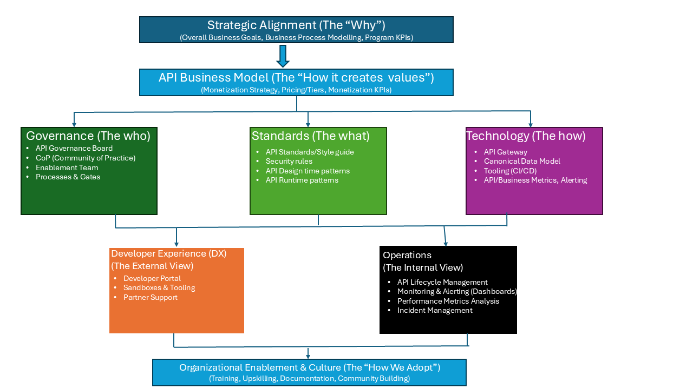
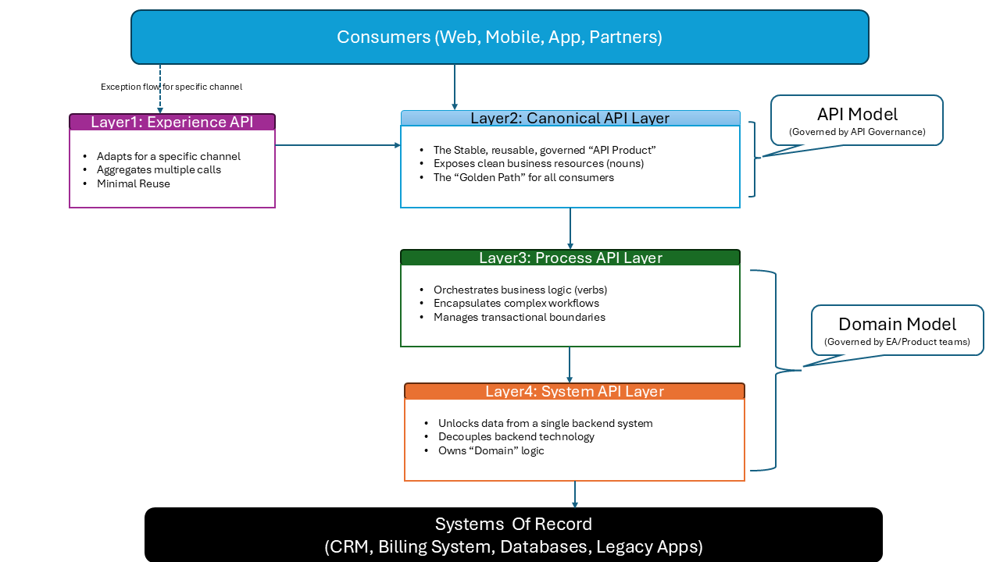
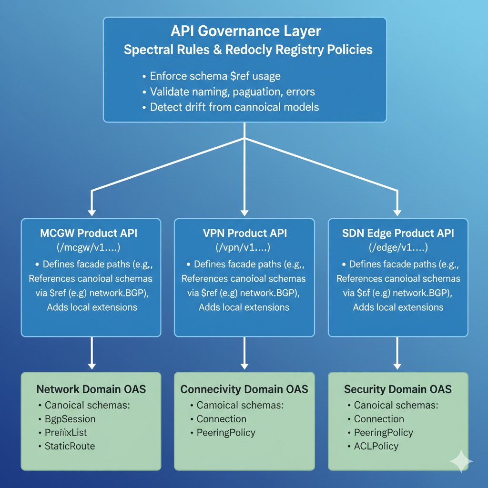
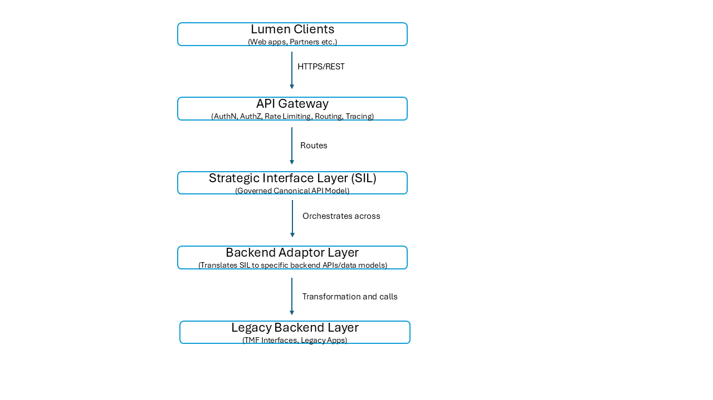
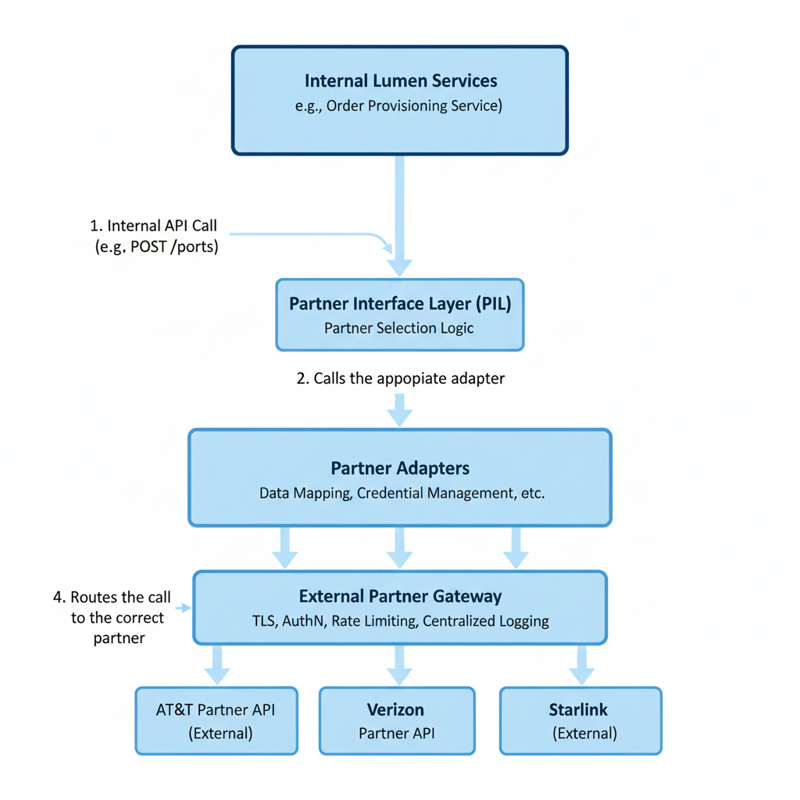
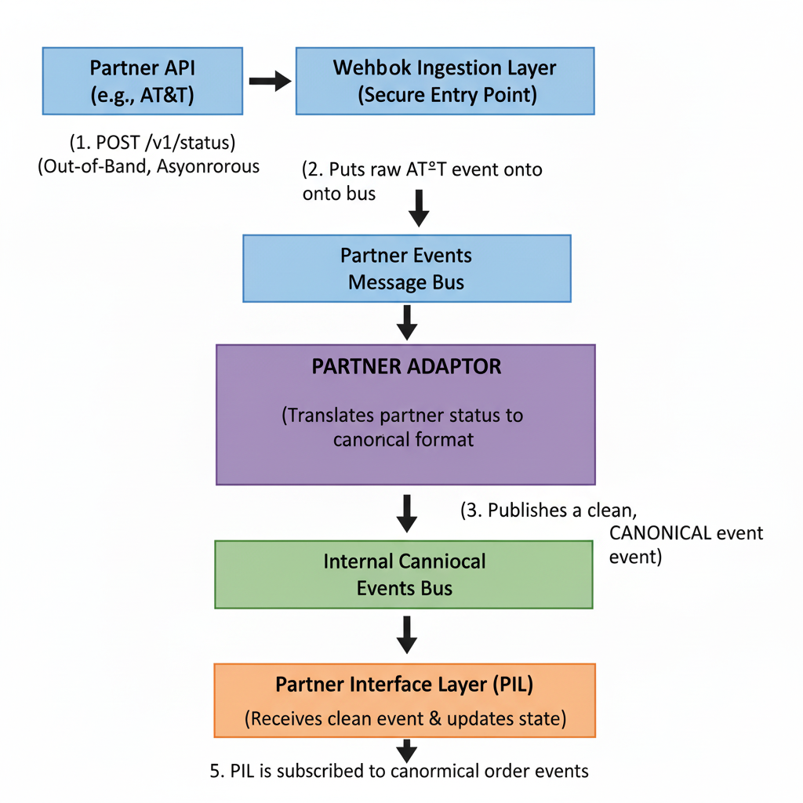
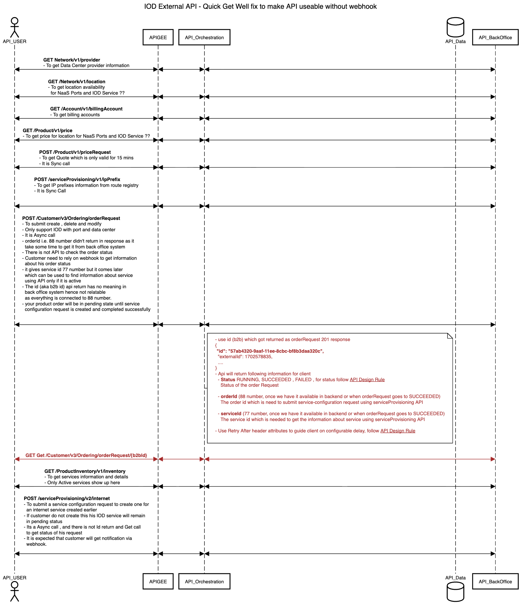
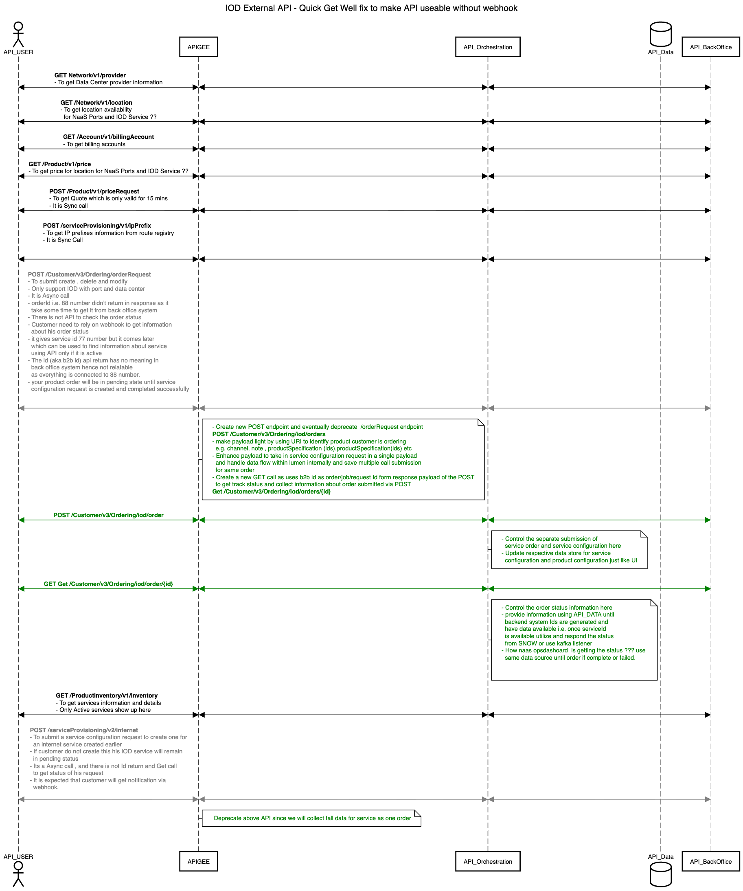
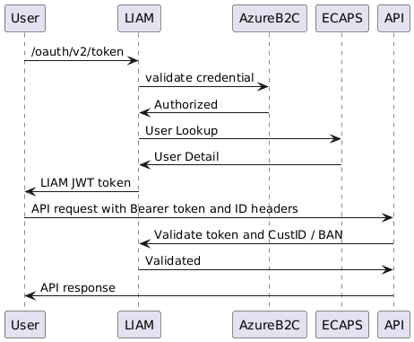

This document outlines the comprehensive API strategy for Lumen. It details the core business objectives driving this initiative and the strategic framework that will guide our technology, governance, and cultural transformation. The goal is to evolve Lumen's APIs from a collection of inconsistent interfaces into a true, scalable platform that drives new revenue and delivers a world-class partner experience
This API strategy is a direct response to critical business needs. The significance of this program is its ability to fundamentally change how Lumen grows and competes.
To achieve these goals, we will implement a holistic strategy that aligns our business, governance, technology, and culture. The following diagram outlines the core components of our approach.

To achieve these goals, we will implement a holistic strategy that aligns our business, governance, technology, and culture. The following framework outlines the core components of our approach.
Execution (Governance, Standards, & Technology): This is the core of our implementation, defining the people, processes, and tools required for success.
Governance: This defines the "who" and "how" of our decision-making process. It's a phased model designed to evolve as our maturity grows:
Table of Contents
Mission: To establish, govern, and drive the adoption of a unified enterprise API strategy. This group will act as the engine for transforming Lumen's APIs from a collection of inconsistent interfaces into a cohesive, secure, and scalable platform that accelerates business growth.
Vision: To create a world-class API ecosystem that empowers our product teams, delights our partners and customers, and establishes Lumen as a leader in digital connectivity.
This working group is the primary operational body responsible for defining and implementing the API strategy. Its scope includes:
Reference Architecture Ownership:
Define, document, and govern the official "Sell" Side (SIL) Reference Architecture for customer-facing APIs.
Standards and Canonical Models:
Finalize, approve, and manage the lifecycle of the enterprise API Style Guide.
Governance Process & Tooling:
Define the end-to-end API lifecycle, including the governance "toll gates" and required artifacts for each stage.
Tactical Execution and Enablement:
Act as the initial API design review board for new and in-flight projects.
This is a cross-functional working group composed of key stakeholders from architecture, product, and engineering.
Core Members:
Anuj Tyagi (Platform API Product Management)
Consulting Members (as needed):
James Dwyer (Execution Team Architect)
To ensure a high tempo and full transparency, the group will adhere to the following operational model:
API_Governance).Meeting Cadence: The group will establish a rhythm that balances deep-dive strategic work with rapid issue resolution, likely consisting of:
One 60-minute weekly working session.
The immediate focus of the working group will be to deliver tangible value by tackling the highest-priority foundational and tactical items.
Finalize the Playbook:
Formally approve the v1.0 API Style Guide.
Facilitate the "Face of Lumen":
Begin the process of working with the relevant product teams to define the Canonical Data Model for the most critical resources, using the MCGW/LMCC project as the primary input.
Execute the First Tactical Engagements:
Perform a formal gap analysis of the MCGW/LMCC APIs against the new standards and deliver a prioritized backlog of alignment tasks to the delivery team.
The success of this working group will be measured by its ability to drive tangible improvements in:
This document defines the standard lifecycle and governance process for designing, building, deploying, and deprecating APIs at Lumen. It ensures APIs are consistent, secure, aligned with strategic goals (per the Principles of Cloud-First API Design), and adhere to the official Lumen API Style Guide. This process integrates governance checkpoints directly into the standard Software Development Lifecycle (SDLC).
Required Info:
Clear Business Purpose & Use Case.
Governance Review (Initial Checkpoint):
Strategic Alignment: Does this align with Cloud-First Principles?
Action (Repo Request):
New API: Request new Git repo from API Governance (provide domain, name, purpose, team). Governance provisions repo per standards.
v(n+1) for breaking changes, minor update to v(n) for non-breaking additions) with governance, based on the approved API Versioning Standard.Action (OAS Development):
Development team designs the API in a feature branch, creating/updating openapi.yaml.
summary, description).Automated Checks (CI/Jenkins):
PR MUST trigger automated checks.
Security Review (Post-Automation, Pre-Governance):
Trigger: Automated checks pass.
Manual Governance Review (Post-Security Approval):
Trigger: Security review is approved.
Focus:
Outcome:
Approved: Governance approves the PR.
If an exception is required, the Governance Working Group documents the justification and submits it to the API Governance Approval Board.
Action (Performance Testing):
Performance tests are run against the implemented API.
Action (Gateway Team):
Gateway team is notified (via automated process or ticket) that an approved API version is ready.
Action (Dev Portal Team / Automation):
The approved OAS from the repository is ingested into the Developer Portal.
Phase 1: Announce 📣
Endpoint remains fully functional.
deprecated: true.Deprecation and Sunset headers (per RFC 8594) indicating announcement date and removal date.Phase 2: Sunset 🌇
On the announced Sunset date:
404 Not Found or 410 Gone for removed endpoints; potentially 400 Bad Request if a deprecated field is used incorrectly).| Activity | Product Owner | Sol. Architect | Dev Team | API Governance WG | API Gov. Board | Security Team | Gateway Team | Dev Portal Team |
| 1. Planning: Identify Need & Notify Gov. | R, A | R | I | C | I | I | I | I |
| 1. Planning: Initial Governance Review | C | C | I | A, R | I | I | I | I |
| 2. Design: Request Repo / Versioning | I | C | R, A | C | I | I | I | I |
| 2. Design: Develop OAS & NFRs | C | C | A, R | C | I | C | I | I |
| 2. Design: Use Linter Locally | I | I | A, R | I | I | I | I | I |
| 3. Review: Submit PR | I | I | R, A | I | I | I | I | I |
| 3. Review: Run Automated Checks (CI) | I | I | R | A (Ruleset) | I | I | I | I |
| 3. Review: Security Review | I | C | R | I | I | A, R | I | I |
| 3. Review: Manual Governance Review | C | C | R | A, R | C (Exceptions) | C | I | I |
| 3. Review: Request/Approve Exception | I | I | I | R | A | I | I | I |
| 3. Review: Merge Approved PR | I | I | A, R | I | I | I | I | I |
| 4. Implement: Build API | I | C | A, R | I | I | C | I | I |
| 4. Implement: Performance Testing | I | C | R | I | I | I | I | I |
| 5. Deploy: Notify Gateway Team | I | I | R | I | I | I | I | I |
| 5. Deploy: Configure & Deploy Proxy | I | I | I | C | I | C | A, R | I |
| 6. Publish: Update Developer Portal | I | I | I | I | I | I | C | A, R |
| 7. Deprecate: Announce (OAS, Headers) | C | C | A, R | C | I | I | C | R |
| 7. Deprecate: Sunset (Remove Code) | I | C | A, R | I | I | I | I | I |
| 7. Deprecate: Update Gateway/Portal | I | I | I | C | I | I | R | R |
Legend: R=Responsible, A=Accountable, C=Consulted, I=Informed
Our strategy will progress through three distinct phases:
Goal: Formalize our core API standards, processes, and reference architectures while designing the first canonical models for a selected pilot project.
Objective: Draft, socialize, and ratify all v1.0 foundational governance documents.
Deliverables:
Activities: * Draft all initial governance and reference documents. * Socialize drafts with Architecture, Security, and Engineering. * Incorporate feedback and ratify through the API Governance.
Objective: Validate the canonical modeling approach through a real-world pilot project.
Deliverables:
Deliverables:
Goal: Operationalize the governance process, expand canonical modeling to the next domain, and initiate structured enablement across teams.
Deliverables:
Objective: Define and enforce the shared-customer model, including consent-based visibility and partner projections.
Cross-Dependencies: Security, Data Governance, API Governance.
Deliverables:
Deliverables:
Deliverables:
Prioritized backlog of alignment and remediation tasks delivered to project teams.
Platform & Enablement (New)
Deliverables:
Goal: Scale governance through automation, strengthen reliability with observability standards, and improve adoption through a world-class Developer Experience (DX).
Focus Areas:
This document defines the metadata model for API governance. Its purpose is to capture the essential "delta" information—such as ownership, business context, and governance status—that is not already present in the OpenAPI Specification (OAS) file.
This model is a two-part system designed to work with an API's source of truth (the OAS) to enable discovery, automated governance, and lifecycle management.
api-metadata.yaml): A separate metadata file that lives alongside the OAS file in the API's repository. This file describes the API as a whole.x- tags): Custom extension properties placed inside the OAS file on specific operations to enable fine-grained, automated policy enforcement.This structure makes the metadata discoverable by a cataloging tool (like Backstage) while keeping the machine-readable, automated governance rules co-located with the endpoint contracts they apply to.
api-metadata.yaml File)This metadata must be stored in a dedicated YAML file (api-metadata.yaml) in the API's root directory.
schemaVersion (String, Required): The version of this metadata schema, which enables CI validation and controlled evolution.
Value: v1.0
Identifies who is responsible for the API's development, maintenance, and business alignment. This is critical for accountability and for consumers to know who to contact.
apiName (String, Required): The human-readable, canonical name of the API (e.g., "User Profile API", "Payment Orchestration Service").ownershipModel (String, Required): For the current governance scope, this value is always Lumen-Owned.This ensures a consistent ownership declaration and establishes a foundation for future expansion (e.g., Externally-Owned, Joint-Owned) when the internal API repository is introduced.assetId(string, required): Lumen Asset ID (SYSGEN) that maps the API to its registered owner application in the Asset Management system (e.g., SYSGEN-45123). Used for authority, audit, and MAL PoC linkage.businessOwner (String, Required): The primary stakeholder or Product Manager responsible for the API's business function and roadmap (e.g., an email, user ID, or group alias).technicalOwner (String, Required): The Engineering Lead or Architect responsible for the API's technical design, implementation, and operational health.developmentTeam (String, Required): The name or alias of the team that builds and maintains the API (e.g., "identity-platform-team").supportContact (String, Required): The official support channel for consumers (e.g., a group email api-support@example.com, a Slack channel #slack-team-identity).Provides the "why" and "where" for the API within the larger enterprise architecture.
consumerAudience (String, Required): The intended consumer channel, which dictates security and exposure.
Values: internal-ui (for internal UIs/frontends), internal-service (for other internal systems/automation), external-partner, external-public
apiLayer (String, Required): The architectural classification of the API, based on its primary role.
Values: Experience, Canonical, Process, System
system (String, Optional): A key/name that links this API to a larger "System" or "Domain" in the software catalog (e.g., billing-platform, crm, customer-identity-domain).Tracks the API's maturity and the level of governance applied.
lifecycleStage (String, Required): The current stage of the API's life.
Values: Design, In-Development, Active, Deprecated, Retired
governanceLevel (String, Required): The level of review and adherence to standards applied to this API. This informs consumer trust and risk.
Values: Fully Governed, Partially Governed, Lift and Shift, Exception
deprecationDate (String, Optional): (If lifecycleStage is "Deprecated") The date (ISO 8601) when the API will no longer be supported.sunsetDate (String, Optional): (If lifecycleStage is "Deprecated") The date (ISO 8601) when the API will be shut down.Captures high-level technical attributes not defined in the OAS.
apiStyle (String, Required): The architectural style of the API.
Values: REST, RPC-style, GraphQL, gRPC, Async
protocol (String, Required): The primary protocol used.
Values: HTTPS, WSS (WebSockets), AMQP (Messaging), etc.
Defines the overall risk and compliance posture for the API.
dataClassification (String, Required): The highest sensitivity level of data handled by any endpoint in the API. This acts as a high-water mark for compliance.
Examples: Public, Internal, Confidential, Restricted (PII, PCI, PHI)
complianceRequirements (List, Optional): A list of any compliance regulations that apply to the data handled by this API.
Examples: ["GDPR", "HIPAA", "PCI-DSS"]
An immutable log of the latest governance review. This section is updated automatically by the governance process or tooling upon a successful review.
reviewAuditTrail (Object, Required): A container for all review-related metadata.
reviewId (String, Required): A unique identifier for the latest governance review.
reviewDate (String, Required): The timestamp (ISO 8601) when the latest review was completed.reviewStatus (String, Required): The outcome of the review.
Pending, Approved, Approved with Conditions, RejectedsecurityReviewId (String, Optional): A unique identifier that links this governance review to an internal risk, compliance, or security review record.To enable automated CI validation, editor autocompletion, and ensure conformity, all catalog.yaml files must validate against the official JSON Schema.
catalog-schema.jsonFor fine-grained, automated governance (e.g., security policies, linting, gateway configuration), we must apply metadata at the Operation (Endpoint) level.
This metadata must be stored inside the OAS file using OpenAPI Specification Extensions (fields prefixed with x-).
This metadata lives directly on the operation object within the OAS file, making the spec a self-contained source of truth for automation.
Example within the OAS (api.oas.yaml):
paths:
/users:
post:
summary: Create a new user
operationId: createUser
# --- Automated Governance Metadata Starts Here ---
x-data-classification: "Restricted (PII)"
x-operation-type: "lro" # (Long-Running Operation)
x-financial-operation: false
x-idempotent: false
# --- Automated Governance Metadata Ends Here ---
tags:
- Users
requestBody:
description: User object to be created
required: true
content:
application/json:
schema:
$ref: '#/components/schemas/User'
responses:
'202':
description: Accepted. The user creation is in progress.
'400':
description: Invalid input
x-data-classification (String, Required): The sensitivity of the data handled by this specific endpoint. This is the most critical field for automated security and can be more granular than the API-level high-water mark.
Examples: Restricted (PII), Confidential, Internal, Public
x-operation-type (String, Optional): Defines the behavior of the endpoint, allowing the API gateway to apply different policies (e.g., timeouts, retry logic).
Examples: lro (Long-Running Operation), bulk-data, standard-sync
x-financial-operation (Boolean, Optional): Flags if this operation initiates a financial transaction, which can trigger stricter audit logging policies. Defaults to false.x-idempotent (Boolean, Optional): Explicitly declares if a POST or PATCH operation is safe to retry. This is crucial for resilient consumer design.A common concern is that x- tags will clutter the rendered documentation (e.g., Swagger UI). This is a solvable presentation problem.
x- tags is automation (linters, security scanners, API gateways). It is essential for these tags to be machine-readable.Solution: The documentation tools should be configured to interpret these tags rather than just displaying them. Your developer portal can be customized to:
Hide governance tags from the default view.
x-data-classification: "Restricted (PII)" could be rendered as a highly visible red "PII Data" badge.x-operation-type: "lro" could show a small "hourglass" icon.{
"$schema": "http://json-schema.org/draft-07/schema#",
"title": "API Governance Catalog Metadata",
"description": "Schema for the catalog.yaml file, which provides governance and discovery metadata for an API.",
"type": "object",
"properties": {
"schemaVersion": {
"description": "The version of this metadata schema.",
"type": "string",
"enum": ["v1.0"]
},
"apiName": {
"description": "The human-readable, canonical name of the API.",
"type": "string",
"minLength": 1
},
"ownershipModel": {
"description": "Defines the ownership classification of the API. For governance scope, always 'Lumen-Owned'.",
"type": "string",
"enum": ["Lumen-Owned"]
},
"assetId": {
"type": "string",
"minLength": 1,
"description": "Lumen Asset ID (SYSGEN) linking to Asset Management",
"examples": ["SYSGEN-45123"]
},
"businessOwner": {
"description": "The primary stakeholder or Product Manager (email, ID, or alias).",
"type": "string",
"minLength": 1
},
"technicalOwner": {
"description": "The Engineering Lead or Architect (email, ID, or alias).",
"type": "string",
"minLength": 1
},
"developmentTeam": {
"description": "The name or alias of the team that builds and maintains the API.",
"type": "string",
"minLength": 1
},
"supportContact": {
"description": "The official support channel for consumers (email or Slack channel).",
"type": "string",
"minLength": 1
},
"consumerAudience": {
"description": "The intended consumer channel, which dictates security and exposure.",
"type": "string",
"enum": [
"internal-ui",
"internal-service",
"external-partner",
"external-public"
]
},
"apiLayer": {
"description": "The architectural classification of the API, based on its primary role.",
"type": "string",
"enum": [
"Experience",
"Canonical",
"Process",
"System"
]
},
"system": {
"description": "A key/name that links this API to a larger System or Domain in the software catalog.",
"type": "string"
},
"lifecycleStage": {
"description": "The current stage of the API's life.",
"type": "string",
"enum": [
"Design",
"In-Development",
"Active",
"Deprecated",
"Retired"
]
},
"governanceLevel": {
"description": "The level of review and adherence to standards applied to this API.",
"type": "string",
"enum": [
"Fully Governed",
"Partially Governed",
"Lift and Shift",
"Exception"
]
},
"deprecationDate": {
"description": "The date (ISO 8601) when the API will no longer be supported.",
"type": ["string", "null"],
"format": "date-time"
},
"sunsetDate": {
"description": "The date (ISO 8601) when the API will be shut down.",
"type": ["string", "null"],
"format": "date-time"
},
"apiStyle": {
"description": "The architectural style of the API.",
"type": "string",
"enum": [
"REST",
"RPC-style",
"GraphQL",
"gRPC",
"Async"
]
},
"protocol": {
"description": "The primary protocol used.",
"type": "string",
"enum": [
"HTTPS",
"WSS",
"AMQP",
"MQTT"
]
},
"dataClassification": {
"description": "The highest sensitivity level of data handled by any endpoint in the API.",
"type": "string",
"enum": [
"Public",
"Internal",
"Confidential",
"Restricted (PII, PCI, PHI)"
]
},
"complianceRequirements": {
"description": "A list of any compliance regulations that apply to this API.",
"type": "array",
"items": {
"type": "string"
},
"uniqueItems": true
},
"reviewAuditTrail": {
"description": "An immutable log of the latest governance review.",
"type": "object",
"properties": {
"reviewId": {
"description": "A unique identifier for the latest governance review.",
"type": "string",
"minLength": 1
},
"reviewDate": {
"description": "The timestamp (ISO 8601) when the latest review was completed.",
"type": "string",
"format": "date-time"
},
"reviewStatus": {
"description": "The outcome of the review.",
"type": "string",
"enum": [
"Pending",
"Approved",
"Approved with Conditions",
"Rejected"
]
},
"securityReviewId": {
"description": "A unique identifier that links to an internal risk or security review record.",
"type": "string"
}
},
"required": [
"reviewId",
"reviewDate",
"reviewStatus"
],
"additionalProperties": false
}
},
"required": [
"schemaVersion",
"apiName",
"ownershipModel",
"assetId"
"businessOwner",
"technicalOwner",
"developmentTeam",
"supportContact",
"consumerAudience",
"apiLayer",
"lifecycleStage",
"governanceLevel",
"apiStyle",
"protocol",
"dataClassification",
"reviewAuditTrail"
],
"additionalProperties": false
}
To create a realistic, repeatable, and effective framework for driving the adoption of the new API Strategy. This plan is designed to be piloted with a key department and then scaled to the wider organization.
Core Message (The "Message House"):
We are launching a new, unified API framework. Everything we do anchors to these three pillars:
Goal: To finalize all assets and solve technical blockers before the first announcement. This phase is owned by the API Governance team.
| Action Item | Owner | Status | Details |
|---|---|---|---|
| Define & Approve Developer Tooling (POC) | Evangelism Lead (Maninder), API Platform Engineer | Blocked | CRITICAL: Current tool (SwaggerHub) does not support Spectral linting at design-time. Need POC + Legal/Licensing review for a VS Code + Spectral + 42 Crunch-like environment. |
| Finalize Core Assets | API Governance Team | Blocked | The API Style Guide , Governance Process, Centralized Repo Design, Developer workflow for authoring and working with governance workflow and the API Publishing Playbook (Public vs. Internal) must be 100% final and published on Confluence. |
| Create Evangelism Toolkit | Evangelism Lead (Maninder), Ravi | To-Do | Create the "master" PowerPoint deck. This deck must include the "Why" (Strategy), the "What" (Style Guide), and the "How" (a visual of the new Governance Process). |
| Solve "Confluence Blocker" | Evangelism Lead (Maninder) | To-Do | 1. Get the official "How to get a Confluence license" link. 2. Create a SharePoint site/folder. 3. Upload PDF versions of the Style Guide and Playbook to SharePoint. |
| Create "Intake Form" | Evangelism Lead (Maninder) | To-Do | Create the official Jira Form for teams to request "White Glove" support, as mentioned by management. |
| Create FAQ / Objection Handling Doc | Evangelism Lead (Maninder) | To-Do | Preemptively answer objections ("Will this slow us down?", "Why is this required for internal APIs?") to reduce friction. |
Goal: To test, refine, and prove our evangelism model with a friendly, high-context audience.
| Step | Channel | Target Audience | Key Message & "Ask" |
| 1. The Announcement | Mailing List | All (Engineers, PMs, Leaders) | "Introducing the new API Governance process, built on 3 pillars: Predictable APIs, Automated Governance, & Faster Delivery. We're piloting it with you." Links: Confluence (w/ license link) & SharePoint (PDFs). |
| 2. Developer Deep Dive | Engineering Garage / Community of Practice (CoP) | Engineers / Developers | "Live Demo: How to Publish Your API in 2026." We will walk through the entire feature-branch -->governance-approved --> main workflow to show how the pipeline enforces the new standards. |
| 3. Product Manager Sync | PM Forum / Scheduled Meeting | Product Managers | "How the New Governance Process Accelerates Your Roadmap." We will focus on how this process enables the Partner/Wholesale models and reduces manual review time. |
| 4. "White Glove" Pilot | Direct Engagement | 2-3 Selected Projects | We will offer hands-on support for 2-3 key projects in this department. This is our chance to be embedded, find gaps in our process, and get our first "wins." |
| 5. Pilot Retro & Success Story | Internal Meeting | API Governance Team + Pilot Team Leads | 1. "What worked? What was confusing? What's missing in the docs?" 2. Create a 1-slide "Success Story" with a "Before & After" and a quote from the dev lead. Nothing accelerates adoption like early wins. |
Goal: To scale the successful, refined pilot program to the entire engineering and product organization.
| Step | Channel | Target Audience | Details |
| 1. Public Announcement | MyEvive / SharePoint Blog Post | All Engineering & Product | Take the successful "Mailing Letter" (from Phase 1), refine it with feedback, and post it as the official "Big Bang" announcement. Feature the "Success Story" from the pilot. |
| 2. Company-Wide Demos | Brown Bags / Lunch & Learns (Scheduled) | All Engineers / Developers | Take the successful "Live Demo" (from Phase 1) and offer it as a recurring, scheduled workshop for all. |
| 3. Open "White Glove" Queue | Jira Intake Form | All Teams | Formally open the "White Glove" support queue (created in Phase 0) to all teams, with clear SLAs based on what we learned in the pilot. |
Goal: To ensure this effort has a lasting impact and to prove its value to leadership.
| Activity | Frequency | Owner | Metrics for Success (Leadership KPIs) |
| Community of Practice (CoP) | Monthly | API Governance Team | # of attendees; # of questions/topics submitted. |
| API Evangelism Blog | Monthly | Evangelism Lead (Maninder) | Post views; engagement; new topics from the "post ideas" list. |
| White Glove Support | Ongoing | API Architects | % of new APIs conformant without human involvement; queue backlog. |
| Leadership Report | Quarterly | Evangelism Lead (Maninder) | Process Adoption: Time from idea -> governance-approved OAS. Efficiency: Reduction in manual review time. Discoverability: % of APIs discoverable in the central catalog. Consolidation: Reduction in API duplication. |
Why API Governance Is the Engine Behind Lumen’s Growth, Speed, and Partner Ecosystem ?
APIs are no longer just integration tools — they are the growth engine of modern digital businesses.
At Lumen, APIs now determine:
But today, our biggest barrier isn’t network capacity or cloud footprint.
It’s inconsistent, siloed, non-reusable APIs that force us into manual work, create friction for partners, and slow our entry into new sales channels.
This is why Lumen’s API Governance Framework and Style Guide exist.
Not to enforce rules — but to unlock the strategic business goals that leadership has committed to.
This API strategy is not a technical initiative.
It is a business transformation program.
Below are the four business drivers guiding everything we are doing.
Lumen can now sell network services directly in cloud marketplaces (AWS, Azure), giving customers the ability to buy Lumen products where they already shop.
This is a fundamental shift in our business model.
But this only works if we offer:
Inconsistent APIs block our ability to scale in cloud marketplaces; standardized governed APIs unlock global reach.
Beyond marketplaces, this strategy lets us expand our footprint by using partners as offnet providers, enabling Lumen to sell services anywhere, even in markets where we don’t own the physical network.
This is the fastest route to geographic expansion Lumen has ever had.
Our competitors (PacketFabric, MP) already differentiate through speed.
To win, we must deliver what they cannot:
network activation in minutes, not months.
That requires:
The only way to achieve this is with governed, consistent APIs that operate as a unified automation layer.
The Style Guide solves the problem of inconsistent, ad-hoc patterns that slow down automation.
Once consistent, our APIs become an assembly line — predictable, repeatable, and fast.
This is not an architecture decision.
It is a speed-to-market strategy.
For partners like AWS, Azure, AT&T, and data center operators, the quality of our APIs IS the experience.
Today, we struggle with:
These cause friction, which translates into lost deals and lost strategic partnerships.
A professionally governed API program changes the equation:
This transforms Lumen into a partner-ready, integration-friendly provider — the one enterprise customers want to work with.
This is how we become the partner of choice in the cloud and telecom ecosystem.
Historically, every new partner, system, or initiative required a brand-new, bespoke integration:
This created:
The new API Governance Framework and Style Guide solve this by creating one reusable framework for all integrations — internal, partner, marketplace, automation, wholesale, enterprise.
This lets us:
This is how Lumen stops building expensive one-off solutions and starts building a platform.
To achieve these business outcomes, we use the Strategic Four-Layer Architecture:
This architecture ensures:
This is how we build once and scale infinitely.
The Style Guide is the operational mechanism that makes these business drivers real.
It ensures:
Every standard exists for a business reason:
These are not technical preferences — they are enablers of revenue, speed, partner trust, and scalability.
Audience-driven API security ensures:
This protects revenue AND accelerates onboarding.
Governance enforces consistency automatically, using:
This creates:
Governance is the runway, not the restraint.
When we apply:
we transform Lumen from a telecom company with APIs into a platform company with revenue-generating capabilities.
This strategy:
This is not a technology initiative. This is a business growth initiative powered by APIs.
This is how Lumen wins.

In a large-scale enterprise like Lumen, a well-defined API architecture is the foundation for achieving digital agility, scalability, and reusability. While the traditional three-layer model (Experience, Process, System) provides a good starting point, a more mature four-layer architecture offers greater clarity by explicitly separating the stable, public-facing API contract from consumer-specific adaptations.
This model serves three distinct but related functions: as a classification system, a design pattern, and most critically, as an architectural pattern.
It's important to understand that this model provides value in three distinct ways.
This refined model consists of four logical layers: Experience, Canonical, Process, and System.
This is a thin, non-reusable adaptation layer whose sole purpose is to handle the unique needs of a specific consumer that cannot be efficiently served by the standard canonical API. It is an exception, not the norm.
Advantages:
Flexibility & Usability: Tailored to specific user experiences, making them easier for front-end developers to consume.
What to Watch For (Architectural Concerns):
Minimal Reuse: These APIs are purpose-built and should not be reused, leading to potential maintenance overhead if not governed properly.
This is the default, reusable, and governed API "product" for the enterprise. It is the stable, well-documented storefront that should be used by all internal and external channels whenever possible.
Advantages:
High Reusability: Designed to be the "golden path" used by 90% of consumers.
What to Watch For:
Purity: This layer must be protected from being polluted with channel-specific logic or internal implementation details.
Order, Service, Customer).This internal-facing layer contains the business logic that orchestrates multiple systems to complete a business process. It is the engine that powers the layers above it.
Advantages:
Consistency: Standardizes business processes across the organization.
What to Watch For (Architectural Concerns):
Owns Process Logic: This is the correct place for logic that spans multiple systems or domains (e.g., "update billing, then update provisioning").
These are the foundational APIs that provide direct, unlocked access to core systems of record (e.g., a legacy CRM, a billing system, a database).
Advantages:
Reusability & Stability: Highly reusable across different processes and provides a stable foundation for other APIs to build upon.
What to Watch For (Architectural Concerns):
Owns Domain Logic: This layer must contain and enforce the business logic specific to the entity it manages (e.g., a CRM-System-API must enforce the rules for a valid "Customer").
A successful API strategy requires a clear ownership model where APIs are treated as products. While governance is a shared responsibility, the roles for each group are distinct and complementary.
| Role | Responsibility |
|---|---|
| Product Teams | Act as the "API Product Owners." They own the end-to-end lifecycle of the APIs within their business domain, across all four layers. This includes defining the roadmap for the Canonical API (Layer 2), prioritizing features, and ensuring the underlying Process and System APIs (Layers 3 & 4) meet the business needs. |
| API Governance | Act as the "Portfolio Managers" or "City Planners." They do not own individual APIs but own the overall API landscape. They define the enterprise-wide standards (the "building codes"), manage the API catalog, and ensure consistency and quality across all API products. |
| Enterprise Architecture (EA) | Act as the "Chief Architects" or "Building Inspectors." They own the strategic patterns, like this four-layer model, and ensure that the technical implementations are sound, scalable, and align with the broader technology vision of the company. |
The core reason for separating these layers is to prevent the creation of a monolithic API that becomes brittle, difficult to maintain, and a bottleneck for business innovation. A single API that attempts to do all three would suffer from several critical flaws:
Layered Solution: The layered model allows for parallel development and faster innovation.
Experience APIs can be built quickly to experiment with new user experiences, as they are simply compositing existing functionality.
Consider the scenario of allowing a customer to upgrade their service plan.
The Right Way (Four-Layer Model):
System APIs:
CRM-System-API: Exposes raw customer data and enforces all business rules for a valid customer.
Billing-System-API: Exposes billing data and enforces all rules for valid billing plans.Provisioning-System-API: Exposes low-level provisioning actions and enforces rules for valid service configurations.Process API:
Update-Service-Process-API: Contains the cross-system orchestration workflow:
Billing-System-API to change the plan.Provisioning-System-API to apply the new service configuration.Customer-API: Exposes a clean, governed Customer resource, including their ServicePlan. Provides a standard PATCH /customers/{id}/servicePlan endpoint. The mobile and web teams both build their UIs against this stable, reusable contract.
Experience API (An Exception):
A new, high-value partner requires a legacy SOAP XML interface for service upgrades. Instead of polluting the modern Customer-API, we create a short-lived Partner-Upgrade-Experience-API.
Customer-API's PATCH endpoint. This meets the partner's unique need without disrupting our core architecture.By adopting this four-layer approach, Lumen can create a clear separation of concerns that drives standardization and reuse through the Canonical API Layer, while providing managed flexibility for specific consumer needs through the Experience API Layer.
In our pursuit of a robust and agile enterprise architecture, we face a fundamental challenge: managing the immense complexity of interrelated services and configurations. The common pitfall is to chase a single, perfect, all-encompassing data model, which is unrealistic and ultimately stifles innovation.
This document outlines our strategy for the Canonical Data Model (CDM). It is not a proposal for a rigid, monolithic system, but rather a principle-based framework for creating a system of models. This approach allows us to build a stable foundation while embracing flexibility and isolating complexity. Our strategy is founded on three core architectural principles:
Adopting this approach is mandatory for achieving the goals of our Strategic Interface Layer (SIL) and Partner Interface Layer (PIL). It is the key to delivering standardization, agility, and true decoupling.
Defining clear bounded contexts is crucial for managing complexity across Lumen's vast product and network portfolio. Here are some logical domains:
In Progress, Completed, Cancelled).Responsibility: This is a large context often broken down further. It's concerned with the technical configuration of a service on the network.
Access/UNI Sub-Context: Manages the customer-facing interface. Data includes port speed, encapsulation type and VLAN IDs. This is the physical or virtual handoff to the customer.
The Canonical Data Model (CDM) is the single, unified, and consistent data structure for our key business entities (e.g., Customer, Order, Service, Port) across the enterprise. It acts as the universal language for all our APIs.
In the context of our new architecture—the Strategic Interface Layer (SIL) and the Partner Interface Layer (PIL)—the CDM is not just beneficial, it is absolutely mandatory for achieving our goals of standardization, agility, and decoupling.
The CDM's primary role is to enforce the principle of decoupling—shielding consuming applications from the technical complexity and volatility of backend systems.
| Strategic Interface Layer (SIL) | Partner Interface Layer (PIL) |
|---|---|
| Mission: Provide clients (internal and external) with a stable, predictable, and consistent view of our business services. | Mission: Protect our internal services from the complexity and constant change of integrating with external third-party vendors. |
| How the CDM Helps: The SIL uses the CDM as its public contract. All data, regardless of its source system, is translated into the standard CDM format before being exposed through the SIL. | How the CDM Helps: The PIL uses the CDM as its internal standard. It translates vendor-specific data models into our internal CDM, ensuring our core services only ever have to understand one data language. |
| Benefit | Why it Matters |
|---|---|
| Consistent Client Contract | The CDM ensures that all clients (mobile, web, partners) receive the same field names, formats, and structures for an entity like 'Customer', regardless of which backend system is supplying the data. This eliminates ambiguity and reduces integration costs for consumers. |
| Simplified Orchestration | When the SIL orchestrates a complex business process, data retrieved from one system (e.g., Billing) is immediately recognizable and usable when passed to another system (e.g., Provisioning). The CDM removes the need for multiple, complex data translations within the SIL itself. |
| Accelerated Migration | We can replace a legacy backend system with a new strategic one without changing the client-facing API contract. The old system was translated to the CDM, the new system will natively speak the CDM. This gives us immense technical and business flexibility. |
| Benefit | Why it Matters |
|---|---|
| Internal Decoupling | Internal services only ever see and use our Canonical Model for a concept like a 'Port'. They are entirely shielded from the specific, often messy, data formats (XML, JSON, SOAP) required by partners like AT&T or Verizon. |
| Plug-and-Play Partner Integration | Partner Adaptors become simple two-way translators: Our CDM ⇄ Partner Format. This means integrating a new partner (e.g., Starlink) is fast, requiring only a new adaptor, with zero code change to the PIL or our internal services. |
| Vendor Neutrality | Business rules for partner selection (managed by the PIL) can be based on standardized CDM attributes (e.g., portType, locationID), not vendor-specific identifiers. This makes switching partners a business decision, not a major technical project. |
This is a partnership between Product and Architecture.
| Area | Product Team Responsibility | Architecture Team Responsibility |
|---|---|---|
| Definition | Define the business fields, naming conventions, data types, and business rules for their domain's model. They are the ultimate authority on what a "Customer" or "Order" means to the business. | Define the technical format (e.g., JSON Schema, OpenAPI), security policies (e.g., Field-Level Authorization), and overall versioning strategy. They provide the guardrails and tools. |
| Version Control | Drive the roadmap for the next version of the model, communicating changes clearly to all consumers and stakeholders. They manage the "product backlog" for the data model. | Enforce Semantic Versioning (e.g., v1.0.0), ensuring no breaking changes are introduced without proper notification and deprecation plans. They act as the release managers for the technical standard. |
| Enforcement | Ensure all new strategic backends created by the domain team natively expose the CDM. Advocate for the CDM in all new development. | Mandate that all Adaptors (both SIL and PIL) perform the necessary translation to the CDM before data is passed to core services. They ensure compliance at the architectural level. |
To succeed, we must treat our Canonical Data Models as long-lived, strategic assets.
A project has a start and an end date. A product has a lifecycle, a roadmap, and dedicated owners who seek to maximize its value for its customers.
Order or Service entity? Plan for this evolution and communicate it transparently.The principle of "Context Boundaries" mentioned earlier comes directly from Domain-Driven Design (DDD), a crucial framework for avoiding common CDM pitfalls. DDD helps us manage complexity by acknowledging that a single model cannot effectively serve the entire business.
leadScore) is different from a "Customer" in the Billing context (with attributes like paymentTerms).customerID and legalName are canonical and shared. The Sales team's leadScore is not; it belongs only within their Bounded Context.This document provides the official blueprint and workflow for creating an API Canonical Model at Lumen. Its purpose is to guide architects and teams through a strategic, collaborative process that ensures every canonical model is a consistent, reusable, and valuable enterprise asset.
Following this workflow is essential for implementing our core architectural principles of decoupling, consistency, and agility. It transforms the creation of a model from a siloed technical task into a strategic design process that aligns with our business domains.
As illustrated in the diagram below, this workflow produces reusable Domain Models (the foundation), which are consumed by product-facing Facade APIs (the experience layer), and are all enforced by an automated Governance Layer (the contract).

Before starting the workflow, internalize these core principles that govern our approach:
In this phase, you define the problem space and establish the boundaries for your model.
Define the Business Capability: Clearly articulate the business process the model will support. Start with the "why."
Example: "Provision a Last Mile Cloud Connect service" or "Retrieve a customer's billing history."
This is the core workshop phase where the model takes shape through collaboration.
Identify Core Entities: Within the bounded context, identify the key "nouns."
Example: For a Network domain, this might be Port, Circuit, LogicalDevice, and BgpSession.
Define the Immutable Core: For each entity, define its essential, non-negotiable attributes that are stable and unlikely to change.
Example: For a Port model, this would be its portID, siteID, and physicalInterfaceType.
Define Optional Extensions and Relationships: Flesh out the model with attributes that provide flexibility or may not always be present. Define the relationships between entities.
Example: A Circuit is composed of two Ports.
This phase turns the conceptual model into a formal, ratified asset.
The final phase involves publishing the model and managing its lifecycle within our architecture.
$ref to reference the canonical schemas from the Domain OAS registry and can add their own local, product-specific extensions.These principles are the strategic solution to the very problems our customers and internal teams face. They provide the "North Star" that justifies our tactical API Style Guide.
This section translates the high-level principles into actionable guidance for different roles.
Your Role: Define the "What" and the "Why" You are the voice of the customer and the business. These principles empower you to define products, not just features.
usageType and meteringUnit as part of the feature definition (Principle 5).Your Role: Implement the "How" You build the reliable, consistent, and scalable platform. These principles are your blueprint for implementation.
202 Accepted and a Location header pointing to a job/operation resource (Principle 3). Do not build long-polling, synchronous endpoints.problem+json for errors, Link headers for pagination, and OAuth 2.0 for security (Principle 12 & 8).Your Role: Enforce the Platform Vision You are the guardians of platform cohesion, long-term strategy, and governance.
/{product}/v{version}/{resource}). You MUST reject designs that create URI conflicts or inconsistent paths (Principle 4 & 7).This is our core design philosophy. It means we model all interactions—from simple data management to complex, multi-step workflows—as "resources" (nouns) that a client can interact with.
This principle explicitly forbids exposing internal verbs or process steps (RPC-style).
It's crucial to understand that "resource-oriented" is not just for simple CRUD (Create, Read, Update, Delete). It is the interface style we use for two distinct patterns:
/ports, /users)./orders, /connections).Why: A consistent, resource-based interface enables self-service, idempotency, and alignment with all modern cloud provider conventions (AWS/GCP/Azure).
This is the message you send to a resource. It's the opposite of an imperative command.
Instead of a step-by-step process, the client sends a declarative payload describing the desired end state. Our orchestration façade is then responsible for making the "actual state" match that "desired state."
This is the most important concept. We abstract our internal process into a single, simple, resource-based API call.
The client must know our internal steps. (FORBIDDEN)
POST /api/checkPrice
POST /api/createQuote
POST /api/submitOrder
The client interacts with one resource (/v1/connections) and provides a desired-state body. Our façade hides the entire price/quote/order process.
POST /v1/connections
{
"bandwidth": "10G",
"src_port": "port-abc",
"dst_port": "port-xyz"
}
What it means: Long-running provisioning and teardown tasks (like the POST /v1/connections example above) MUST return an operation resource immediately.
Example:
POST /fabric/v1/connections → 202 AcceptedLocation: /fabric/v1/operations/12345Why: Mirrors GCP/Azure async operation patterns; avoids client timeouts and supports distributed job orchestration.
What it means: Versioning sits within the product namespace, never at the cross-domain layer.
Example:
/fabric/v1/telemetry/events/mcgw/v1/connectionsWhy: Each product can evolve independently; prevents version collisions across domains.
What it means: Every resource request validates the caller’s entitlements and records usage events for billing.
Example Metadata:
{
"entitlementId": "ENT-123",
"usageType": "bandwidth-hours",
"meteringUnit": "GB"
}
Why: Supports SaaS-like pay-per-use and quota enforcement similar to cloud hyperscalers.
What it means: Customers and partners can onboard, provision, and manage services fully via API or IaC templates—no ticketing.
Why: Enables elasticity, automation, and integration into DevOps pipelines.
What it means: Product namespaces and resource naming follow a canonical structure: /{product}/v{version}/{resource}/{subresource}
Why: Drives predictability across APIs, allowing governance automation (Spectral rules, gateway routing) and consistent developer experience.
What it means: OAuth 2.0/OIDC as baseline; JWT claims carry entitlements, scopes, and tenant context.
Example Scopes: fabric:read, mcgw:modify, wholesale:metrics
Why: Enables fine-grained authorization and uniform policy enforcement across products.
What it means: APIs emit standardized metrics and events: latency, success rate, error codes, SLO violations, and usage.
Example:
POST /telemetry/events
{
"api": "/fabric/v1/ports",
"latencyMs": 245,
"status": 200
}
Why: Provides the foundation for automated SLA tracking, billing accuracy, and health dashboards.
What it means: Partner and wholesale APIs follow the same design principles, enabling multi-tenant federation.
Example:
/wholesale/fabric/v1/connections/partner/mcgw/v1/ordersWhy: Supports ecosystem integration (hyperscalers, value-added resellers) without duplicating backend logic.
What it means: Design patterns are machine-verifiable. URI structure, version placement, naming, and required metadata are enforced by Spectral linting and CI pipelines.
Why: Guarantees compliance at scale, reduces manual reviews, and allows self-serve publication to catalogs (e.g., Backstage).
What it means: Consistent error models, pagination, and async patterns across all APIs; SDKs and documentation generated from OAS.
Example Error:
{
"errorCode": "FABRIC-404",
"message": "Port not found",
"correlationId": "abc-123"
}
Why: Developers can reuse tooling and templates across products, just like AWS SDK parity across services.
What it means: APIs publish KPIs on adoption, latency, and SLA compliance to a governance dashboard.
Why: Drives data-driven evolution and productization—every API is treated as a measurable SaaS asset.
What it means: Security and compliance are embedded through consistent header policies, trace IDs, and encryption standards, not added after design.
Why: Supports multi-jurisdictional and regulated workloads (finance, healthcare).
What it means: APIs evolve additively; breaking changes require a new major version. Deprecated endpoints remain discoverable with Deprecation headers and clear timelines.
Why: Ensures clients can safely migrate; matches cloud provider deprecation best practices.
Lumen, a company with a history of frequent mergers and acquisitions, faces a common architectural dilemma: a fragmented backend landscape. Decades of integrating disparate systems have resulted in a lack of standardization, multiple APIs serving the same concepts with inconsistent data models, and a significant impediment to agility and unified customer experiences. The core challenge is to standardize Lumen's digital platform without requiring an immediate, disruptive "big bang" overhaul of all legacy systems
To address these challenges, we propose an architecture centered around a Strategic Interface Layer (SIL). This layer acts as a crucial abstraction and orchestration point, designed to provide immediate standardization for clients while enabling a phased, long-term migration of legacy backends.
The architecture revolves around two key principles:

Strategic Interface Layer (SIL): The is “the face of Lumen APIs”. It is key interface, based off a canonical, well governed API model exposed to clients. This is the orchestration and standardization layer. Its responsibilities include:
Standardized Contract: Exposing a unified, domain-driven API contract for core Lumen concepts (e.g., Customer, Order, Service).
This defines how the components must interact to ensure decoupling and maintain clear architectural boundaries.
This ensures that every implementation is secure, consistent, and observable.
The "Sell" Side Reference Architecture is designed as a layered, distributed system. Effective performance of this architecture relies on low-latency communication between its internal components, particularly between the Strategic Interface Layer (SIL) and its Backend Adapters.
However, Lumen's current enterprise constraint of a single, centralized API Gateway in GCP creates a "network hairpin" problem, introducing prohibitive latency (~130ms+ per hop) for any service-to-service communication that crosses cloud boundaries. While long-term solutions like a Federated Gateway or a Service Mesh are the strategic goal, they are not immediately available.
Therefore, to ensure the performance and viability of all near-term SIL implementations, the Colocation Principle is adopted as the mandatory, pragmatic interim deployment pattern
Given the immediate need for a workable solution, the following rules are mandated for all SIL implementations until a federated gateway or service mesh is available.
This document outlines the proposed "Buy" Reference Architecture—the strategy for integrating external partner capabilities (e.g., off-net ports, connectivity from AT&T, Verizon, Starlink) into Lumen's digital platform. This architecture is designed for security, governance, and decoupling to ensure that Lumen's internal services are protected from the complexity and potential volatility of third-party APIs.
Just as the Strategic Interface Layer (SIL) standardizes Lumen's selling capabilities, a robust "Buy" architecture is needed to standardize partner sourcing. When buying capabilities, the goal is to abstract the partner's technology and data model from your internal systems. Without it, internal Lumen services would be tightly coupled to specific partner technologies, leading to:
This Reference Architecture is not a single, monolithic system. It is a strategic pattern that will be implemented for each distinct "Buy" side business domain (e.g., an "OffNet Connectivity PIL," a "Cloud Marketplace PIL").
The Reference Architecture is prescriptive about the principles and components (the "what" and "why") but flexible about the implementation specifics (the "how"). It provides strong guardrails while empowering delivery teams to make the right architectural choices for their specific business problem.
This defines the non-negotiable building blocks that must be used in every implementation to ensure structural consistency across the enterprise.
| Component | Primary Role | Rationale |
|---|---|---|
| Partner Interface Layer (PIL) | The internal-facing facade for a specific business domain. | Centralizes domain-specific business logic (e.g., partner selection) and exposes a single, clean API for internal consumers. |
| Partner Adaptors | A dedicated microservice for each individual partner. | Ensures technical isolation. If a partner's API changes, only its single adaptor is updated, protecting all other components. |
| External Partner Gateway | The single, governed exit point for all outbound traffic to partners. | Critical for governance. Enforces uniform security, rate limiting, and centralized logging, preventing unmanaged service-to-internet sprawl. |
| Webhook Ingestion Layer | The single, governed entry point for all inbound asynchronous events from partners. | Provides a secure and resilient "front door" for partner webhooks, authenticating and queuing events before they are processed. |
This defines how the components must interact to ensure decoupling and maintain clear architectural boundaries.
This ensures that every implementation is secure, consistent, and observable, regardless of the specific use case.
The Reference Architecture provides guided flexibility. Any team building an implementation must consciously make and document their decisions based on this framework.
The most critical decision is the state management strategy. The design must explicitly document whether it is using a "Stateful" or "Stateless" pattern and provide a clear justification.
Question 1: What is the Source of Truth?
If the partner is the absolute source of truth for the resource (like a cloud resource), a Stateless pattern is required.
Question 2: What is the Lifecycle of the Transaction?
Is it a short-lived, real-time request/response? -> Stateless.
Question 3: How are Out-of-Band Changes Handled?
The design must address how it will handle the "tricky case" where a resource's state is changed on the partner's side without a webhook (e.g., via their portal). A Stateful pattern, for example, must include a state reconciliation mechanism
All requests for partner services must follow a stringent, controlled path to ensure security and maintainability.

Internal Lumen Service → PIL → Adaptor → External Partner Gateway → 3rd Party Partner API
| Step | Component | Action |
|---|---|---|
| Internal Call | Lumen Service | Makes a standardized request to the PIL (e.g., "Find Port in Dallas"). |
| Business Logic | PIL | Applies business rules to select the best partner (e.g., "Verizon is cheapest here") and forwards the request to the corresponding Adaptor. |
| Transformation/Vendor specific AuthN | Adaptor | Transforms the standardized PIL request into the exact format and data model required by the chosen partner's API. Also responsible for obtaining/caching the OAuth token for a specific external vendor. |
| Routing | External Partner Gateway | Manages mTLS/TLS, applies rate limits, and centrally logs the external transaction. |
| External Execution | 3rd Party Partner | Receives and executes the request. |
This layered "Buy" architecture solves the core enterprise challenges of partner integration:
For long-running processes like service provisioning, partners provide asynchronous status updates via webhooks. The Reference Architecture mandates a secure, resilient, and decoupled pattern for ingesting and processing these events.
The flow is the mirror image of the outbound request, ensuring that internal systems are shielded from the complexity and proprietary formats of partner events.
POST request to a single, secure endpoint exposed by the Webhook Ingestion Layer. This endpoint is specific to the partner (e.g., https://webhooks.lumen.com/v1/att). The payload is in the partner's native format.AT&T Adaptor) is subscribed to its topic on the message bus. It consumes the raw event and performs the critical translation, converting the partner's proprietary status codes and data fields into the official Lumen Canonical Model.lumen.order.status.updated) onto a separate Internal Canonical Events Bus.
The "Buy" Side Reference Architecture is designed as a layered, distributed system that relies on high-chattiness, low-latency communication between its internal components, particularly between the Partner Interface Layer (PIL) and its Partner Adaptors. This is especially critical during the "fan-out" process for multi-partner quoting.
However, Lumen's current enterprise constraint of a single, centralized API Gateway in GCP creates a "network hairpin" problem, introducing prohibitive latency (~130ms+ per hop) for any service-to-service communication that crosses cloud boundaries. While long-term solutions like a Federated Gateway or a Service Mesh are the strategic goal, they are not immediately available.
Therefore, to ensure the performance and viability of all near-term PIL implementations, the Colocation Principle is adopted as the mandatory, pragmatic interim deployment pattern.
Given the immediate need for a workable solution, the following rules are mandated for all PIL implementations until a federated gateway or service mesh is available.
This playbook defines the mandatory governance process for all APIs, using the lifecycleStage metadata field to track an API's authoritative status. The main branch serves as the definitive "Approved for Publish" source for both Public and Internal APIs.
This stage establishes and validates the structural contract of the API and is required for ALL APIs. An automated process sets up the feature branch and domain folder structure (e.g., /domains/<project>).
Developer Setup & Submission
Developer populates the OAS and the api-metadata.yaml files within the pre-created feature branch.
governance-approved branch.Pipeline Validation & Review
The Pipeline is triggered to run technical validation against Lumen Standards on the OAS and metadata. Architectural review takes place.
Merge to governance-approved
The PR is approved by the API Architect and merged.
Once the contract is technically approved (state: Governance-Approved), the workflow splits based on the API's designated audience.
Public APIs require a second PR for human review of external-facing documentation quality.
Documentation & Metadata Review (Stage 2)
A new PR is created from governance-approved, targeting the main branch.
Merge to main & Publish
The PR is merged into the main branch. The Public Publishing Pipeline is triggered.
developer.lumen.com.Internal APIs skip the human documentation review and use automation to achieve the final state immediately after technical approval.
Automated Merge Trigger
Automation detects the successful merge into the governance-approved branch.
Merge to main & Publish
Automation performs a fast-forward merge from governance-approved to the main branch. The Internal Publishing Pipeline is triggered immediately.
| Future Action | Lifecycle State Transition |
| Deprecation Decision | Published --> Deprecated |
| API Shutdown | Deprecated --> Retired |
This page tracks the progress of the API Working Group in reviewing, consolidating, and approving the official Lumen API Style Guide. The goal is to create a single, unified set of standards that will be used for all API development and governance.
| Subject Area | Source | Status | Open Issues / Questions | Notes / Rationale |
| Principles of Cloud-First API Design | Confluence | 🟩 Approved | ||
| OAS Specification Best Practices | Confluence | 🟩 Approved | 3.1.x (limited support). Current support 3.0.x | Updated support for 3.0.x |
| API Versioning Strategy | Confluence | 🟩 Approved | Deprecation: date format to follow RFC. Modify status code |
Updated |
| API Pagination Standards | Confluence | 🟩 Approved | next/prev is not possible at this time |
Removed |
| API Standardized Error Responses | Confluence | 🟩 Approved | traceparent, 9457 (RFC 9457 Problem Details) |
Created RFC 9457 Problem Detail profile for Lumen |
| API URI Standards and Design Patterns | Confluence | 🟩 Approved | ||
| API Standard: Idempotency | Confluence | 🟩 Approved | ||
| API Standard: Partial Resource Retrieval | Confluence | 🟩 Approved | ||
| API Standard: Delete Method | Confluence | 🟩 Approved | ||
| API Standard: Caching & Concurrency | Confluence | 🟩 Approved | ||
| API Standard: HTTP Headers | Confluence | 🟩 Approved | ||
| API Standard: Date & Time Naming | Confluence | 🟩 Approved | ||
| API Standard: Standardized Data Types | Confluence | 🟩 Approved | ||
| API Standard: Rest & Resource Design | Confluence | 🟩 Approved | ||
| API Standard: JSON Payload | Confluence | 🟩 Approved | extracted date standards seperately from json payload | |
| API Standard: GET Method | Confluence | 🟩 Approved | ||
| API Standard: POST Method | Confluence | 🟩 Approved | ||
| API Standard: PUT Method | Confluence | 🟩 Approved | ||
| API Standard: PATCH Method | Confluence | 🟩 Approved | ||
| webhook | (New Item) | ⬜ Draft | jacob(webhooks - undermetristic), casey (sre) |
Lower priority, not required for base API Styleguide |
| API Governance Process | Confluence | ⬜ Draft | Lower priority, not required for base API Styleguide | |
| API Standard: Long-Runing Operations (LRO) | Confluence | 🟩 Approved | Lower priority, not required for base API Styleguide | |
| API Standard: Bulk Data Transfer | Confluence | 🟩 Approved | Lower priority, not required for base API Styleguide | |
| API Standard: Batch Operations | Confluence | 🟩 Approved |
Export to Sheets
This document provides a set of standardized guidelines for creating high-quality, maintainable, and developer-friendly OpenAPI specifications. Adhering to these practices ensures consistency and clarity across all our APIs.
openapi: 3.0.3
info object)The info object is the first thing a developer sees. It must clearly articulate the API's purpose and business value.
info.description: This field MUST describe the business capability the API unlocks. It should answer the question, "What problem does this solve for the consumer?" Avoid technical jargon.
Bad: "An API for managing MCGW connections."
tags and summary)These fields control how your API is organized and displayed in documentation tools, making them critical for usability and context.
tags: All operations MUST be grouped using tags. The tags MUST be based on the resource name (e.g., a "Connections" tag for all operations related to connections) to organize the API around its core business objects.summary: Every operation MUST have a summary. It must be a short, action-oriented phrase from the user's perspective that clearly states what the endpoint does.
Bad: "GET connections"
operationId)The operationId is used by code generation tools to create method names in SDKs. Inconsistent or missing IDs lead to messy, unpredictable code and a poor developer experience.
operationId.operationId MUST follow a consistent naming convention, such as verbResource (e.g., listConnections, createConnection). This ensures the generated code is predictable and intuitive.Apply security requirements at the individual path or operation level rather than globally. This approach provides precise control and accommodates varying security needs for different endpoints.
paths:
/items:
get:
security:
- OAuth2:
- read
components section to define and reuse schemas, parameters, and headers. This ensures consistency and makes the specification easier to maintain.The components section is the central repository for all reusable definitions.
Define reusable query and path parameters under
components.parameters.
components:
parameters:
ResourceId:
name: id
in: path
description: The unique identifier for the resource.
required: true
schema:
type: string
format: uuid
LimitParam:
name: limit
in: query
description: The maximum number of items to return per page.
schema:
type: integer
default: 20
paths:
/v1/items/{id}:
parameters:
- $ref: '#/components/parameters/ResourceId'
Request headers are treated as parameters with “in: header” and are also defined under
components.parameters
components:
parameters:
CorrelationIdHeader:
name: X-Correlation-ID
in: header
description: Tracks a request across multiple services for debugging.
required: true
schema:
type: string
format: uuid
paths:
/v1/items:
post:
parameters:
- $ref: '#/components/parameters/CorrelationIdHeader'
Response headers have their own dedicated section for reusability:
components.headers
components:
headers:
RateLimitRemaining:
description: The number of requests left for the current time window.
schema:
type: integer
paths:
/v1/items:
get:
responses:
'200':
description: A successful response.
headers:
RateLimit-Remaining:
$ref: '#/components/headers/RateLimitRemaining'
components section. Clearly specify data types, formats, constraints, and examples.Provide Realistic Examples:
Include examples that cover various real-world scenarios (common, edge, and error cases).
example or examples keyword within schema definitions for both requests and responses.examples Examplepaths:
/v1/items:
post:
summary: Create a new item
requestBody:
required: true
content:
application/json:
schema:
$ref: '#/components/schemas/Item'
examples:
# First example: A simple item with only required fields
simpleItem:
summary: A basic item
description: An example of creating an item with the minimum required information.
value:
name: "Standard Widget"
price: 19.99
# Second example: An item with optional fields included
itemWithOptionalFields:
summary: An item with optional data
description: An example of creating an item that includes optional fields like a description and SKU.
value:
name: "Premium Widget"
price: 29.99
description: "A high-quality, durable widget."
sku: "PREM-WID-001"
Schema objects defined in the components section MUST use PascalCase (also known as UpperCamelCase). This convention makes it easy to distinguish schema objects from snake_case field names within the specification.
# ✅ Good: Uses PascalCase
CustomerOrder:
type: object
properties:
order_id:
type: string
# ❌ Bad: Uses snake_case
customer_details:
type: object
Schema object names MUST represent a single instance of that object. Use singular nouns for clarity. The concept of a collection is handled by defining an array that references the singular object.
Customer, Order, InvoiceCustomers, OrdersListNames should be clear and specific, avoiding generic or vague terms that could cause confusion.
BillingAddress, ShippingAddress, ProductInventoryData, Items, Record, ObjectNames SHOULD use simple, common terms and avoid internal project codenames, jargon, or unnecessary abbreviations.
MultiCloudGateway, InvoiceMcgwObject, BillingRecordWhen a schema has different variations (e.g., for requests vs. responses), use consistent suffixes to distinguish them.
For Create/Update Operations: Use suffixes like Request or Update.
CreateCustomerRequest
UpdateCustomerRequestFor Different Views: Use suffixes that describe the context.
CustomerSummary
CustomerDetailsTo prevent conflicts when developers generate code from multiple OAS files, all schema names MUST be prefixed with a short, unique API Prefix.
An API Prefix is a short identifier, unique to an API, that is added to the beginning of every schema object's name. Its purpose is to guarantee that all generated class names will be unique, even when a developer consumes multiple APIs that have schemas with similar names.
Order schema and the IOD API also has an Order schema, code generation tools will create two different classes with the same name, causing a conflict.McgwOrder and IodOrder, which generate unique and conflict-free classes.This document proposes a standardized URI structure for Lumen APIs. The goal is to create a consistent, predictable, and governable namespace that clarifies the purpose and scope of each API, supports different customer segments (Enterprise vs. Wholesale), and facilitates platform evolution.
The proposed core structure follows a {domain}/{version}/{resource} pattern:
{domain}: Identifies the primary functional area or customer segment (e.g., product, business-function, wholesale).{version}: The major API version (e.g., v1, v2).{resource}: The specific resource (noun) being acted upon (e.g., users, keys, orders).The following top-level domains are proposed to categorize Lumen APIs:
/{product}/{version}/{resource}/fabric/v1/ports, /mcgw/v1/connections/{business-function}/{version}/{resource}/admin/v1/users, /ordering/v1/ordersURI Templates:
/wholesale/{product}/{version}/{resource}
/wholesale/{business-function}/{version}/{resource}Rationale: Provides a distinct namespace for wholesale use cases. This enables:
Impact Isolation: Separates wholesale traffic from enterprise traffic.
/wholesale/...) may incur separate proxy deployment costs in Apigee X./partner/... domain? What specific use cases (Pricing, Quoting, Marketplace integration, shared customer experiences) fall under this category? What are the partner types (Indirect, Hyperscalers, VARs)? This requires further discussion.This table illustrates how common business functions might map to the proposed URI structure. Note: Many comments and questions here require discussion by the working group.
| Business Function | API Name | Comment / Questions | Method | Proposed URI |
| User Administration | (N/A - UI Only?) | New User Setup and role change not supported through API? Functions performed by admin in UI? | - | - |
resetUserPassword |
POST |
/admin/v1/user/{user_id}/password |
||
deactivateUser |
POST |
/admin/v1/user/{user_id}/accounts (Note: URI seems mismatched? Should it be /admin/v1/users/{user_id}/status?) |
||
listEntitlements |
Enables customers to consume on-demand products. Should this be administered through UI only? | GET |
/admin/v1/user/entitlements (Note: Per user or all? Needs clarification - /admin/v1/users/{user_id}/entitlements?) |
|
addEntitlement |
Add entitlement to a user | POST |
/admin/v1/user/entitlements/{entitlement_id} (Note: Needs user context - /admin/v1/users/{user_id}/entitlements?) |
|
removeEntitlement |
Remove entitlement from a user | DELETE |
/admin/v1/user/entitlements/{entitlement_id} (Note: Needs user context - /admin/v1/users/{user_id}/entitlements/{entitlement_id}?) |
|
| API Key Management | createAPIKey |
Create API Key. Requires existing key for admin APIs? Need mapping of key to allowed endpoints/methods. | POST |
/api-key/v1/keys |
getAPIKeyList |
List all API Keys for a given user. | GET |
/api-key/v1/keys |
|
getAPIkeyDetails |
List APIs a key is allowed to access. | GET |
/api-key/v1/keys/{api_key} |
|
deleteAPIKey |
Delete an API key. | DELETE |
/api-key/v1/keys/{api_key} |
|
| Authorization | requestAccessToken |
Needs API Key. No user/pass auth. Key created via platform or API. | POST |
/oauth/v2/token |
| Service Availability | listServicesAvailableAtAddress |
Replaces current location API. Use address, not MasterSiteID. | GET |
/services/v1/availability |
| Inventory Management | getAvailableInventoryByLocation |
Get list of available product inventory at a location. | GET |
/inventory/v1/product (Note: Ambiguous URI? Needs location? /inventory/v1/locations/{loc_id}/products?) |
getAvailableInventoryByProduct |
Get list of available product inventory (globally?). Priority for MCGW. Dependency on Blue Planet migration? | GET |
/inventory/v1/product (Note: Ambiguous URI? Needs product filter? /inventory/v1/products/{prod_id}/locations?) |
|
getAvailableInventoryByProductByLocation |
Get list of available product inventory at a given location. | GET |
/inventory/v1/product (Note: Ambiguous URI? Needs both filters? /inventory/v1/locations/{loc_id}/products/{prod_id}?) |
|
| Pricing | getPricing |
Unauthenticated standard pricing. Covers most on-demand products. | GET |
/pricing/v1/catalogue |
| Quoting | createQuote |
Custom pricing for authenticated customers. More for classic products? Wholesale only? | POST |
/quoting/v1/price-request |
saveQuote |
Save a quote. | POST |
/quoting/v1/price-request/{quote_id} |
|
retrieveQuotes |
Get list of saved quotes. | GET |
/quoting/v1/price-request |
|
| Ordering | createOrder |
Creates order from saved quote (classic products). On-demand service order created behind the scenes. Wholesale only? | POST |
/ordering/v1/order |
getOrdersList |
GET |
/ordering/v1/order |
||
getOrderDetails |
GET |
/ordering/v1/order/{order_id} |
||
checkOrderStatus |
GET |
/order/v1/order-status/{order_id} |
||
cancelOrder |
POST |
/order/v1/resource (Note: URI seems incorrect? /ordering/v1/orders/{order_id}/cancel?) |
||
| Service Management | getServiceLists |
High Priority for MCGW | GET |
/services/v1/services |
getServiceDetails |
Including usage, alerts. What does "service" mean? Align with Portal view. | GET |
/services/v1/services/{service_id} |
|
runServiceDiagnostic |
POST |
/services/v1/services/{service_id}/diagnostics (Proposed) |
||
createServiceTicket |
POST |
/support/v1/tickets (Proposed) |
||
listServiceTickets |
GET |
/support/v1/tickets (Proposed) |
||
checkServiceTicketStatus |
GET |
/support/v1/tickets/{ticket_id}/status (Proposed) |
||
cancelServiceTicket |
POST |
/support/v1/tickets/{ticket_id}/cancel (Proposed) |
||
| Scheduled Maintenance | (TBD) | |||
| Billing | (TBD) | |||
| Telemetry | (TBD) | APIs monitoring and usage |
This is an atttempt to group the functions into clearer, more standard domains:
identity: Covers users, authentication, authorization, API keys, and entitlements. (Replaces User Administration, API Key Management, Authorization, parts of admin).catalog (or offerings): Focuses on discovering what services are available where. (Replaces Service Availability).inventory: Manages the status and details of specific network resources/assets.pricing: Handles retrieval of standard pricing information.quoting: Manages the creation and retrieval of customer-specific quotes.ordering: Handles the submission and tracking of orders.services: Manages provisioned or active customer services (post-order). (Replaces Service Management).support: Manages trouble tickets and diagnostics related to active services. (Extracted from Service Management).billing: (Kept from original TBD).| Business Function (Domain) | API Name / Action | Method | Proposed URI | Original URI Notes Addressed |
| Identity | Reset User Password | POST |
/identity/v1/users/{user_id}/actions/reset-password |
Uses action pattern, clearer than /password. |
| Deactivate User | PATCH |
/identity/v1/users/{user_id} (Body: {"status": "inactive"}) |
Uses PATCH for state change, corrects mismatched /accounts URI. |
|
| List User Entitlements | GET |
/identity/v1/users/{user_id}/entitlements |
Clarifies per-user scope. | |
| Add Entitlement to User | POST |
/identity/v1/users/{user_id}/entitlements (Body: {"entitlement_id": "...", ...}) |
Creates an entitlement assignment. | |
| Remove Entitlement from User | DELETE |
/identity/v1/users/{user_id}/entitlements/{entitlement_id} |
Deletes the assignment. | |
| Create API Key for User | POST |
/identity/v1/users/{user_id}/api-keys |
Assumes keys belong to users. | |
| List User's API Keys | GET |
/identity/v1/users/{user_id}/api-keys |
||
| Get API Key Details | GET |
/identity/v1/users/{user_id}/api-keys/{key_id} |
||
| Delete API Key | DELETE |
/identity/v1/users/{user_id}/api-keys/{key_id} |
||
| (Standard OAuth) | Request Access Token | POST |
/oauth/v2/token |
Kept standard URI. |
| Catalog/ Offerings | Check Service Offering Availability | GET |
/catalog/v1/availability?address=... (or other filters) |
|
| Inventory | Get Product Inventory | GET |
/inventory/v1/product-inventory?location_id=...&product_id=... |
Uses query parameters for flexible filtering by location, product, or both. Addresses ambiguity. Resource named product-inventory. |
| Pricing | Get Price Catalog | GET |
/pricing/v1/rates |
|
| Quote | Create Quote | POST |
/quote/v1/quotes |
|
| Save/Update Quote | PUT / PATCH |
/quote/v1/quotes/{quote_id} |
||
| Retrieve Quotes | GET |
/quote/v1/quotes |
||
| Retrieve Specific Quote | GET |
/quote/v1/quotes/{quote_id} |
||
| Order | Create Order | POST |
/order/v1/orders (Body includes quote_id if needed) |
|
| List Orders | GET |
/order/v1/orders |
||
| Get Order Details | GET |
/order/v1/orders/{order_id} |
||
| Cancel Order | POST |
/order/v1/orders/{order_id}/actions/cancel |
||
| Services (Provisioned) | List Services | GET |
/services/v1/services |
|
| Get Service Details | GET |
/services/v1/services/{service_id} |
(Includes usage, status, alerts etc.). | |
| Run Service Diagnostic | POST |
/services/v1/services/{service_id}/actions/run-diagnostics |
Uses action pattern. | |
| Support | Create Support Ticket | POST |
/support/v1/tickets |
Moved ticketing to dedicated domain. |
| List Support Tickets | GET |
/support/v1/tickets |
||
| Get Ticket Details | GET |
/support/v1/tickets/{ticket_id} |
(Includes status). | |
| Cancel Support Ticket | POST |
/support/v1/tickets/{ticket_id}/actions/cancel |
Uses action pattern. | |
| Billing | (TBD) | (TBD) | (TBD) |
/partner/...?).deactivateUser, cancelOrder) for correctness.product, business-function, wholesale).Pagination is the process of dividing a large set of data into smaller, discrete pages. Proper pagination is essential for creating APIs that are performant, scalable, and easy for our customers and partners to consume. Failure to implement a consistent pagination strategy leads to slow response times, server strain, and a poor developer experience.
This document establishes the proposed official standards for implementing pagination within Lumen's API ecosystem. All development teams are required to adhere to these guidelines to ensure a cohesive and predictable platform.
For the vast majority of use cases, Offset-based pagination should be the default method. It is intuitive, flexible, and meets the needs of most applications where users need to navigate to specific pages.
Paginated endpoints MUST accept the following query parameters:
limit: An integer specifying the maximum number of items to return per page.
If not provided, the API MUST default to 25.
100. Requests for more than 100 items should result in a 400 Bad Request error.offset: An integer specifying the number of records to skip. This is how the client navigates to subsequent pages.
If not provided, the API MUST default to 0 (the first page).
Example Request: GET /v1/services?limit=50&offset=100 (Returns 50 services, starting after the 100th service).
The response body for a paginated request MUST be a JSON object containing two top-level keys: data and pagination.
data: An array containing the resource objects for the current page.pagination: An object containing the following metadata fields:
total: The total number of items available in the entire collection.
limit: The limit value used for the current page.offset: The offset value used for the current page.Example Response:
{
"data": [
{ "id": "svc-abc-101", "name": "Service 101" },
// ... 49 more items
{ "id": "svc-xyz-150", "name": "Service 150" }
],
"pagination": {
"total": 473,
"limit": 50,
"offset": 100
}
}
For endpoints that expose very large datasets (millions of records) or data that changes frequently (e.g., event logs, real-time data), Keyset pagination MUST be used. This method is more performant and provides a stable window into the data, avoiding issues where items are skipped or repeated as new data is added.
limit: Same definition as in Offset pagination (default 25, max 100).after: A string representing an opaque cursor that points to the last item of the previous page. The API will return items that come after this cursor.Example Request: GET /v1/events?limit=50&after=NGM5YTYxYjItM2RiYi00YjU4LTg5ZmMtMTdiYmI5ZjIzMjc5
The response structure for Keyset pagination is simplified to facilitate "infinite scroll" style navigation.
data: An array containing the resource objects for the current page.pagination: An object containing the following metadata:
next_cursor: The cursor string for the next page of results. This value is passed into the after parameter in the subsequent request. It is null if there are no more pages.
has_next_page: A boolean indicating if more pages are available.next: A full URL string pointing to the next page of results, including the after parameter.Example Response:
JSON
{
"data": [
{ "id": "evt-123", "timestamp": "2025-10-15T14:30:00Z" },
// ... 49 more items
{ "id": "evt-456", "timestamp": "2025-10-15T14:28:00Z" }
],
"pagination": {
"next_cursor": "ZjkzMjc5YTYxYjItM2RiYi00YjU4LTg5ZmMtMTdiYmI5Zj",
"has_next_page": true,
"next": "https://api.lumen.com/v1/events?limit=50&after=ZjkzMjc5YTYxYjItM2RiYi00YjU4LTg5ZmMtMTdiYmI5Zj"
}
}
next and previous links. This reduces the burden on the client and makes the API more discoverable (HATEOAS).limit to protect the API from misuse.Provide a lightweight, RFC 9457-compliant error envelope that’s consistent across all Lumen APIs.
It focuses on three essentials — code, message, and optional meta — while letting teams extend meta per API as needed.
| Design Goal | Description |
|---|---|
| Simplicity | Practical & viable RFC 9457 extension that developers can implement correctly. |
| Stability | code is machine-readable and stable across languages and messages. |
| Extensibility | meta can be open, omitted, or refined per API. |
| Security | No PII, credentials, or stack traces in error payloads. |
| Compliance | Fully aligns with RFC 9457 – Problem Details for HTTP APIs. |
All error responses MUST use:
Content-Type: application/problem+json
components:
schemas:
LpdpProblem:
type: object
additionalProperties: false
description: Minimal Problem-Details envelope (RFC 9457-compliant)
properties:
title:
type: string
description: Short, human-readable summary.
detail:
type: string
description: Optional longer explanation.
errors:
type: array
minItems: 1
items: { $ref: '#/components/schemas/LpdpError' }
required: [ title, errors ]
LpdpError:
type: object
additionalProperties: false
description: Individual error item.
properties:
code:
type: string
description: Stable, machine-readable identifier (string form preferred).
message:
type: string
description: Human-readable explanation of the issue.
meta:
type: object
description: >
Optional unregulated extension for machine-readable context.
Lumen does not prescribe its structure. Teams may define custom
schemas if needed.
additionalProperties: true
required: [ code, message ]
| RFC 9457 Member | LPDP-Mini Treatment | Rationale |
|---|---|---|
type |
Optional / constant URI | RFC 9457 §3.1.1 allows omission. |
title |
Required | Short human summary. |
status |
Omitted | HTTP status line authoritative. |
detail |
Optional | Narrative text. |
instance |
Optional | Rarely used. |
errors |
Extension (§3.2) | Array of per-error details. |
code,message,meta |
Extensions | Fully compliant. |
code — Role and Representationcode isA stable, machine-readable key identifying the error category; independent of message wording or localization.
<domain>.<category>.<reason>
Examples: auth.missing, resource.not_found, dependency.failed.
| Aspect | String (auth.missing) |
Numeric (1043) |
|---|---|---|
| Readability | Human-friendly in logs | Opaque |
| Namespacing | Simple (auth.*) |
None |
| Client branching | Safe (if code==…) |
Ambiguous |
| Governance | Regex enforceable | Central registry needed |
| Size | Slightly larger | Smaller |
| Interop | Locale-agnostic | Requires catalog |
| HTTP overlap | Distinct from status codes | Confusing |
Recommendation:
Lumen should use string codes exclusively.
Numeric identifiers, if required for backward compatibility, appear only asmeta.legacy_code.
meta — Optional and Team-Definedmeta locally if they need a structured contract.components:
schemas:
LpdpError_MCGW_V1:
allOf:
- $ref: '#/components/schemas/LpdpError'
- type: object
properties:
meta:
$ref: '#/components/schemas/McgwErrorMetaV1'
McgwErrorMetaV1:
type: object
additionalProperties: false
description: Meta structure specific to MCGW v1 APIs.
properties:
subsystem: { type: string }
operation: { type: string }
cause:
type: string
enum: [timeout, unavailable, error, authorization, unknown]
required: [ subsystem, cause ]
| Use Case | Status | Example Summary |
|---|---|---|
| Malformed Request | 400 Bad Request | Invalid JSON or schema syntax. |
| Unauthorized / Forbidden | 401 / 403 | Missing credentials / insufficient rights. |
| Validation Errors | 422 Unprocessable Entity | Field-level or semantic violations. |
| Resource Not Found | 404 Not Found | Composite key absent. |
| Ambiguous Match / Conflict | 409 Conflict | Multiple resource matches or conflicting state. |
| Dependency Failure | 424 Failed Dependency (alt 502/503/504) | Downstream timeout / failure. |
| Internal Failure / Unknown Cause | 500 Internal Server Error | Unexpected system condition. |
{
"title": "Validation failed",
"errors": [
{ "code": "string.min", "message": "[name] must be at least 3 characters.", "meta": { "min": 3, "actual": 2 } },
{ "code": "cidr.invalid", "message": "[ip_address] must be a valid IPv4 CIDR.", "meta": { "expected": "IPv4 CIDR, e.g., 192.168.1.0/24" } }
]
}
{
"title": "Backend dependency failed",
"errors": [
{
"code": "dependency.failed",
"message": "VRF service did not respond.",
"meta": { "subsystem": "VRFService", "operation": "lookupVrf", "resource": "vrf", "cause": "timeout" }
}
]
}
{
"title": "VRF not found",
"errors": [
{ "code": "resource.not_found", "message": "No VRF matched the provided name and customer.", "meta": { "resource": "vrf" } }
]
}
{
"title": "VRF selection is ambiguous",
"errors": [
{ "code": "resource.ambiguous", "message": "More than one VRF matches the provided criteria.", "meta": { "resource": "vrf", "candidates": 3 } }
]
}
{
"title": "Unable to fetch VRF information",
"errors": [
{ "code": "resource.lookup_failed", "message": "VRF information could not be retrieved.", "meta": { "subsystem": "VRFService", "cause": "unknown" } }
]
}
{
"title": "Unauthorized",
"errors": [ { "code": "auth.missing", "message": "Authorization header is required." } ]
}
{
"title": "Forbidden",
"errors": [ { "code": "auth.forbidden", "message": "Caller not permitted to perform this operation." } ]
}
{
"title": "Malformed request",
"errors": [ { "code": "request.invalid_json", "message": "Request body is not valid JSON." } ]
}
application/problem+json.code and message.code → string form only; numeric legacy values in meta.legacy_code.meta → optional; must exclude sensitive or internal data.meta via local schemas without breaking the global profile.| Field | Required | Purpose |
|---|---|---|
title |
✅ | Human-readable summary |
errors |
✅ | Array of issues |
code |
✅ | String identifier (machine key) |
message |
✅ | Human explanation |
meta |
⚙️ | Optional contextual data |
detail, instance, type |
⚙️ | Optional per RFC |
status, trace_id |
❌ | Omitted |
| Rate-limit info | — | Conveyed via headers only |
An idempotent operation is an operation that can be performed multiple times without changing the result beyond the initial application.
In the context of a REST API, this means that making the same request multiple times (e.g., due to a network error and retry) will produce the same result and system state as making it just once.
Idempotency is not an optional feature; it is a critical component of a robust and reliable API platform. Clients (mobile apps, web frontends, other services) operate on unreliable networks. A client may send a request, the server may process it, but the response may be lost before it reaches the client.
Without idempotency, this client has no safe way to recover.
POST /users request, it may create two identical users. If it retries a POST /charges request, it may charge the customer twice.This standard defines the required behavior for each HTTP method.
| Method | Idempotent by Standard? | Notes |
GET |
MUST | GET requests are safe (they don't change state) and must be idempotent. |
PUT |
MUST | A PUT request replaces a resource. PUT /users/123 twice is the same as once. |
DELETE |
MUST | A DELETE request deletes a resource. The first call deletes it (returning 204). The second call (and all subsequent) should return 404 Not Found. The system state remains the same ("deleted"). |
PATCH |
MUST | A PATCH operation must be idempotent. Server logic must ensure that re-applying the same patch does not produce a different result. (e.g., PATCH /item/123 {"name": "new"} twice is fine). |
POST |
MUST support idempotency | POST is not naturally idempotent. This standard requires all POST endpoints to support an idempotency-key mechanism to make them idempotent. |
POST Idempotency: The idempotency-key HeaderSince POST requests create new resources, they are the highest risk for duplication. To mitigate this, all POST endpoints that create resources MUST support idempotency via a request header.
POST endpoints MUST honor the idempotency-key header.
When a client sends a POST request, it SHOULD generate a unique key (e.g., a UUID) and send it in the idempotency-key header.
HTTP
POST /v1/customers
idempotency-key: a8b4-12a8-8f81-9b48-18e0-128a
Content-Type: application/json
{
"name": "Jane Doe",
"email": "jane.doe@example.com"
}
If the client suffers a network error and needs to retry, it MUST send the exact same idempotency-key with the retry request.
The server MUST perform the following logic for any POST request containing an Idempotency-Key:
Key Not Found (New Request):
This is the first time this request has been seen.
201 Created status and the JSON body) in the cache, using the Idempotency-Key as the cache key.Key is Found (Retry):
This is a retry. The server MUST NOT re-process the request.
This flow guarantees that a client can safely retry a POST without fear of creating duplicate resources.
idempotency-key values SHOULD be a UUID to ensure uniqueness.This page extends the Lumen API Style Guide (v1.0) to define a standard for partial resource retrieval — enabling clients to request only the fields they need, reducing payload size and latency for high-volume NaaS APIs (e.g., telemetry, connections, interfaces).
“Always return full canonical resources by default, but allow clients to opt-in to partial responses using explicit field projection.”
Partial retrieval improves performance and bandwidth efficiency without changing the canonical model or breaking API contracts.
| Category | Rule | Requirement |
|---|---|---|
| Parameter Name | fields |
MUST |
| Location | Query Parameter | MUST |
| Type | Comma-separated list of field names (no spaces) | MUST |
| Behavior | Return only specified fields; ignore unknown ones or return 400 |
MUST |
| Default | Full resource if fields not provided |
MUST |
| Case Sensitivity | Field names are case-sensitive and match the schema exactly | SHOULD |
| Nested Objects | Use dot notation for sub-fields (e.g., location.city) |
MAY |
| Error Handling | Return 400 Bad Request with problem+json if invalid field names supplied |
SHOULD |
GET /fabric/v1/connections/12345
Response
{
"id": "12345",
"name": "AWS-Transit-Connect",
"status": "active",
"bandwidth": {
"committed_mbps": 1000,
"burst_mbps": 2000
},
"location": {
"city": "Denver",
"region": "US-CENTRAL-1"
},
"provider": "aws",
"tags": ["gold", "naas"]
}
fields)GET /fabric/v1/connections/12345?fields=id,name,status
Response
{
"id": "12345",
"name": "AWS-Transit-Connect",
"status": "active"
}
GET /mcgw/v1/interfaces/7df9a?fields=id,device.name,device.state
Response
{
"id": "7df9a",
"device": {
"name": "edge-router-01",
"state": "up"
}
}
| Tool | Rule | Example |
|---|---|---|
| Spectral Linter | Ensure fields is declared in GET operations where allowed |
oas-parameter-name: fields |
| Governance Rule | Lint rule naas-partial-response-allowed |
Enforced only for GET endpoints returning resources > 10 fields |
| Benefit | Impact |
|---|---|
| Reduced payloads and latency | Better API responsiveness for UI and CLI clients |
| Standardized pattern across products | Consistent developer experience |
| Governance-ready | Easily enforced via OAS and Spectral rules |
DELETE represents a request to remove the entire resource identified by the URI.
It is not intended for partial removal, filtered deletion, or passing instruction payloads.
| Rule | Requirement | Rationale |
|---|---|---|
| MUST NOT include a request body | DELETE has undefined semantics for a body per RFC 9110 §9.3.5 | Ensures predictable behavior across proxies, SDKs, and gateways |
| MUST target a single resource URI | DELETE /{resource}/{id} | Full deletion semantics, not partial update |
| MUST NOT support conditional filters or lists in the body | Use PATCH or POST /{resource}:delete instead | Keeps REST semantics pure and idempotent |
| MUST be idempotent | Multiple identical DELETEs should have the same effect | Required for retry safety |
DELETE /fabric/v1/connections/12345
Response
HTTP/1.1 204 No Content
DELETE /mcgw/v1/routes
Content-Type: application/json
{
"routeIds": ["r1","r2","r3"]
}
Why This Is Non-Compliant:
This DELETE request attempts partial modification via a request body, which has no defined semantics under RFC 9110.
Use PATCH or a POST action endpoint instead.
| Status Code | Meaning | Use Case |
|---|---|---|
| 204 No Content | ✅ Successful deletion Or Resource does not exist | Resource deleted successfully Or Target resource already deleted or invalid |
| 400 Bad Request | Invalid URI, malformed query parameter | Syntax or parameter validation failure |
| 401 Unauthorized | Authentication required | Caller not authenticated |
| 403 Forbidden | Insufficient permission | Caller lacks permission to delete |
| 405 Method Not Allowed | DELETE not supported for this resource | Used when DELETE not implemented |
| 409 Conflict | Discouraged. If 409 is possible during delete, model it as POST with cancel action. | e.g., “Resource locked” or “pending operation” |
| 422 Unprocessable Content | Discouraged. If 422 is possible during delete, model it as POST with cancel action. | e.g., “Cannot delete active policy” — prefer PATCH or POST action |
| 500 Internal Server Error | Platform/system failure | Server-side unexpected error |
| Use Case | Recommended Design | Example |
|---|---|---|
| Delete subset of items | PATCH with remove operation | PATCH /mcgw/v1/routes { "remove": ["r1","r2"] } |
| Batch or filtered deletion | POST to action endpoint | POST /fabric/v1/connections:delete { "ids": ["c1","c2"] } |
| Conditional deletion | POST to /{resource}:terminate with conditions | POST /mcgw/v1/sessions:terminate { "force": true } |
Rule 1 – No DELETE Request Body
rules:
lumen-no-delete-body:
description: "DELETE requests must not define requestBody"
given: "$.paths[*].delete"
then:
field: requestBody
function: falsy
Rule 2 – Valid DELETE Responses
rules:
lumen-delete-status-codes:
description: "Allowed HTTP status codes for DELETE"
given: "$.paths[*].delete.responses"
then:
function: lumen-validate-status-code
functionOptions:
validCodes: [204, 400, 401, 403, 404, 405, 500]
| Category | Guideline |
|---|---|
| Request | DELETE must target a single resource and have no body |
| Response | Use only predefined codes (204, 400–500) |
| Governance | Enforced via Spectral rules for DELETE behavior and status codes |
204 No Content).MUST use lowercase kebab-case ASCII for all HTTP header names.
✅ idempotency-key, traceparent, content-type, if-match
X_Lumen_Entity_ID, X-Lumen-Entity-Id, RequestId, non-ASCIIx- prefix for new headers (per RFC 6648).To ensure client simplicity and enforceable governance, APIs MUST restrict headers to the following allow-list. Additions require a formal exception via the API Governance process.
accept, content-type, content-length, content-encodingauthorizationcache-control, etag, last-modified, expires, varyif-match, if-none-match, if-modified-since, if-unmodified-sincelink, location, retry-after, daterange, content-rangetraceparent, tracestate (W3C)Any new custom headers MUST be defined with a purpose, schema, max length, examples, and security considerations before being added to this list.
authorization: Bearer <access_token> for OAuth2/JWT authentication.traceparent in all responses for correlation.accept: application/json. Clients must only request media types the API supports.content-type: application/json for all JSON response bodies.content-type: application/problem+json and conform to RFC 9457 (Problem Details) for all 4xx and 5xx error responses.406 Not Acceptable if the client's accept header does not match a supported media type.ETag: Servers MUST include an ETag header on all GET responses for cacheable resources. This is preferred over Last-Modified.If-None-Match: Servers MUST honor the If-None-Match request header, returning a 304 Not Modified if the ETag matches.If-Match: Servers MUST use the If-Match header to enable optimistic concurrency control for PATCH, PUT, or DELETE requests.Cache-Control: MUST be set according to the resource's caching policy (e.g., no-store for sensitive data, max-age for public metadata).Location: MUST be returned with a 201 Created response, containing the canonical URI of the newly created resource.traceparent, tracestate).traceparent header.traceparent. If a client request is missing the traceparent header, the gateway MUST generate one before forwarding the request to internal services.traceparent header across all internal service boundaries.traceparent value in all error responses for end-to-end tracing.Gateway should handle ratelimiting and use below headers.
SHOULD use the IETF-standardized RateLimit response fields:
ratelimit-limit: The quota for the time window.
ratelimit-remaining: The number of requests remaining.ratelimit-reset: The remaining time in seconds until the quota resets.Retry-After header (in seconds) when returning a 429 Too Many Requests or 503 Service Unavailable status due to throttling.The following Spectral rules SHOULD be used to enforce these header standards.
rules:
lumen-header-name-format:
given: "$..parameters[?(@.in=='header')].name"
then:
function: pattern
functionOptions: { match: "^[a-z][a-z0-9-]*$" }
An ETag (Entity Tag) is an HTTP header that provides an identifier for a specific version of a resource.
Think of it as a "fingerprint" or "version hash" for a resource's state. When a resource (like a JSON object for a user) is created or modified, the server MUST generate a new, unique ETag value for it.
Clients MUST treat the ETag as an opaque string. They should store it, but never try to parse or interpret its contents.
Example ETag Response Header:
HTTP/1.1 200 OK
Content-Type: application/json
ETag: "abc-123-xyz-789"
{
"id": "user-42",
"name": "Jane Doe"
}
While all ETags serve a purpose, our standard MANDATES the use of Strong ETags because they are required for reliable concurrency control.
| Feature | Strong ETag (Required for our API) | Weak ETag (Not allowed for Concurrency) |
| Primary Use | Concurrency Control (Optimistic Locking) and reliable caching. | Caching only (when byte-for-byte fidelity is not critical). |
| Guarantee | The resource is byte-for-byte identical. Any change, no matter how small, MUST generate a new ETag. | The resource is semantically equivalent, but minor presentation changes (like a footer timestamp) may not generate a new ETag. |
| Format | Enclosed in standard quotes (no prefix). "v1-hash-xyz" |
Preceded by W/. W/"v1-hash-xyz" |
Crucial Note: Only the Strong ETag provides the guarantee necessary for the server to safely allow a destructive update (PUT, PATCH, DELETE). The server MUST NOT accept an If-Match header containing a Weak ETag.
ETags are not optional. They are our platform's standard for solving two critical, high-level API problems:
This guide defines the two ways ETags MUST be used.
This flow prevents a client from re-downloading a resource that has not changed.
GET responses for a single, cacheable resource MUST include an ETag header.ETag value.GET that same resource, it MUST include the stored ETag value in an If-None-Match request header.If-None-Match value with the resource's current ETag.ETag.This is the most critical function of ETags. It prevents clients from overwriting each other's work.
GET /users/123. She receives the user's data and the ETag: "v1".GET /users/123. He receives the same data and the same ETag: "v1".PATCH to change the user's name. Her request succeeds. The server updates the user and generates a new ETag: "v2".PATCH to change the user's phone number. His request is based on the old "v1" data. Bob's update overwrites Alice's name change. Alice's work is lost.All state-changing methods (PUT, PATCH, DELETE) MUST be protected against this.
If-Match header on all PUT, PATCH, and DELETE requests.If-Match header.GET /users/123. She receives ETag: "v1".GET /users/123. He also receives ETag: "v1".PATCH /users/123 with the header If-Match: "v1".If-Match value ("v1") matches the current ETag ("v1")."v2".PATCH /users/123 with his header If-Match: "v1".If-Match value ("v1") does not match the current ETag ("v2").The server rejects the request with 412 Precondition Failed .
Bob's update fails, which is the correct behavior. He is notified that the resource changed underneath him. He must now re-GET the resource to get the new data (and the "v2" ETag) and then retry his change.
This table summarizes the server's mandatory behavior when ETag-related headers are used.
| Request Header Sent | Use Case | Client ETag vs. Server ETag | Server Response | What It Means |
If-None-Match |
Caching (GET) |
Match | 304 Not Modified |
"The client's cached version is still good. Don't send the body." |
If-None-Match |
Caching (GET) |
No Match | 200 OK |
"The resource has changed. Here is the new version and new ETag." |
If-Match |
Concurrency (PUT, PATCH, DELETE) |
Match | 200 OK (or 204) |
"The client was working on the correct version. The update is accepted." |
If-Match |
Concurrency (PUT, PATCH, DELETE) |
No Match | 412 Precondition Failed |
"Conflict! The resource was changed by someone else. The update is rejected." |
paths:
/users/{userId}:
get:
summary: Get a single user
responses:
'200':
description: The user resource.
headers:
etag:
schema:
type: string
description: The ETag for this version of the resource.
content:
application/json:
schema:
$ref: '#/components/schemas/User'
paths:
/users/{userId}:
patch:
summary: Update a user
parameters:
- in: header
name: if-match
description: The ETag of the resource to update, for concurrency control.
required: true
schema:
type: string
requestBody:
# ... request body definition
responses:
'200':
description: Update successful.
headers:
etag:
schema:
type: string
description: The new ETag for the updated resource.
'412':
description: Precondition Failed. The resource has been modified.
content:
application/problem+json:
schema:
$ref: '#/components/schemas/Problem'
This document defines the standard asynchronous Long-Running Operation (LRO) pattern for all Lumen APIs. This pattern must be used when an API operation cannot be completed within a standard, synchronous HTTP request-response cycle (e.g., > 2-3 seconds).
Holding an HTTP connection open is fragile and resource-intensive. The LRO pattern solves this by immediately acknowledging the client's request, returning a "job" or "operation" resource the client can poll for status, and decoupling the request's acceptance from its final completion.
This pattern provides:
Many of our core business processes are complex and not instantaneous. Synchronous APIs are unsuitable and unreliable for these tasks. This pattern is the standard for:
| Step | Description | Example |
| 1. Initiate | Client sends request (POST, PUT, PATCH, DELETE) to start a long-running transaction. | DELETE /ports/{id} |
| 2. Accept | Server validates, starts background job; responds 202 Accepted. | Headers: Location: /operations/{opId} |
| 3. Poll | Client polls GET /operations/{operationId} until terminal. |
Payload: status, percent, error? |
| 4. Result | On success, link to result; on failure, return Problem Details. | resource.href: "/ports/123" |
| 5. Cleanup | Operation record is purged after a defined TTL. | GET /operations/{opId} → 404 |
The GET /operations/{operationId} endpoint is the "source of truth" for the job. It must return a response body adhering to the following fixed schema.
Here is an example of a FAILED operation response:
{
"operationId": "a1b2-c3d4-e5f6",
"status": "FAILED",
"percent": 33,
"startedAt": "2025-10-29T16:00:00Z",
"completedAt": "2025-10-29T16:00:15Z",
"metadata": {
"message": "Failed during partner verification.",
"step": "PARTNER_VERIFY"
},
"resource": null,
"error": {
"title": "Partner timeout",
"detail": "The operation failed because a downstream partner did not respond.",
"errors": [
{
"code": "PARTNER_TIMEOUT",
"message": "Partner did not confirm teardown within SLA",
"meta": {
"traceId": "traceId-abc123"
}
}
]
}
}
# These schemas MUST be used for the GET /operations/{id} response
components:
schemas:
Operation:
type: object
required: [operationId, status, startedAt]
properties:
operationId:
type: string
description: Unique identifier for the operation.
example: "a1b2-c3d4-e5f6"
status:
type: string
description: The current state of the operation.
enum: [PENDING, RUNNING, SUCCEEDED, FAILED, CANCELLED]
percent:
type: integer
format: int32
description: Estimated progress percentage (0-100).
example: 33
startedAt:
type: string
format: date-time
description: UTC timestamp when the operation was accepted.
example: "2025-10-29T16:00:00Z"
completedAt:
type: string
format: date-time
description: UTC timestamp when the operation entered a terminal state.
example: "2025-10-29T16:00:30Z"
resource:
type: object
description: Present on SUCCEEDED for POST/PUT/PATCH.
properties:
id:
type: string
description: The ID of the created/modified resource.
example: "port-1234"
href:
type: string
format: uri
description: The full URI to GET the resource.
example: "/v1/ports/1234"
error:
description: Present on FAILED. Follows the LPDP Problem Details profile.
$ref: '#/components/schemas/LpdpProblem'
metadata:
type: object
description: >
Service-specific metadata. This object contains rich, real-time
status information.
properties:
message:
type: string
description: The current human-readable status message.
example: 'Step 2 of 4: Verifying configuration...'
step:
type: string
description: A machine-readable code for the current sub-state.
example: 'VERIFYING_CONFIG'
additionalProperties: true
# ------ LPDP Problem Details Profile Schemas ------
LpdpProblem:
type: object
additionalProperties: false
description: Minimal Problem-Details envelope (RFC 9457-compliant)
properties:
title:
type: string
description: Short, human-readable summary.
detail:
type: string
description: Optional longer explanation.
errors:
type: array
minItems: 1
items: { $ref: '#/components/schemas/LpdpError' }
required: [ title, errors ]
LpdpError:
type: object
additionalProperties: false
description: Individual error item.
properties:
code:
type: string
description: Stable, machine-readable identifier (string form preferred).
message:
type: string
description: Human-readable explanation of the issue.
meta:
type: object
description: >
Optional unregulated extension for machine-readable context.
Lumen does not prescribe its structure. Teams may define custom
schemas if needed.
additionalProperties: true
required: [ code, message ]
Major cloud providers use fixed schemas for operations response. This predictability is why the pattern is successful.
google.longrunning.Operation. It has standard fields: name (the op ID), done (boolean), a result field (for error or response), and a metadata object. This metadata object is used to hold the exact kind of qualitative, real-time status (e.g., 'Verifying configuration...') that our standard now requires.Location or Azure-AsyncOperation headers) returns a standard object with fields like status, id, startTime, endTime, percentComplete, and error.Our schema in 3.2 is an industry-aligned "best-of-both" approach, standardizing on the operationId, status, and our LpdpProblem error structure.
| Use Case | URI | Expected Codes |
| Async Create | POST /resource | 201 (sync) or 202 (async) |
| Async Replace/Update | PUT /resource/{id} | 200/204 or 202 |
| Async Partial Update | PATCH /resource/{id} | 200 or 202 |
| Async Delete | DELETE /resource/{id} | 204 (sync) or 202 (async) |
| Poll for Status | GET /operations/{id} | 200 (status) → 404 after TTL |
| List Operations | GET /operations | 200 |
| Request Cancellation | DELETE /operations/{id} | 202 |
error field in the response must be populated.DELETE /operations/{id}) and did not complete.Operation states are terminal. Once an operation is SUCCEEDED, FAILED, or CANCELLED, its state must not change.
Clients must implement a robust polling strategy.
202 Accepted or 200 OK (on a poll) response includes a Retry-After header, the client must respect it. This is the server's primary backpressure mechanism.GET /operations/{id}) are subject to API rate limits. Excessive polling (e.g., ignoring backoff) will result in a 429 Too Many Requests error, which should also include a Retry-After header.Retry-After can be seconds (Retry-After: 30) or an HTTP-date (Retry-After: Wed, 29 Oct 2025 16:30:00 GMT). Clients must support both formats.This section details why this LRO pattern (polling /operations) is the standard and why the common anti-pattern (polling the resource itself) is disallowed.
The core of this pattern is the separation of the job's state from the resource's state. The GET /operations/{id} endpoint is the only source of truth for the job.
This section defines what a client should expect from the business resource (GET /resource/{id}) while an operation is in progress.
GET /resource During an LROThis is the standard for what a GET on the resource itself must return while a DELETE operation is in progress.
While In-Progress (Job status: "RUNNING"):
The GET /resource/{id} endpoint must return 200 OK with the full, normal resource representation.
Cache-Control: no-store or max-age=10.Link: </operations/{operationId}>; rel="operation"."lifecycleStatus": "DELETING". Clients must not poll this field for completion.After Completion (Job status: "SUCCEEDED"):
GET /resource/{id} must return 404 Not Found or 410 Gone.
410 Gone is preferred for a short "tombstone" period (e.g., 1-24 hours) after a successful DELETE. It asserts the resource did exist. The response body may include an LpdpProblem body with the deletedAt time and operationId in the meta block.404 Not Found.While a resource is being deleted (LRO status: "RUNNING"), all access to that resource must be handled explicitly.
| Request | Expected Response | Error Code (code) |
GET /resource/{id} |
200 OK | N/A |
PUT or PATCH /resource/{id} |
409 Conflict or 423 Locked | RESOURCE_LOCKED |
DELETE /resource/{id} (duplicate) |
202 Accepted | N/A (Returns original Location header) |
POST (dependent sub-resources) |
409 Conflict | OPERATION_IN_PROGRESS |
A common but flawed alternative is to return 202 Accepted and then have the client poll GET /resource/{id}, waiting for its state to change (e.g., for status to become DELETED or for it to return 404). This anti-pattern is disallowed for the following reasons.
Example (Anti-Pattern):
A DELETE /ports/123 fails. The team adds a status: "DELETE_FAILED" field to the GET /ports/123 response.
Example (LRO Pattern):
The GET /operations/op-abc response shows status: "FAILED", startedAt: "...", completedAt: "...", and a full error object with code: "PARTNER_TIMEOUT" and meta: { "traceId": "..." }.
GET /operations?status=FAILED to find all failures. They can aggregate errors[0].code to see the top-most failure reason. They can compute exact durations (completedAt - startedAt) to get p95 latency SLOs./ports/{id}) and the operation (e.g., /operations/{op-abc}) often have different security audiences. The resource is for anyone who can read it. The operation's result is often only for the initiator.Example (Anti-Pattern):
To "fix" the observability flaw, a team adds an errorInfo: "Downstream partner 'XYZ-Corp' timed out (trace-id: 99a-88b)" field to the GET /ports/123 response.
The Risk: A low-privilege, read-only user from a different tenant (who just has read-access to the port) now polls the resource. They have just learned:
XYZ-Corp).trace-id they can use for other attacks.The read-only user polls GET /ports/123 and sees the normal 200 OK response. They have no idea a delete is in progress.
GET /operations/op-abc and gets the FAILED status and error.GET /operations/op-abc and gets a 404 Not Found (or 403 Forbidden). The sensitive error details are protected.GET on a business resource (e.g., /ports/{id}) is often a "heavy" query. A GET on an operation is a "light" query. Forcing clients to poll a heavy endpoint creates unnecessary load.Example (Anti-Pattern):
A client polls GET /ports/123 every 5 seconds. This endpoint is "heavy" because it's designed for UI/customer use. To build the response, the server must:
A client polls GET /operations/op-abc every 5 seconds. This endpoint is "light" because it's designed for polling.
SELECT * FROM operations_table WHERE id = 'op-abc' (or even better, a Redis GET).{ "status": "RUNNING", "percent": 30 }).ETag header. If the status hasn't changed, it returns 304 Not Modified (an empty body), saving bandwidth and processing.DELETE /connections/con-123202 Accepted, Location: /operations/op-abcGET /operations/op-abc (polls until terminal)200 OK, {"status": "FAILED", "error": {...}}This LRO pattern is the same one used for bulk interfaces; no new pattern is needed. The operation resource simply contains a list of sub-operations. (Note: Detailed bulk API design is a separate topic).
Partial Failure Policy: The overall operation status reflects the batch:
SUCCEEDED: All sub-operations succeeded.
FAILED: Any sub-operation failed.subOperations array in the response and re-submitting only the items that FAILED, using new Idempotency-Key headers for the new batch request.Limits: Services must define and enforce:
A maximum number of items per bulk request (e.g., 200).
RUNNING operations).All LRO-enabled APIs must adhere to these standards.
Idempotency-Key header.Behavior:
If a request is retried while the operation is active (RUNNING), the server must return the 202 Accepted with the same Location header.
200 OK with the final op body, or 410 Gone if the resource was deleted) until the idempotency key expires.DELETE /operations/{id}.RUNNING state.Response:
202Accepted: The cancellation request was accepted (best-effort). The client must poll the operation, which will eventually transition to CANCELLED or FAILED.
409 Conflict: The operation cannot be cancelled. The server must return an application/problem+json response body. The detail or message should state: “The operation is already in a terminal state (SUCCEEDED, FAILED, CANCELLED) and cannot be cancelled, or cancellation is not supported for this RUNNING operation.”404 Not Found: The operation is unknown or has expired.GET /operations/{id} must be protected by the same authorization rules as the resource it's acting upon. An operation must only be visible to the initiator, resource owners, or tenant admins.GET /operations must be filtered by tenancy. A user must never see operations from another tenant.message and detail) must not contain PII, secrets, or internal stack traces.Limits: Services must enforce limits on:
Max concurrent RUNNING operations per tenant.
429 Too Many Requests with a Retry-After header.All errors must use application/problem+json and our LPDP-Mini v1.0 profile. The code is the canonical identifier.
| Error Code (code) | HTTP Status | Meaning |
OPERATION_EXPIRED |
404 | Polled an operation ID that is past its TTL. |
RESOURCE_LOCKED |
409 / 423 | PUT/PATCH failed, delete in progress. |
OPERATION_IN_PROGRESS |
409 | POST (sub-resource) failed, parent delete in progress. |
VALIDATION_ERROR |
400 | The initial request body failed validation. |
PARTNER_TIMEOUT |
504 | A downstream system failed to respond in time. |
RATE_LIMIT_EXCEEDED |
429 | Too many requests or concurrent operations. |
GET /operations/{id}: Must return Cache-Control: no-store. Should support ETag and If-None-Match to allow clients to poll efficiently and receive a 304 Not Modified if the status hasn't changed.GET /resource/{id} (during delete): Must return Cache-Control: no-store or a very small max-age (e.g., 10 seconds).| Phase | Description | Response Code |
| Active | Operation created (PENDING, RUNNING). | 200 OK |
| Terminal | Operation reaches SUCCEEDED, FAILED, or CANCELLED. | 200 OK (for the duration of the TTL) |
| Expired (purged) | Operation record past retention TTL (7-30 days). | 404 Not Found with code: "OPERATION_EXPIRED" |
| Manually deleted | Client performs DELETE /operations/{id}. |
202 Accepted, then 404 Not Found |
paths:
/resources/{id}:
delete:
summary: Deletes a resource asynchronously
parameters:
- in: header
name: Idempotency-Key
required: true
schema: { type: string, minLength: 8 }
responses:
'202':
description: Accepted; poll the operation resource for status.
headers:
Location:
schema: { type: string, format: uri }
description: The URL of the /operations/{operationId} resource.
Retry-After:
schema: { type: integer, example: 10 }
'404': # ... standard errors
'409': # ... concurrency/lock error
'429':
description: Rate limit exceeded (e.g., too many concurrent ops).
headers:
Retry-After: { schema: { type: integer, example: 60 } }
content:
application/problem+json:
schema: { $ref: '#/components/schemas/LpdpProblem' }
'503':
description: Service Unavailable (e.g., job queue is full).
headers:
Retry-After: { schema: { type: integer, example: 120 } }
content:
application/problem+json:
schema: { $ref: '#/components/schemas/LpdpProblem' }
paths:
/operations/{operationId}:
get:
summary: Gets the status of a long-running operation.
parameters:
- in: header
name: If-None-Match
schema: { type: string }
description: ETag for a 304 Not Modified response.
responses:
'200':
description: Operation status.
headers:
ETag: { schema: { type: string } }
Retry-After: { schema: { type: integer, example: 10 } }
content:
application/json:
schema: { $ref: '#/components/schemas/Operation' }
'304':
description: Not Modified. Operation status has not changed.
'404':
description: Operation expired or not found.
content:
application/problem+json:
schema: { $ref: '#/components/schemas/LpdpProblem' }
paths:
/operations/{operationId}:
delete:
summary: Requests cancellation of an operation.
responses:
'202':
description: Cancellation request accepted (best-effort).
'404':
description: Operation not found or expired.
'409':
description: Conflict. Operation is already in a terminal state.
startedAt, completedAt) must be in UTC and formatted as ISO-8601.SUCCEEDED) and the resource state (GET /resource/{id} returning 404). The GET /operations/{id} endpoint is always the source of truth for the job's status.Required Metrics: Services must emit metrics for:
operation_started_total (Counter, tagged by type, tenant)
operation_completed_total (Counter, tagged by type, tenant, status: [SUCCEEDED, FAILED, CANCELLED])operation_duration_seconds (Histogram, tagged by type, status)operationId must be correlated with the distributed trace context (e.g., in error.errors[0].meta.traceId).Polling is the default, but services may offer event-based notifications for advanced clients.
Webhook-Signature header) for verification.This standard is an extension of the API Standard: Long-Running Operations (Async API Pattern).
The "Long-Running" guide solves the TIME problem (jobs > 60 seconds). This guide solves the SIZE problem (payloads > 5MB).
Together, they form the complete, mandatory pattern for any asynchronous job that processes bulk data.
Synchronous REST APIs and API Gateways (like Apigee) are designed for small, fast, metadata-based transactions (typically < 5MB).
Teams MUST NOT attempt to use synchronous API calls for bulk data jobs. This anti-pattern includes:
POST or PUT.GET.This practice creates critical stability, security, and resource-exhaustion risks for the entire platform, affecting all other services. Requesting longer timeouts or larger payload limits is not the correct solution.
For any operation that involves a request or response payload larger than the 5MB gateway limit, the Decoupled Data Transfer pattern described below MUST be used.
This pattern separates the small, fast control plane (the API call) from the large, slow data plane (the file transfer). The API Gateway MUST only handle the control plane. The data plane is delegated to the cloud storage provider.
This flow is used when a client needs to send a massive file to an API.
The client makes a small, fast, and authenticated API call to the gateway to request a secure upload location.
POST /v1/reports
(See Metadata Schema below for required request/response formats) 2. Step 2: API Responds with Pre-Signed URL (Control Plane)
The API service generates a secure, one-time-use upload URL from GCS/S3 or any cloud storage bucket and returns it to the client.
{
"fileId": "abc-123-xyz",
"preSignedUploadUrl": "[https://storage.googleapis.com/bucket/upload?signature=..."
}
3. Step 3: Client Uploads File (Data Plane)
The client uploads the massive payload directly to the preSignedUploadUrl. This traffic bypasses the API Gateway. 4. Step 4: Client Commits the File (Control Plane)
Once the upload is complete, the client makes a second small API call to notify the service that the file is ready for processing.
POST /v1/reports/abc-123-xyz/process
5. Step 5: API Responds Asynchronously (Control Plane)
The API Gateway now follows the API Standard: Long-Running Operations, returning an HTTP 202 Accepted with a statusUrl.
{
"jobId": "job-999",
"status": "Queued",
"statusUrl": "/v1/reports/status/job-999"
}
This flow is used when a client makes a request that produces a massive result.
The client makes a small, fast POST request to start the job, per the Long-Running Operations standard.
POST /v1/reports/generate
2. Step 2: API Responds Asynchronously (Control Plane)
The API Gateway instantly returns an HTTP 202 Accepted with a statusUrl. The 60-second timeout problem is solved.
{
"jobId": "job-777",
"status": "InProgress",
"statusUrl": "/v1/reports/status/job-777"
}
3. Step 3: Server Produces File (Background Work)
The backend service runs the 5-minute query and saves the massive payload as a file in a temporary cloud storage bucket, adhering to the security requirements below. 4. Step 4: Client Polls for Status (Control Plane)
The client polls the statusUrl.
GET /v1/reports/status/job-777
5. Step 5: API Responds with Result URL (Control Plane)
Once the job is done, the API returns a small JSON payload containing a new, pre-signed download URL for the file in GCS/S3 or any cloud storage bucket. The massive payload problem is solved.
200 OK
{
"jobId": "job-777",
"status": "Complete",
"resultUrl": "[https://storage.googleapis.com/bucket/download/report-777.csv?signature=..."
}
6. Step 6: Client Downloads File (Data Plane)
The client follows the resultUrl to download the massive file directly from the cloud storage bucket. This traffic bypasses the API Gateway.
The process is designed to be resilient.
If the upload in Step 3 fails (e.g., network error, URL expires), the preSignedUploadUrl is considered invalid.
PUT to the same failed URL.preSignedUploadUrl.If the download in Step 6 fails (e.g., network error, resultUrl expires), the job itself (job-777) is still complete.
POST /v1/reports/generate again).statusUrl (GET /v1/reports/status/job-777) again.resultUrl with a new expiration, allowing the client to retry the download.All services implementing this pattern MUST adhere to the following security controls:
Short Expiry (TTL): Pre-signed URLs MUST be generated with the shortest possible Time-to-Live (TTL).
Upload URL (Use Case A): Recommended TTL is 15 minutes.
preSignedUploadUrl, this MUST be PUT. For resultUrl, this MUST be GET. List/Delete/Write permissions are forbidden.fileId/jobId and the authenticated client context (ideally including the W3C trace_id).The JSON payloads for the control plane (Steps 1, 2, 5) MUST be part of the API's formal OpenAPI 3.1 specification.
{
"type": "object",
"properties": {
"fileId": {
"type": "string",
"description": "The unique identifier for the uploaded file.",
"example": "abc-123-xyz"
},
"preSignedUploadUrl": {
"type": "string",
"format": "uri",
"description": "The temporary URL to PUT the file to."
}
},
"required": ["fileId", "preSignedUploadUrl"]
}
This schema defines the successful response (status: "Complete") and the failed job response (status: "Failed").
{
"type": "object",
"properties": {
"jobId": {
"type": "string",
"example": "job-777"
},
"status": {
"type": "string",
"enum": ["InProgress", "Complete", "Failed"],
"example": "Complete"
},
"resultUrl": {
"type": "string",
"format": "uri",
"description": "Present only when status is 'Complete'. This is the pre-signed URL to download the result file."
},
"error": {
"description": "Present only when status is 'Failed'. Follows the LPDP-Mini v1.0 standard.",
"$ref": "#/components/schemas/LpdpProblem"
}
},
"required": ["jobId", "status"]
}
The following schemas are required to support the error property above, per the API Standard: Lumen Problem Details (LPDP-Mini v1.0).
{
"components": {
"schemas": {
"LpdpProblem": {
"type": "object",
"additionalProperties": false,
"description": "Minimal Problem-Details envelope (RFC 9457-compliant) per LPDP-Mini v1.0",
"properties": {
"title": {
"type": "string",
"description": "Short, human-readable summary."
},
"detail": {
"type": "string",
"description": "Optional longer explanation."
},
"errors": {
"type": "array",
"minItems": 1,
"items": { "$ref": "#/components/schemas/LpdpError" }
}
},
"required": [ "title", "errors" ]
},
"LpdpError": {
"type": "object",
"additionalProperties": false,
"description": "Individual error item.",
"properties": {
"code": {
"type": "string",
"description": "Stable, machine-readable identifier (string form preferred)."
},
"message": {
"type": "string",
"description": "Human-readable explanation of the issue."
},
"meta": {
"type": "object",
"description": "Optional unregulated extension for machine-readable context.",
"additionalProperties": true
}
},
"required": [ "code", "message" ]
}
}
}
}
This standard MUST be implemented in conjunction with the following governance standards:
To support automated governance and enforce this standard, the following checks MUST be implemented in our tooling.
This check validates the API's design and metadata to ensure the correct pattern is being used.
tags array containing "bulk-data" to any OpenAPI operation that follows this standard.Automation Rule: The Spectral linter in the CI pipeline MUST enforce the following:
If tags contains "bulk-data", the operation MUST NOT have a synchronous 200 OK or 201 Created response with a content body (it must be an async 202 Accepted).
tags contains "bulk-data", the operation MUST reference the standard schemas defined in this guide (e.g., for preSignedUploadUrl or resultUrl).This check is the "hard guardrail" that validates the as-built configuration during deployment.
This is the standard, non-negotiable pattern used by all major cloud providers to protect their platforms. They all separate the metadata API from the data plane.
By adopting this standard, we are aligning with industry best practices for building stable, secure, and scalable services.
This standard defines how date and date-time fields must be named, structured, and represented in API payloads.
Consistent date naming and typing improves discoverability, reduces ambiguity, and enables automated validation through governance tools such as Spectral.
This convention applies to:
| Suffix | Meaning | OpenAPI Format | Example |
|---|---|---|---|
_at |
Timestamp with time component (RFC 3339 date-time) |
format: date-time |
created_at, updated_at, starts_at |
_on |
Calendar date only (RFC 3339 date) |
format: date |
effective_on, expires_on |
*_from / *_until |
Time or date ranges | format: date-time or date |
valid_from, valid_until |
⚠️ The OpenAPI schema MUST align the suffix to its proper format:
_at → format: date-time,_on → format: date.
Use timestamp names that clearly express intent — whether the value represents a state change (what has happened) or a scheduled event (what will happen).
| Category | Description | Examples | Verb Tense | Mutability |
|---|---|---|---|---|
| State-based | Reflect past events that changed system state. Used for audit, versioning, or ordering. | created_at, updated_at, deleted_at, completed_at |
Past | Immutable |
| Schedule-based | Define future or ongoing timeframes within a business process. | starts_at, ends_at, expires_at, effective_on, renews_on |
Present / Future | Mutable |
| Range-based | Define valid windows for temporal entities. | valid_from, valid_until |
Mixed | Usually Mutable |
💬 Clarification:
- State fields answer “When did this happen?”
- Schedule fields answer “When will or should this occur?”
{
"created_at": "2025-10-12T15:45:33Z",
"updated_at": "2025-10-15T19:02:11Z",
"starts_at": "2025-11-01T00:00:00Z",
"ends_at": "2025-11-30T23:59:59Z",
"valid_from": "2025-11-01T00:00:00Z",
"valid_until": "2026-01-01T00:00:00Z"
}
{
"created": "2025-10-12",
"modification_date": "2025-10-15T19:02:11Z",
"start_date": "2025-11-01",
"expire_at": "2025-11-30"
}
Issues:
_date, _at)expire_at a schedule or state?)The following Spectral rule enforces this convention during API design-time validation.
lumen-date-field-namingrules:
lumen-date-field-naming:
description: "Date/time fields must use '_at' for RFC 3339 date-time and '_on' for RFC 3339 date."
message: >-
"{{property}} field name does not follow Lumen Date/Time naming convention.
Use '_at' for RFC 3339 date-time, '_on' for RFC 3339 date.
For ranges, use *_from / *_until."
given: "$.components.schemas.*.properties.*"
severity: warn
then:
- function: pattern
field: "@key"
functionOptions:
match: ".*(_at|_on|_from|_until)$"
- function: truthy
field: "format"
- function: enumeration
field: "format"
functionOptions:
values:
- date
- date-time
✅ What it checks:
_at, _on, _from, or _until._at fields use format: date-time._on fields use format: date.created, start_date, expire_at).The GET method retrieves a resource or a collection of resources.
It MUST NOT change server state and MUST be safe and idempotent as defined in RFC 9110.
This page defines how to design, document, and implement GET operations across Lumen APIs to ensure predictable, cache-friendly, and standards-compliant behavior.
| Property | Requirement |
|---|---|
| Safe | ✅ YES, never modifies data or triggers side effects. |
| Idempotent | ✅ YES, repeating the same GET yields the same result (unless data has changed). |
| Request Body | ❌ NOT ALLOWED. |
| Response Body | ✅ REQUIRED for 200 OK, MUST represent the requested resource(s). |
| Caching | ✅ Strongly RECOMMENDED, use ETag and Cache-Control. |
Examples
/v1/customers/{customer_id}/v1/customers/v1/customers?status=active&country=USMUST
/getCustomer) — the HTTP verb already defines intent.Definition
A singleton resource represents a unique conceptual instance of a type that exists once per context (e.g., current user profile, organization settings, service status).
Singletons do not require an identifier or belong to a collection.
Examples
GET /v1/profile → current user profile
GET /v1/organization/settings → organization configuration
GET /v1/configuration → global configuration
GET /v1/status → system status or health
Design Guidance
| Rule | Description |
|---|---|
| MUST | Treat singletons as first-class nouns (/profile, /settings, /status). |
| MUST NOT | Nest singleton resources under collections if they represent contextual or global concepts (e.g., avoid /users/{id}/profile for the authenticated user’s profile). Such resources have a single instance determined by the caller’s identity or environment — not by path variables — and therefore belong at the root level (e.g., /profile). |
| MAY | Nest singleton resources only when they are scoped to a parent resource (e.g., /organizations/{orgId}/settings — one settings resource per organization). |
| MUST | Support GET for retrieval and PATCH for updates (if mutable). Never use POST or DELETE. |
| MUST | Return 200 OK with a body when available; 404 Not Found if temporarily unavailable. |
| SHOULD | Include ETag and support If-None-Match for cache validation. |
| MUST NOT | Return 204 for existing singletons — always return a representation unless explicitly empty. |
Example
GET /v1/profile
If-None-Match: "v12"
HTTP/1.1 200 OK
ETag: "v13"
Cache-Control: private, max-age=60
{
"id": "u123",
"name": "Jane Doe",
"email": "jane@example.com"
}
GET /v1/profile
If-None-Match: "v13"
HTTP/1.1 304 Not Modified
ETag: "v13"
Governance Note
Singletons must be documented as distinct resources (/profile, /settings, /status) and enforced through Spectral rules to verify ETag and If-None-Match support.
Every successful GET MUST return a JSON object.
{
"id": "c123",
"name": "Jane Doe",
"email": "jane@example.com",
"created_at": "2025-10-20T12:34:56Z"
}
{
"data": [
{ "id": "c123", "name": "Jane Doe" },
{ "id": "c124", "name": "John Smith" }
],
"pagination": {
"limit": 20,
"offset": 0,
"total": 245
}
}
MUST
data array to allow metadata (pagination, links) at the top level.limit, offset, total).| Header | Usage | Example |
|---|---|---|
ETag |
Server-generated version tag for the resource | ETag: "v7a2" |
If-None-Match |
Client cache validation header | If-None-Match: "v7a2" |
| Response on match | 304 Not Modified (no body) |
MUST
ETag on all cacheable responses.If-None-Match on all GET endpoints.304 Not Modified if ETag matches.SHOULD
Cache-Control (e.g., private, max-age=60) to define freshness.Last-Modified when available for weak validation.| Principle | Guidance |
|---|---|
| Predictability | Parameter names must be consistent across APIs (status, sort, limit, offset). |
| Multiple Filters | Use & separated query pairs. |
| Sorting | ?sort=+name ascending, ?sort=-created_at descending. |
| Pagination | Refer to pagination standards. |
| Empty Results | Return 200 OK with an empty data array, not 404. |
| Invalid Filters | Return 400 Bad Request with Problem Details. |
| Code | Meaning | Applies To | Usage Notes |
|---|---|---|---|
| 200 OK | Successful retrieval | ✅ Single / ✅ Collection | Always return for successful GETs; include response body. |
| 304 Not Modified | Resource unchanged since client cache | ✅ Single / ✅ Collection | Used with If-None-Match, no body. |
| 400 Bad Request | Invalid query or parameter | ✅ Single / ✅ Collection | Syntactic or invalid filter errors. |
| 401 Unauthorized | Authentication required or invalid | ✅ Both | |
| 403 Forbidden | Authorized but lacks permission | ✅ Both | |
| 404 Not Found | Resource not found | ✅ Single | Never use for empty collections. |
| 405 Method Not Allowed | HTTP verb not supported | ✅ Both | |
| 422 Unprocessable Content | Valid syntax but invalid semantic input | ✅ Both | |
| 500 Internal Server Error | Unexpected server failure | ✅ Both | No stack traces exposed. |
Request
GET /v1/customers/123
If-None-Match: "v5"
Accept: application/json
Response (Resource Updated)
HTTP/1.1 200 OK
Content-Type: application/json
ETag: "v6"
Cache-Control: private, max-age=60
{
"id": "123",
"name": "Jane Doe",
"email": "jane@example.com"
}
Response (Not Modified)
HTTP/1.1 304 Not Modified
ETag: "v6"
paths:
/v1/customers/{id}:
get:
summary: Retrieve customer by ID
parameters:
- in: path
name: id
required: true
schema: { type: string }
- in: header
name: If-None-Match
schema: { type: string }
responses:
'200':
description: Successful response
headers:
ETag:
description: Entity tag for versioning
schema: { type: string }
'304':
description: Not Modified
'400': { description: Invalid request }
'404': { description: Not found }
MUST
ETag in 200 response headers.If-None-Match parameter.application/json.| Check | Validation |
|---|---|
✅ GET defined as safe and idempotent |
No side effects |
✅ ETag header returned |
Required for cacheable responses |
✅ If-None-Match supported |
Enables 304 Not Modified |
| ✅ No request body allowed | Specification enforces it |
| ✅ Proper status codes used | 200/304/400/401/403/404/405/422/500 only |
| ✅ OAS validated via Spectral rules | Governance automation ready |
GET exclusively for read-only operations.GET.ETag and handle If-None-Match for conditional caching.200 OK for success, 304 for cache hits, 404 only for missing single resources.data, pagination).The POST method creates new resources or performs non-CRUD actions on existing resources.
It is not inherently idempotent and should be used when neither PUT nor PATCH semantics apply.
This page defines the required and recommended practices for all POST operations across Lumen APIs, ensuring consistency, predictability, and safe retries through idempotency keys and standardized responses.
| Property | Requirement |
|---|---|
| Safe | ❌ No, may modify server state. |
| Idempotent | ⚠ No by default; MUST use Idempotency-Key if retries are expected. |
| Typical Use | Resource creation or triggering an action. |
| Request Body | ✅ Required, defines input parameters or resource representation. |
| Response Body | ✅ Required, returns the created resource or operation result. |
POST| Use Case | Example | Required Behavior |
|---|---|---|
| Create a new resource | POST /v1/orders |
Returns 201 Created + Location header for the new resource. |
| Create multiple resources (batch / composite operation) | POST /v1/customers/batch | Performs creation of multiple items in one request. Returns 207 Multi-Status if results are mixed, or 202 Accepted if processed asynchronously via a job. Batch requests SHOULD complete within the synchronous timeout budget (≤ 30 s p95 / 60 s absolute) or follow the LRO pattern. |
| Trigger an action on a resource | POST /v1/invoices/{id}/void |
Returns 200 OK or 202 Accepted depending on sync vs. async. |
| Start an asynchronous or workflow operation | POST /v1/network/connections/provision |
Returns 202 Accepted + operation URL for status tracking. |
| Perform search or query with complex filters (non-CRUD) | POST /v1/orders/search |
Allowed when query parameters are too complex for GET; must be safe and side-effect free. |
| Submit sensitive criteria or large query payloads (PII, account numbers, tokens, advanced filters) | POST /v1/customers/search with body {"email":"…","dob":"…"} |
Use POST with a request body instead of putting sensitive data in the URL. MUST be side-effect free. MUST set Cache-Control: no-store. MUST NOT log or echo sensitive fields. MUST NOT include PII or secrets in the path or query string. SHOULD return 413 Payload Too Large for oversized bodies and document limits. SHOULD include Vary: Authorization for authenticated results. |
| Rule | Description |
|---|---|
| MUST NOT | Use POST for singleton resources (e.g., /profile, /configuration, /status). These resources are pre-defined by the system and not client-created. Use GET to retrieve and PATCH to update them. |
Cache-Control: no-store minimizes risk.x-lumen-sensitive: true in OAS).POST /v1/customers → creates a customer resource.MUST return:
201 Created
Location header with the canonical URI of the new resource.POST to replace an existing resource; use PUT instead.202 Accepted for asynchronous creation207 Multi-Status if a batch request partially succeeds.Example:
POST /v1/customers
Content-Type: application/json
{
"name": "Jane Doe",
"email": "jane@example.com"
}
HTTP/1.1 201 Created
Location: /v1/customers/c123
Content-Type: application/json
{
"id": "c123",
"name": "Jane Doe",
"email": "jane@example.com"
}
When performing an action on an existing resource that does not map to a CRUD operation:
| Rule | Description |
|---|---|
| Pattern | POST /{resource}/{id}/{action} (e.g., /invoices/{id}/approve). |
| Response | 200 OK for synchronous result, 202 Accepted for async. |
| Body | MAY contain parameters relevant to the action. |
| Idempotency | MUST support Idempotency-Key to handle retries safely. |
Example:
POST /v1/invoices/123/void
Idempotency-Key: 4af7e7d9-91a6-4823-a1c0-8d112c884cb5
HTTP/1.1 200 OK
Content-Type: application/json
{
"id": "123",
"status": "voided"
}
POST is not idempotent by default — but Lumen APIs must provide an idempotent experience when requests are retried.
| Header | Description |
|---|---|
Idempotency-Key |
A client-supplied opaque UUID identifying the request. |
| Scope | Applies to unsafe POSTs that could be retried. |
| Server Behavior | Deduplicate requests with the same key and identical payload; replay original result. |
| Retention | Store key and result for a minimum of 24 hours. |
| Conflict Handling | Return 409 Conflict if the same key is reused with a different payload. |
Example:
POST /v1/payments
Idempotency-Key: 827dcf3e-44fb-4f07-94b3-6b47cf3b813d
→ 201 Created
# Retry (same key)
→ 201 Created (identical response)
# Retry (same key, different payload)
→ 409 Conflict
| Header | Usage |
|---|---|
Idempotency-Key |
Ensures retry-safe behavior. |
Location |
Points to newly created resource or operation resource. |
Retry-After |
Used when returning 202 Accepted for async processing. |
Content-Type |
MUST be application/json or vendor subtype. |
Accept |
MUST be application/json (or compatible). |
| Code | Meaning | Applies To | Notes |
|---|---|---|---|
| 201 Created | Resource successfully created | ✅ Resource creation | MUST include Location header and representation. |
| 202 Accepted | Request accepted for asynchronous processing | ✅ LRO / async | MUST include operation URL in Location. |
| 207 Multi-Status | Batch/composite request produced mixed results | ✅ Bulk / composite POSTs | Use when some items succeed and others fail, body MUST include per-item statuses and summary. |
| 200 OK | Successful synchronous action | ✅ Resource actions | Used only for non-creation actions. |
| 400 Bad Request | Invalid request body or parameter | ✅ Both | Syntax or schema violation. |
| 401 Unauthorized | Authentication required | ✅ Both | |
| 403 Forbidden | Authenticated but lacks permission | ✅ Both | |
| 404 Not Found | Target resource or parent collection missing | ✅ Both | |
| 405 Method Not Allowed | Wrong HTTP method used | ✅ Both | |
| 409 Conflict | Resource already exists or idempotency key conflict | ✅ Creation / Action | |
| 422 Unprocessable Content | Semantic validation error | ✅ Both | Schema valid but business rule failure. |
| 500 Internal Server Error | Unexpected server failure | ✅ Both | No internal details exposed. |
When documenting POST operations in OpenAPI:
paths:
/v1/orders:
post:
summary: Create an order
parameters:
- in: header
name: Idempotency-Key
schema: { type: string, maxLength: 255 }
requestBody:
required: true
content:
application/json:
schema: { $ref: '#/components/schemas/OrderCreate' }
responses:
'201':
description: Created
headers:
Location:
schema: { type: string, format: uri }
'202': { description: Accepted (async creation) }
'207': { description: Partial success (batch results) }
'400': { description: Invalid request }
'409': { description: Conflict (duplicate or idempotency) }
'422': { description: Validation failed }
MUST
Idempotency-Key header definition.Location header for 201 or 202 responses.202 + Location) when applicable.207 for batch/composite POSTs if supported.| Check | Expectation |
|---|---|
| ✅ Correct verb usage | POST used only for create or action semantics |
| ✅ Location header present | For 201 and 202 responses |
| ✅ Idempotency supported | Idempotency-Key required for unsafe POSTs |
| ✅ Proper status codes | Matches approved matrix |
| ✅ Async workflows standardized | 202 + Location pattern used |
| ✅ OAS validated via Spectral | Governance enforcement ready |
POST to create new resources or trigger actions — never for updates.201 Created with a Location header for creations.Idempotency-Key to protect clients from duplicate processing.202 Accepted and an operation URI.207 Multi-Status with results[] and summary.POST in OpenAPI with consistent headers and response structure.The PUT method replaces the full representation of a resource at its canonical URI.
It is idempotent — identical requests produce the same final state.
This page defines Lumen’s standards for designing, documenting, and implementing PUT operations, including creation semantics, conditional updates, and approved response codes.
| Property | Requirement |
|---|---|
| Safe | ❌ No, modifies server state. |
| Idempotent | ✅ Yes, repeating the same request yields the same result. |
| Typical Use | Full replacement of a resource. |
| Request Body | ✅ Required, represents the complete, updated resource. |
| Response Body | ✅ Required for 200 OK, returns the latest representation. |
PUT| Use Case | Example | Required Behavior |
|---|---|---|
| Replace an existing resource completely | PUT /v1/customers/{id} |
Replaces the full customer object with the provided payload; returns 200 OK and the updated resource. |
| Create a resource at a client-known URI (rare) | PUT /v1/buckets/{id} |
MAY be used if the client controls ID generation. Return 201 Created if the resource did not exist before. |
| Update large static configurations or documents | PUT /v1/configurations/{id} |
Appropriate when sending an entire configuration file or template. |
| Atomic overwrite of immutable document | PUT /v1/policies/{id} |
Old version replaced entirely, new ETag generated. |
A singleton resource represents a unique instance that exists once per logical context (for example, /configuration, /profile, /settings, /status, /organization/{id}/policy).
It is not part of a collection. A singleton may or may not pre-exist , if it does not, the client can create it by PUTting a full representation at its canonical URI.
| Rule | Description |
|---|---|
| MAY use PUT to create a singleton | When the resource has a known, fixed URI and does not yet exist. PUT is idempotent, repeating the same request yields the same result. Return 201 Created on first creation, 200 OK on subsequent replacements. |
| MUST | Require If-Match on updates when the singleton already exists to prevent concurrent overwrites. |
| MUST return 201 Created | When the singleton did not exist previously and has now been created. |
| MUST return 200 OK | When replacing an existing singleton with a new representation. |
| SHOULD include ETag | Every GET and PUT response for a singleton must include an ETag for version control. |
| MUST NOT | Use PUT for actions or only for full replacement. Use PATCH for partial updates. |
| MUST NOT | Allow DELETE on singleton endpoints. |
Create (first-time PUT)
PUT /v1/organization/settings
Content-Type: application/json
{
"auto_approve": true,
"timezone": "America/Chicago"
}
HTTP/1.1 201 Created
ETag: "v1"
Location: /v1/organization/settings
Replace (subsequent update)
PUT /v1/organization/settings
If-Match: "v1"
Content-Type: application/json
{
"auto_approve": false,
"timezone": "America/Chicago"
}
HTTP/1.1 200 OK
ETag: "v2"
Conflict (stale ETag)
HTTP/1.1 412 Precondition Failed
Content-Type: application/problem+json
{
"type": "https://api.lumen.com/errors/conflict",
"title": "Precondition Failed",
"status": 412,
"detail": "The resource has been modified by another client."
}
PUT operations follow the same idempotency, full-replacement, and ETag/If-Match rules as normal resources.rules:
singleton-put-must-support-etag:
given: "$.paths[?(@property.match(/^\\/v1\\/(configuration|profile|settings|status|organization\\/[^/]+\\/policy)/))].put"
then:
field: "responses['200'].headers.ETag"
function: truthy
Summary
Singleton resources can be created or replaced using PUT when they have a fixed URI and no existing representation.
Return 201 on first creation, 200 on subsequent updates.
Always include ETag and require If-Match for concurrency control.
| Rule | Description |
|---|---|
| MUST | Replace the entire resource representation; omitted fields are treated as deleted. |
| SHOULD NOT | Use PUT for partial updates — use PATCH instead. |
| MUST | Return the updated resource in the response body. |
| MUST | Preserve the resource identifier and canonical URI. |
| MUST NOT | Allow structural mutations (e.g., changing resource type or parent linkage). |
| MUST | Be idempotent — re-submitting the same payload must not create duplicates. |
| Header | Usage | Example |
|---|---|---|
ETag |
Returned with GET/PUT responses. | ETag: "v12" |
If-Match |
Required header for optimistic concurrency. | If-Match: "v12" |
Rules
PUT /v1/customers/c123
If-Match: "v4"
Content-Type: application/json
{
"id": "c123",
"name": "Jane Doe",
"email": "jane@example.com",
"status": "active"
}
HTTP/1.1 200 OK
Content-Type: application/json
ETag: "v5"
Cache-Control: private, max-age=60
{
"id": "c123",
"name": "Jane Doe",
"email": "jane@example.com",
"status": "active"
}
| Code | Meaning | Applies To | Notes |
|---|---|---|---|
| 200 OK | Resource successfully replaced | ✅ Existing resource | MUST include updated representation. |
| 201 Created | Resource newly created at client-specified URI or singleton first creation | ✅ Creation | MUST include Location header. |
| 204 No Content | Update succeeded, no body returned | ⚠ Optional | Only if representation unchanged. |
| 400 Bad Request | Invalid or missing fields | ✅ Both | Schema/validation errors. |
| 401 Unauthorized | Authentication required | ✅ Both | |
| 403 Forbidden | Authenticated but not allowed | ✅ Both | |
| 404 Not Found | Resource does not exist | ✅ Both | |
| 405 Method Not Allowed | Wrong HTTP verb | ✅ Both | |
| 409 Conflict | Version/state conflict | ✅ Both | For concurrent updates or integrity violations. |
| 412 Precondition Failed | If-Match mismatch | ✅ Both | Stale ETag. |
| 422 Unprocessable Content | Semantically invalid | ✅ Both | Valid JSON, violates business rule. |
| 500 Internal Server Error | Unexpected server failure | ✅ Both | No internal details exposed. |
| Header | Usage |
|---|---|
If-Match |
Required for conditional updates. |
ETag |
Returned in every successful PUT. |
Cache-Control |
MUST specify private or no-store. |
Content-Type |
MUST be application/json. |
Accept |
MUST be application/json or compatible. |
paths:
/v1/customers/{id}:
put:
summary: Replace a customer resource
parameters:
- in: path
name: id
required: true
schema: { type: string }
- in: header
name: If-Match
schema: { type: string }
requestBody:
required: true
content:
application/json:
schema: { $ref: '#/components/schemas/Customer' }
responses:
'200':
description: Successful replacement
headers:
ETag:
description: Entity tag for versioning
schema: { type: string }
'201': { description: Created (first-time PUT) }
'412': { description: Precondition failed (stale ETag) }
'400': { description: Invalid request }
'404': { description: Not found }
MUST
If-Match and ETag headers.application/json.| Check | Validation |
|---|---|
| ✅ Idempotency guaranteed | PUT deterministically replaces the same resource |
| ✅ Full resource in body | Required |
| ✅ Returns updated representation | Required |
| ✅ ETag / If-Match implemented | Required for concurrency control |
| ✅ Proper status codes used | 200/201/204/400/401/403/404/405/409/412/422/500 |
| ✅ Singleton creation allowed via PUT | 201 Created on first creation |
| ✅ OAS validated via Spectral | Governance automation ready |
201 Created on first creation, 200 OK on updates. ┌────────────────────────────┐
│ Is this a change? │
└──────────────┬──────────────┘
│
┌────────────┴────────────┐
│ │
No → Use GET Yes → Modify state
│
┌───────────┴───────────┐
│ │
Is it a new resource? Existing resource?
│ │
┌─────────────┘ └──────────────┐
│ │
Use POST (create) Replace or update?
│
┌───────────────────────┴────────────────────────┐
│ │
Replace full representation? Modify partial fields only?
│ │
┌─────────┘ └──────────┐
│ │
✅ Use PUT with If-Match ✅ Use PATCH with If-Match
The PATCH method partially updates an existing resource at its canonical URI.
Unlike PUT, it does not require the full representation, only the fields being changed.
PATCH is not inherently idempotent, but can be made so when combined with If-Match and deterministic patch semantics.
This page defines Lumen’s governance requirements and best practices for designing, documenting, and implementing PATCH operations across APIs.
| Property | Requirement |
|---|---|
| Safe | ❌ No, modifies server state. |
| Idempotent | ⚠ Not guaranteed, SHOULD use If-Match for concurrency control. |
| Typical Use | Partial modification of resource fields. |
| Request Body | ✅ Required, describes changes to apply. |
| Response Body | ✅ Required for 200 OK, returns updated representation. |
PATCH| Use Case | Example | Required Behavior |
|---|---|---|
| Modify selected fields | PATCH /v1/customers/{id} |
Updates only given attributes; returns 200 OK with updated object. |
| Change workflow state | PATCH /v1/orders/{id} |
Updates only status or stage. |
| Partial configuration change | PATCH /v1/configurations/{id} |
Applies incremental changes. |
| Partial update of singleton | PATCH /v1/organization/settings |
Updates subset of fields in a singleton resource. |
The
PATCHmethod MUST NOT be used merely for developer convenience.
Teams SHOULD usePATCHonly when partial updates are business-critical — meaning that sending or overwriting the entire resource representation (viaPUT) would introduce data-loss, concurrency, or operational issues.
PATCH is business-critical when:
PUT inefficient.PATCH is not business-critical when:
PUT.| Situation | Recommended Method | Rationale |
|---|---|---|
| Toggle a single user preference or flag | PATCH | Partial update is isolated and critical to UX. |
| Update multiple independent fields in a shared resource | PATCH | Prevents data overwrite from concurrent systems. |
| Replace a complete entity such as customer, invoice, or address | PUT | Simple and predictable full-replacement semantics. |
| Minor API optimization (no concurrency risk) | PUT | Avoids unnecessary PATCH complexity. |
A singleton resource (e.g., /configuration, /profile, /settings, /status) represents a unique, addressable entity that may be mutable.
| Rule | Description |
|---|---|
| MAY use PATCH | For partial updates to existing or pre-created singletons. |
| MAY use PUT | When replacing the entire representation. |
| MUST include If-Match | To prevent overwriting concurrent changes. |
| MUST return 200 OK | With updated representation on success. |
| MUST return 412 Precondition Failed | If If-Match does not match current ETag. |
| SHOULD include ETag | Every GET/PATCH response must include new ETag. |
| MUST NOT | Use PATCH to create a singleton — creation uses PUT. |
Example
PATCH /v1/organization/settings
If-Match: "v1"
Content-Type: application/json
{
"auto_approve": false
}
HTTP/1.1 200 OK
ETag: "v2"
Content-Type: application/json
{
"auto_approve": false,
"timezone": "America/Chicago"
}
Simplified document-based merge:
present keys → overwrite,
null → delete,
absent → no change.
PATCH /v1/customers/123
Content-Type: application/merge-patch+json
{ "status": "inactive" }
Explicit, ordered operations for atomic control.
PATCH /v1/customers/123
Content-Type: application/json-patch+json
[
{ "op": "replace", "path": "/status", "value": "inactive" },
{ "op": "remove", "path": "/temporary_flag" }
]
Lumen Default Standard:
All Lumen APIs MUST implementPATCHusing JSON Merge Patch (RFC 7396) with
Content-Type: application/merge-patch+json.
Rationale
ETag + If-Match.Optional Alternative (Advanced Use Only)
application/json-patch+json (RFC 6902) MAY be supported for:
add / remove / replace operations.Governance Enforcement
| Rule | Description |
|---|---|
| MUST | Default Content-Type = application/merge-patch+json. |
| MAY | Support application/json-patch+json only after design review. |
| MUST NOT | Implicitly accept both without declaring them in OAS. |
| MUST | Validate PATCH media type via Spectral rule. |
Spectral Example
rules:
patch-must-use-merge-patch:
description: "PATCH operations must default to application/merge-patch+json"
given: "$.paths[*].patch.requestBody.content"
then:
field: "application/merge-patch+json"
function: truthy
Summary
| Aspect | Governance Standard |
|---|---|
| Default RFC | RFC 7396 — JSON Merge Patch |
| Optional RFC | RFC 6902 — JSON Patch |
| Default Content-Type | application/merge-patch+json |
| Optional Content-Type | application/json-patch+json (advanced) |
| Idempotency | ETag + If-Match required |
| Documentation | OAS MUST explicitly list supported types |
| Header | Usage | Example |
|---|---|---|
ETag |
Returned with GET/PATCH responses. | ETag: "v10" |
If-Match |
Required for optimistic concurrency. | If-Match: "v10" |
Rules
If-Match when concurrent writes possible.412 Precondition Failed on mismatch.PATCH is not guaranteed idempotent but SHOULD be made so where possible.
| Technique | Description |
|---|---|
| ETag + If-Match | Ensures update applies only to current version. |
| Idempotency-Key | Optional for safe retry behavior. |
| Deterministic Patch | Same payload → same final state. |
PATCH /v1/customers/123
If-Match: "v4"
Content-Type: application/merge-patch+json
{
"email": "jane.doe@example.com",
"status": "inactive"
}
HTTP/1.1 200 OK
Content-Type: application/json
ETag: "v5"
{
"id": "123",
"name": "Jane Doe",
"email": "jane.doe@example.com",
"status": "inactive"
}
| Code | Meaning | Applies To | Notes |
|---|---|---|---|
| 200 OK | Resource partially updated | ✅ Existing | MUST return updated representation. |
| 204 No Content | Update succeeded (no body) | ⚠ Optional | Only if representation unchanged. |
| 400 Bad Request | Invalid JSON or schema | ✅ Both | Syntax errors. |
| 401 Unauthorized | Authentication required | ✅ Both | |
| 403 Forbidden | Authenticated but not permitted | ✅ Both | |
| 404 Not Found | Resource missing | ✅ Both | |
| 405 Method Not Allowed | Wrong verb | ✅ Both | |
| 409 Conflict | Version/state conflict | ✅ Both | Patch cannot apply. |
| 412 Precondition Failed | If-Match mismatch |
✅ Both | Stale ETag. |
| 422 Unprocessable Content | Semantic validation failure | ✅ Both | Violates business rule. |
| 500 Internal Server Error | Unexpected failure | ✅ Both | No internal details. |
paths:
/v1/customers/{id}:
patch:
summary: Partially update customer
parameters:
- in: path
name: id
required: true
schema: { type: string }
- in: header
name: If-Match
schema: { type: string }
requestBody:
required: true
content:
application/merge-patch+json:
schema: { $ref: '#/components/schemas/CustomerPatch' }
responses:
'200':
description: Successful partial update
headers:
ETag:
description: Entity tag for versioning
schema: { type: string }
'412': { description: Precondition failed (stale ETag) }
'400': { description: Invalid request }
'404': { description: Not found }
| Check | Validation |
|---|---|
| ✅ Partial update only | PATCH does not require full resource. |
| ✅ Concurrency control | ETag + If-Match required. |
| ✅ Media type governed | Default RFC 7396 only. |
| ✅ Status codes approved | 200/204/400/401/403/404/405/409/412/422/500. |
| ✅ Error model compliant | RFC 7807 Problem Details. |
| ✅ OAS validated via Spectral | Governance automation ready. |
PATCH for partial updates only.If-Match and ETag for safe concurrency.200 OK with updated representation or 204 No Content if unchanged.PATCH endpoints must pass Spectral linting for governance compliance.Batch operations enable clients to perform the same action on multiple resources in a single request (e.g., create, update, or trigger actions across many items).
This guide defines Lumen’s governance standards for batch APIs—latency thresholds, idempotency, status codes, response shape, and OpenAPI documentation.
Batch APIs must behave predictably, support safe retries, and meet bounded synchronous latency. If those guarantees can’t be met, use the Long-Running Operation (LRO) pattern.
| Property | Requirement |
|---|---|
| Verb | POST |
| Safe | ❌ No — modifies server state |
| Idempotent | ⚠ Recommended for synchronous; required for asynchronous |
| Response Type | application/json |
| Behavior | Processes multiple items of the same resource type atomically per item (not per batch) |
| Use Case | Example | Behavior |
|---|---|---|
| Batch Create or Update | POST /v1/customers/batch |
201 if all succeed, 207 if mixed results, 202 if deferred. |
| Batch Action | POST /v1/invoices/batch/void |
200/207/202 depending on outcome. |
| Large Imports / Heavy Processing | POST /v1/orders/import |
202 Accepted + Location to a job; follow the LRO guide. |
A batch may execute synchronously when:
Idempotency-Key for deduping retriesIf synchronous boundaries can’t be guaranteed:
202 AcceptedLocation to a job resource| Code | Meaning | Applies To | Notes |
|---|---|---|---|
| 201 Created | All items created | Batch create | May return representation or summary |
| 200 OK | All items succeeded (non-create) | Batch action | Uniform success |
| 207 Multi-Status | Mixed outcomes | Create/action | Return per-item results + summary |
| 202 Accepted | Deferred job | Any | Location → job URI |
| 4xx/5xx | Uniform failure | Any | Use RFC 7807 Problem Details |
Rules: Use 207 only when per-item outcomes differ. Use 201/200 for uniform success. Use 202 when work is deferred.
HTTP/1.1 207 Multi-Status
Content-Type: application/json
{
"results": [
{ "id": "c101", "status": 201, "message": "Created" },
{ "id": "c102", "status": 409, "message": "Duplicate customer" }
],
"summary": { "total": 2, "succeeded": 1, "failed": 1 }
}
Rules
summary (total/succeeded/failed)status fieldmessage or failure detailsSubmit
POST /v1/customers/batch
→ 202 Accepted
Location: /v1/jobs/9827
Retry-After: 10
Poll
GET /v1/jobs/9827
→ 200 OK
{
"id": "9827",
"state": "in_progress",
"accepted": 1000,
"processed": 300,
"succeeded": 295,
"failed": 5,
"links": {
"results": "/v1/jobs/9827/results"
}
}
Rules
LocationRetry-AfterIdempotency-Key (same key + payload → same job)| Header | Usage |
|---|---|
| Idempotency-Key | Required for all unsafe batch POSTs; dedupes retries |
| Location | Required for 201/202 |
| Retry-After | Recommended for 202/throttling |
| Cache-Control | no-store for sensitive/transient results |
| Vary | Include Authorization when results depend on user context |
| Requirement | Description |
|---|---|
| MUST | Deduplicate by (method, canonical path, Idempotency-Key, request hash) |
| MUST | Return identical outcome on same key + payload |
| MUST | Retain key + response metadata ≥ 24h (72h recommended for async) |
| MUST | 409 Conflict if key reused with different payload |
| RECOMMENDED | Retry-After on transient failures |
Async specifics:
paths:
/v1/customers/batch:
post:
summary: Create multiple customers
parameters:
- in: header
name: Idempotency-Key
required: true
schema: { type: string, maxLength: 255 }
requestBody:
required: true
content:
application/json:
schema:
type: array
items: { $ref: '#/components/schemas/CustomerCreate' }
responses:
'201': { description: All created successfully }
'200': { description: All items succeeded (non-creation action)' }
'207':
description: Partial success (mixed outcomes)
content:
application/json:
schema:
$ref: '#/components/schemas/BatchMultiStatusResponseCompact'
'202':
description: Accepted for asynchronous processing
headers:
Location:
schema: { type: string, format: uri }
Retry-After:
schema: { type: integer, minimum: 1 }
content:
application/json:
schema:
$ref: '#/components/schemas/JobStatus'
'400': { description: Invalid input or schema error }
'409': { description: Conflict or idempotency-key mismatch }
If you also support full results inline for small batches, offer an alternate 207 response using
BatchMultiStatusResponseFull.
paths:
/v1/jobs/{jobId}:
get:
summary: Get job status
parameters:
- in: path
name: jobId
required: true
schema: { type: string }
responses:
'200':
description: Job status
content:
application/json:
schema:
$ref: '#/components/schemas/JobStatus'
paths:
/v1/exports/{exportId}:
get:
summary: Download exported batch results
parameters:
- in: path
name: exportId
required: true
schema: { type: string }
responses:
'200':
description: Export ready
content:
application/json:
schema:
$ref: '#/components/schemas/ExportManifest'
'202': { description: Still generating; retry later }
'410': { description: Export expired }
components:
schemas:
BatchSummary:
type: object
description: Counts for a batch operation
required: [total, succeeded, failed]
properties:
total: { type: integer, minimum: 0 }
succeeded: { type: integer, minimum: 0 }
failed: { type: integer, minimum: 0 }
BatchFailure:
type: object
description: Per-item failure record (used in compact and full)
required: [index, status, code, message]
properties:
index:
type: integer
minimum: 0
description: Zero-based position of the item in the submitted array
id:
type: string
nullable: true
description: Server-assigned or client key if available
status:
type: integer
description: HTTP status for this item (e.g., 409, 412, 422)
code:
type: string
description: Stable application error code (string, not numeric)
message:
type: string
description: Human-readable summary (safe for logs)
details:
$ref: '#/components/schemas/ProblemDetails'
BatchSuccess:
type: object
description: Per-item success record (used only in 'full' view)
required: [index, status]
properties:
index:
type: integer
minimum: 0
id:
type: string
nullable: true
description: Created/affected resource identifier if available
status:
type: integer
description: HTTP status for this item (e.g., 200, 201)
resource:
type: object
additionalProperties: true
description: Optional representation of the created/updated resource (domain-specific)
BatchMultiStatusResponseCompact:
type: object
description: Default compact batch response (summary + failures only)
required: [summary]
properties:
summary:
$ref: '#/components/schemas/BatchSummary'
failures:
type: array
description: Failed items only (paged if large)
items: { $ref: '#/components/schemas/BatchFailure' }
page:
$ref: '#/components/schemas/PageMeta' # refer to pagination style guide
BatchMultiStatusResponseFull:
type: object
description: Full batch response (summary + successes + failures). Use only for small batches or exports.
required: [summary]
properties:
summary:
$ref: '#/components/schemas/BatchSummary'
successes:
type: array
description: Successful items (optional and typically limited)
items: { $ref: '#/components/schemas/BatchSuccess' }
failures:
type: array
description: Failed items (may be paged)
items: { $ref: '#/components/schemas/BatchFailure' }
page:
$ref: '#/components/schemas/PageMeta' # refer to pagination style guide
JobStatus:
type: object
description: Operational status for an asynchronous batch job (no per-item data)
required: [id, state, submitted_at, progress, links]
properties:
id: { type: string }
type: { type: string, enum: [batch] }
state: { type: string, enum: [queued, in_progress, completed, failed, canceled] }
submitted_at: { type: string, format: date-time }
progress:
type: object
required: [total, processed, succeeded, failed]
properties:
total: { type: integer, minimum: 0 }
processed: { type: integer, minimum: 0 }
succeeded: { type: integer, minimum: 0 }
failed: { type: integer, minimum: 0 }
links:
type: object
required: [self]
properties:
self:
type: string
format: uri
description: Canonical job URI for polling
results:
type: string
format: uri
nullable: true
description: Optional link to compact or exported results (no per-item payload inline)
idempotency_key:
type: string
description: Echo of the submission key to support replay semantics
request_hash:
type: string
description: Hash/fingerprint of original request body for conflict detection
error:
$ref: '#/components/schemas/ProblemDetails' # refer to LPDP
ExportManifest:
type: object
description: Descriptor for large exported batch results
required: [id, state]
properties:
id: { type: string }
state: { type: string, enum: [pending, generating, completed, failed, expired] }
file_type: { type: string, enum: [application/jsonl, application/json, text/csv] }
size_bytes: { type: integer, minimum: 0 }
expires_at: { type: string, format: date-time }
download_url: { type: string, format: uri }
error:
$ref: '#/components/schemas/ProblemDetails'
Idempotency-Key required (async); recommended (sync)To ensure consistency, readability, and interoperability across all APIs published by Lumen, this section defines the canonical data types, formats, and reusable schemas to be used in all OpenAPI 3.0.3 specifications.
All fields that accept structured values (e.g., country, currency, language, etc.) MUST include:
a description explaining the expected standard,
pattern (regex) to make the rule self-explanatory to external developers, andexample value.Custom format identifiers (e.g., country-code) are advisory only.
They are intended for internal governance, linting, and future migration to OAS 3.1.
format vs Regex| Aspect | Custom format |
Regex + Example |
|---|---|---|
| Purpose | Governance keyword for Spectral, SDKs, portals | Human & machine validation rule |
| External Developer Value | Low – tooling hint only | High – immediately clear |
| Governance Value | High – centralized semantics | Medium – must duplicate everywhere |
| Recommended Use | Together – format + pattern + example |
| Type | OAS type |
OAS format |
Description | Example |
|---|---|---|---|---|
| Boolean | boolean |
— | true or false |
true |
| Integer (32 bit) | integer |
int32 |
−2,147,483,648 … 2,147,483,647 | 42 |
| Integer (64 bit) | integer |
int64 |
−9,223,372,… 7, use ≤ 2^53 – 1 for I-JSON |
9007199254740991 |
| Number (float) | number |
float |
IEEE-754 single precision | 3.14 |
| Number (double) | number |
double |
IEEE-754 double precision | 3.1415926535 |
| String | string |
— | UTF-8 text | "Lumen rocks!" |
| Date | string |
date |
RFC 3339 date | "2025-11-11" |
| Date-Time | string |
date-time |
RFC 3339 timestamp (UTC Z) |
"2025-11-11T14:05:00Z" |
| Byte (Base64) | string |
byte |
Base64 RFC 4648 § 4 | "VGVzdA==" |
| Binary | string |
binary |
Raw octet stream (upload/download) | (file body) |
✅ These are optional keywords for internal tooling and do not alter wire format.
| Logical Type | OAS type |
OAS format |
Description / Rule | Example |
|---|---|---|---|---|
| URI | string |
uri |
URI per RFC 3986 | "https://example.com/x" |
string |
email |
RFC 5322 address | "user@example.com" |
|
| UUID | string |
uuid |
RFC 4122 UUID | "279fc665-d04d-4dba-bcad-17c865489dfa" |
| Time | string |
time |
RFC 3339 partial time | "08:26:40Z" |
| Decimal | string |
decimal-string |
Arbitrary precision string | "1234.5678" |
| Language | string |
language-tag |
ISO 639-1 / BCP 47 code | "en-US" |
| Country | string |
country-code |
ISO 3166-1 alpha-2 uppercase | "US" |
| Currency | string |
currency-code |
ISO 4217 alpha-3 uppercase | "USD" |
Each field must also define a pattern and example so the meaning is clear even if clients ignore format.
CountryCode:
type: string
description: ISO 3166-1 alpha-2 country code (uppercase).
format: country-code
pattern: '^[A-Z]{2}$'
example: "US"
CurrencyCode:
type: string
description: ISO 4217 currency code (uppercase).
format: currency-code
pattern: '^[A-Z]{3}$'
example: "USD"
LanguageTag:
type: string
description: Language tag per ISO 639-1 / BCP 47.
format: language-tag
pattern: '^[A-Za-z]{2,3}(-[A-Za-z0-9]{2,8})*$'
example: "en-US"
Email:
type: string
description: Email address per RFC 5322.
format: email
pattern: '^[^@\s]+@[^@\s]+\.[^@\s]+$'
example: "user@example.com"
UUID:
type: string
description: Universally Unique Identifier per RFC 4122.
format: uuid
pattern: '^[0-9a-fA-F]{8}-[0-9a-fA-F]{4}-[0-9a-fA-F]{4}-[0-9a-fA-F]{4}-[0-9a-fA-F]{12}$'
example: "279fc665-d04d-4dba-bcad-17c865489dfa"
URI:
type: string
description: URI string per RFC 3986.
format: uri
pattern: '^(https?|ftp)://[^\s/$.?#].[^\s]*$'
example: "https://api.lumen.com/v1/services"
Represents a monetary amount using ISO 4217 minor units (integer-based).
Money:
type: object
required: [amount, currency]
properties:
amount:
type: integer
minimum: 0
maximum: 9007199254740991 # I-JSON safe (2^53 – 1)
description: >
Monetary amount expressed in ISO 4217 minor units.
Example: USD 12.34 → amount=1234, currency="USD"
currency:
$ref: '#/components/schemas/CurrencyCode'
example:
amount: 1234
currency: "USD"
A common postal address representation used consistently across all domains.
Address:
type: object
description: Postal address (country-specific formatting may apply).
additionalProperties: false
properties:
line1:
type: string
description: Primary street line (street, number, unit).
maxLength: 256
example: "100 Main St Apt 5B"
line2:
type: string
description: Secondary line (building, suite, floor) if needed.
maxLength: 256
example: "Building A, Floor 3"
city:
type: string
description: City, town, or locality.
maxLength: 128
example: "Denver"
state:
type: string
description: State, region, or province (country-specific).
maxLength: 128
example: "CO"
postal_code:
type: string
description: Postal/ZIP code (country-specific format).
maxLength: 32
example: "80202"
country:
$ref: '#/components/schemas/CountryCode'
example:
line1: "100 Main St Apt 5B"
city: "Denver"
state: "CO"
postal_code: "80202"
country: "US"
Context-specific variants:
UsShippingAddress:
allOf:
- $ref: '#/components/schemas/Address'
- type: object
required: [line1, city, state, postal_code, country]
InternationalBillingAddress:
allOf:
- $ref: '#/components/schemas/Address'
- type: object
required: [line1, city, postal_code, country]
| Rule | Enforcement |
|---|---|
Disallow unrecognized format values |
Spectral lint |
Require pattern, example, description when custom format used |
Spectral lint |
| Validate Money.amount ≤ 2⁵³ – 1 | Spectral + CI schema check |
| Enforce ISO regex patterns for country/currency/language | Spectral rule |
Warn if float/double used for monetary values |
Spectral rule |
This section defines how APIs at Lumen are structured around resources — the fundamental building blocks of RESTful architecture — ensuring consistency, discoverability, and governance automation across all API domains.
APIs must be modeled around resources, not actions.
A resource represents a logical entity (e.g., customer, order, connection) that can be acted upon via standard HTTP methods.
“The key abstraction of information in REST is a resource.”
— Roy Fielding, REST Dissertation §5.2
| Not Recommended | Recommended |
|---|---|
POST /createUser |
POST /users |
POST /updateUser |
PATCH /users/{id} |
POST /deleteUser |
DELETE /users/{id} |
Maintain intuitive, predictable, and domain-contained URI structures.
/{domain}/v{n}/{resource}/{resource_id}/[subresource]
* Each resource belongs to one business domain.
* No cross-domain fan-out:
A resource in one domain cannot directly reference or nest resources from another.
* URI depth must not exceed two resource levels (max 4 path segments after version).
| Allowed | Disallowed |
|---|---|
/customers/v1/customers/{id}/accounts |
/projects/{id}/tasks/{taskId}/comments/{commentId} |
/network/v1/connections/{id} |
/billing/v1/customers/{id}/network/connections |
Differentiate between collections (plural) and singletons (singular) to ensure consistent structure and expectations.
/customers)./projects/{id}/config).Singleton resources must not define:
id property
POST or DELETE operationsGET and PATCH.Mark singletons explicitly in OAS:
x-singleton: true
| Type | Path | Allowed Methods |
|---|---|---|
| Collection | /customers |
GET, POST |
| Singleton | /projects/{id}/config |
GET, PATCH |
Enable predictable API navigation and uniform discoverability.
/users, /invoices)./me, /company).lowercase kebab-case (/service-offers).Support non-CRUD operations that represent state transitions or processes without breaking REST uniformity.
Use verbs only when:
The action cannot be represented by standard HTTP methods.
POST /{resource}/{id}/action
| Not Recommended | Recommended |
|---|---|
POST /archiveUser |
POST /users/{id}/archive |
POST /reprovision |
POST /connections/{id}/reprovision |
If the operation is long-running, annotate:
x-lro: true
Ensure resource identity is secure, unique, stable, and automation-friendly.
<resource>_id.PAY_, ACC_) for troubleshooting.ResourceId:
type: string
description: >
Opaque, globally unique identifier for a resource.
Generated by the API provider. Never sequential or client-supplied.
pattern: '^[0-9a-fA-F]{8}-[0-9a-fA-F]{4}-[0-9a-fA-F]{4}-[0-9a-fA-F]{4}-[0-9a-fA-F]{12}$'
example: "279fc665-d04d-4dba-bcad-17c865489dfa"
Provide uniform lifecycle visibility (creation, updates) across all resources.
Every collection resource MUST include:
idcreated_atlast_updated_atSingletons exclude these (redundant with parent).
ResourceMetadata:
type: object
required: [id, created_at, last_updated_at]
properties:
id:
$ref: '#/components/schemas/ResourceId'
created_at:
type: string
format: date-time
description: Creation timestamp (UTC)
last_updated_at:
type: string
format: date-time
description: Last update timestamp (UTC)
| Rule ID | Enforcement Type | Description |
|---|---|---|
path-domain-scope |
Error | Paths must begin with a domain (e.g., /billing/, /network/). |
path-versioned |
Error | Paths must include major version segment (e.g., /v1/). |
path-segment-depth |
Error | Maximum path depth = 4 segments after version. |
singleton-no-post-delete |
Error | Singleton resources cannot define POST/DELETE. |
id-schema-ref |
Error | All *_id fields must use ResourceId schema. |
resource-metadata-required |
Warn | Collection schemas must include ResourceMetadata. |
verb-endpoint-lro |
Error | Verbs in path allowed only if x-action: true or x-lro: true. This explicitly permits action endpoints for complex state transitions. |
paths:
/customers:
get:
summary: List all customers
responses:
'200':
content:
application/json:
schema:
type: object
properties:
data:
type: array
items:
allOf:
- $ref: '#/components/schemas/ResourceMetadata'
- type: object
properties:
name:
type: string
example: "Acme Corp"
post:
summary: Create a new customer
responses:
'201':
content:
application/json:
schema:
$ref: '#/components/schemas/Customer'
/customers/{customer_id}/accounts:
get:
summary: List accounts for a customer
parameters:
- name: customer_id
in: path
required: true
schema:
$ref: '#/components/schemas/ResourceId'
| Principle | Outcome |
|---|---|
| Resource-centric modeling | Aligns APIs to REST uniform interface, improving predictability. |
| Strict URI domain boundaries | Enables per-domain governance, versioning, and automation. |
| Opaque, stable identifiers | Ensures consistency across distributed systems and prevents information leakage. |
| Singleton control | Simplifies lifecycle management for dependent configurations. |
| Action resource governance | Preserves REST semantics while supporting modern async/LRO workflows. |
This REST & Resource section moves Lumen APIs from loosely interpreted REST conventions to a governable, automatable, and externally predictable API architecture.
All Lumen APIs must use JSON as the canonical message format for request and response bodies.
From a governance standpoint, this ensures predictable interoperability across platforms, easier validation using OpenAPI 3.0.3, and forward-compatible payload design.
To achieve this, all JSON payloads must follow the structural, naming, and encoding rules defined in RFC 7159 (JSON) and RFC 7493 (I-JSON).
The goal is to enforce clarity, safety, and uniformity across all APIs regardless of team or domain.
| Governance Objective | Policy Requirement | Rationale |
|---|---|---|
| Standardized Format | All request and response bodies MUST be valid JSON objects. | Guarantees structured, parsable data with clear schema evolution paths. |
| I-JSON Compliance | JSON payloads MUST conform to the I-JSON profile (RFC 7493). | Ensures consistent behavior across clients, SDKs, and backend systems. |
| Encoding | All JSON content MUST use UTF-8 encoding. | Avoids encoding ambiguity and corruption across gateways. |
| Uniqueness of Keys | Each JSON object MUST contain unique property names. | Prevents parser ambiguity and security issues (duplicate key override). |
| Content Type | Media type MUST be declared as application/json. |
Enables correct content negotiation and API discovery. |
| Extensibility | Payloads MUST support additive evolution (new fields tolerated). | Allows forward-compatible releases without breaking clients. |
SHOULD prefer nested, well-scoped objects over flattened key sets.
This improves logical grouping, maintainability, and future extensibility.
✅ Recommended
{
"customer_id": "C123",
"billing_address": {
"line1": "100 Main St",
"city": "Denver",
"postal_code": "80202"
}
}
❌ Not Recommended
{
"customer_id": "C123",
"billing_address_line1": "100 Main St",
"billing_address_city": "Denver",
"billing_address_postal_code": "80202"
}
Field names MUST follow lower snake_case, matching regex:
^[a-z][a-z0-9_]*$
Rules:
✅ Recommended → customer_name, invoice_number, created_at
❌ Not Recommended → salesOrderId, CustomerName, sales-order-id
Array properties MUST use plural names to signal multiplicity.
Empty arrays must be represented as [], not null.
✅ Recommended
{
"line_items": []
}
❌ Not Recommended
{
"line_items": null
}
| Category | Requirement | Description |
|---|---|---|
| Encoding | UTF-8 | Required for all JSON payloads. |
| Duplicate Keys | Forbidden | Parsers must reject payloads where a key appears more than once in the same object. |
| Numbers | Finite, safe range only | No NaN, Infinity, or numbers > 2⁵³ − 1. |
| Strings | Valid Unicode scalars only | No control or invalid Unicode characters. |
| Top-Level Type | Object only | Arrays, primitives, or raw strings as top-level payloads are not permitted. |
| Date/Time | RFC 3339 UTC format | Example: "2025-11-11T18:30:00Z" |
{
"order_id": "ORD_9876",
"customer": {
"customer_id": "C12345",
"name": "Acme Corp"
},
"line_items": [
{
"item_id": "I567",
"quantity": 3
}
],
"total_amount": 1500,
"currency": "USD",
"created_at": "2025-11-11T18:30:00Z"
}
Duplicate Keys
{
"name": "Acme",
"name": "Acme Inc"
}
Null Array
{
"line_items": null
}
Unsafe Number
{
"amount": 99999999999999999
}
JSON payload hygiene directly determines API quality and interoperability.
Lumen APIs must adhere to I-JSON constraints, snake_case naming, predictable array behavior, and consistent UTF-8 encoding.
This ensures that payloads are machine-safe, forward-compatible, and consistent across every domain and consumer.
This document outlines the proposed official strategy for versioning all public-facing REST APIs. A stable and predictable versioning strategy is critical for building trust with API consumers and ensuring a reliable developer experience.
Our strategy uses both Major and Minor versions, but they are applied in different places to serve distinct purposes.
The major version represents the public contract with the client and MUST only change when a breaking change is introduced.
v1, v2).https://api.lumen.com/inventory/v1/connections
* Client Impact: A client's integration is tied to this major version. We guarantee that no breaking changes will be made within a given major version.
The minor version is an internal reference used to track non-breaking, additive changes. It serves as a crucial tool for communication and diagnostics.
API-Version: 1.2
* Client Impact: This has zero impact on the client's code. They are not required to send or parse this header. Its purpose is to provide a precise reference point for debugging, especially in distributed systems where deployment lag could lead to different nodes running different code versions.
To ensure clarity, the following examples define what constitutes a breaking change versus a non-breaking change. When in doubt, a change SHOULD be treated as breaking.
Breaking changes are modifications that can potentially break an existing client integration.
Request Changes:
Removing or renaming a parameter.
Response Changes:
Removing or renaming a field in the response body.
enum.Non-breaking (additive) changes are modifications that should not break an existing integration. These changes will be available in all supported API versions.
Request Changes:
Adding a new optional parameter.
Response Changes:
Adding a new field to the response body.
To provide our consumers with adequate time to plan and budget for upcoming migrations, breaking changes SHOULD be announced at least 6 months before a new major version is released.
All API products MUST support at least two active major versions during a migration period.
Deprecating an endpoint or feature requires a phased approach. The removal of any API element is a breaking change and can only happen in a new major version.
Announce (Phase 1) 📣: The endpoint remains fully functional.
In the OpenAPI specification, the operation MUST be marked with deprecated: true.
Sunset header (RFC 8594) containing the exact date and time when the endpoint will be fully removed.Deprecation header containing the date when the deprecation was announced. The format required by the RFCs is a standard HTTP-date, as defined in RFC 7231Example HTTP Headers
HTTP/1.1 200 OK
Deprecation: Wed, 22 Oct 2025 13:30:00 GMT
Sunset: Fri, 22 Oct 2027 13:30:00 GMT
2. Guide (Phase 2) 🚀: Provide a clear path forward for consumers.
Link header pointing to the new endpoint (e.g., Link: <.../v1/new-endpoint>; rel="alternate").Remove (Phase 3) ❌: After the support window, the endpoint is removed.
The deprecated endpoint MUST be completely removed in the next major version release (e.g., /v2).
After the mandated 24-month support window for a previous version ends, that version will be decommissioned.
410 Gone status code to indicate that the resource is intentionally and permanently unavailable.To gather feedback on new features, a beta version may be released. Beta features are not bound by the standard 24-month support policy and can be changed or removed without the standard deprecation process.
/v1-beta/new-feature) or a version header (API-Version: 2.1.0-beta).Making a breaking change to a common data model (e.g., the Address object) across multiple APIs MUST be handled with the "Expand and Contract" pattern to avoid a disruptive, simultaneous release of new major versions for all dependent APIs.
This standard defines how Lumen APIs should apply rate limiting and error handling using Apigee X, IETF RateLimit-* headers, and LPDP-Mini.
In most cases, every public-facing API should combine two complementary layers:
| Scenario | Recommended Approach | Rationale |
|---|---|---|
| Per-client or per-application product limits | Quota (Layer 1) | Accurate, cluster-wide counters and contractual semantics |
| Backend with fixed capacity (DB, mainframe) | SpikeArrest – Legacy (Layer 2) | Smooths concurrency and protects fragile systems |
| Autoscaling backend (Kubernetes, FaaS, microservices) | SpikeArrest – Modern (Layer 2) | Allows bursts up to a safe per-node ceiling |
| Authenticated APIs | Quota + SpikeArrest | Combines fairness with safety |
| Anonymous public APIs | IP-based SpikeArrest | Basic protection against bots and abusive traffic |
| No reliable identity for clients | SpikeArrest only | Quota requires a trusted identifier |
Golden principle:
For most production APIs, use Quota (Layer 1) for fairness and SpikeArrest (Layer 2) for infrastructure protection.
To balance user experience, fair usage, and backend stability, all public-facing APIs should be designed using a two-layer funnel:
| Layer | Scope | Policy | Primary Objective |
|---|---|---|---|
| Layer 1 — Client Fairness | Per application (client_id) |
Quota (short interval) | Enforce contract-grade, per-client limits across the cluster (e.g., 1000 requests per 5 minutes) |
| Layer 2 — Global Safety | Aggregate traffic | SpikeArrest | Protect backends from traffic bursts, thundering herds, and gateway autoscaling events |
Required configuration:
<Distributed>true</Distributed>
Quota window semantics:
- Quota uses a fixed window model.
- At the end of each interval, the counter resets completely.
- Unused quota does not carry over to the next window.
Effective cluster rate:
EffectiveLimit = ConfiguredRate_per_MP × Active_MPs
Governance guidance:
Quota intervals should balance fairness, user experience, and datastore overhead.
| Interval | Advantages | Trade-offs | Recommended Usage |
|---|---|---|---|
| 1 minute | Very tight fairness, quick recovery | Higher datastore traffic and possible “reset spikes” | Premium tiers and strict SLAs |
| 5 minutes | Balanced fairness and overhead | Moderate burst tolerance | Recommended default |
| 10 minutes | Lower load on datastore | Looser fairness, longer wait on exhaustion | High-volume, lower-value APIs |
| 1 hour | Minimal storage pressure | Poor user experience on exhaustion | Legacy or transitional scenarios only; avoid for new designs |
Default: For most APIs, a 5-minute interval is recommended.
Purpose:
Enforces a contract-grade limit of 1000 requests per 5 minutes per verified client application.
<Quota name="Q-Client-Fairness">
<Allow count="1000"/>
<Interval>5</Interval>
<TimeUnit>minute</TimeUnit>
<Distributed>true</Distributed>
<!-- Identifier must be derived from verified credentials, not client-provided headers -->
<Identifier ref="apigee.client_id"/>
</Quota>
Identifier best practices:
apigee.client_id should be populated by VerifyAPIKey or OAuth flows.X-Client-Id) as identifiers for Quota.apigee.client_id is missing, that condition should be treated as an authentication/authorization failure, not as a rate-limit violation.Use this approach when protecting systems that are sensitive to concurrency and cannot scale elastically, such as mainframes or certain relational databases.
Sizing guidance (Strict):
ConfiguredRate_per_MP =
(Backend_Safe_TPS × Safety_Margin) / Target_MP_Count_at_Peak_Load
Where:
- Backend_Safe_TPS = safe throughput determined by testing
- Safety_Margin = 0.7–0.8 (20–30% headroom)
- Target_MP_Count_at_Peak_Load = expected MP count during peak traffic
Example:
<SpikeArrest name="SA-Global-Legacy">
<!-- Example value; teams must derive actual values through load tests -->
<Rate>200ps</Rate>
<UseEffectiveCount>false</UseEffectiveCount>
</SpikeArrest>
Use this approach when backends can scale horizontally (e.g., Kubernetes, FaaS, microservices) and primarily need protection against unbounded surges.
Sizing guidance (Burst):
ConfiguredRate_per_MP =
(Backend_Max_TPS × Safety_Margin) / Target_MP_Count_at_Peak_Load
Example:
<SpikeArrest name="SA-Global-Modern">
<!-- Example value; teams must derive actual values through load tests -->
<Rate>1000ps</Rate>
<UseEffectiveCount>true</UseEffectiveCount>
</SpikeArrest>
These numeric values are illustrative. Teams should derive real values from performance baselines and capacity planning.
For endpoints that do not have a reliable authenticated identity, IP-based rate limiting can provide basic protection.
<SpikeArrest name="SA-Anonymous-IP">
<Rate>10pm</Rate>
<Identifier ref="client.ip.normalized"/>
</SpikeArrest>
IP extraction and normalization (simplified example):
<ExtractVariables name="EV-Extract-Client-IP">
<Source>request.header.x-forwarded-for</Source>
<Pattern>{clientip},</Pattern>
<VariablePrefix>extracted</VariablePrefix>
</ExtractVariables>
<Javascript name="JS-Normalize-IPv6" timeLimit="100">
<Source>
// In production, use a robust library for IPv6 normalization
var ip = context.getVariable("extracted.clientip") ||
context.getVariable("client.ip");
context.setVariable("client.ip.normalized", ip);
</Source>
</Javascript>
Considerations:
/64 subnet can be used to evade simple IP-based limits.Lumen adopts the IETF standard RateLimit-* response headers. These headers should only be exposed when the data is accurate at a cluster level.
RateLimit-* headers.Retry-After.Scenario: SpikeArrest has blocked a request due to high load or excessive bursts.
Header behavior:
| Header | Requirement | Notes |
|---|---|---|
Retry-After |
Recommended | A small fixed value (e.g., 5–10 seconds) to signal temporary backoff |
RateLimit-Limit |
Must not be sent | Not accurate cluster-wide |
RateLimit-Remaining |
Must not be sent | Not accurate |
RateLimit-Reset |
Must not be sent | Not accurate |
Scenario: A client has reached its contractual or fairness limit for the current window.
Header behavior:
| Header | Requirement | Description |
|---|---|---|
RateLimit-Limit |
Required | Total requests allowed in the window (e.g., 1000) |
RateLimit-Remaining |
Required | Remaining requests in the current window (commonly 0 at violation) |
RateLimit-Reset |
Required | Seconds until the quota window resets |
Retry-After |
Required | Same value as RateLimit-Reset |
All 429 Too Many Requests responses must comply with LPDP-Mini v1.0, using application/problem+json.
title — short, human-readable summary.errors[] — array of error objects containing:
code — machine-readable error identifier.
message — clear explanation for human consumers.meta — optional, structured details that do not reveal internal or sensitive information.{
"title": "Rate Limit Exceeded",
"errors": [
{
"code": "traffic.limit_exceeded",
"message": "You have exceeded the allowed request rate.",
"meta": {
"retry_after_seconds": "60"
}
}
]
}
To ensure consistency, rate limiting and error handling should be implemented as Shared Flows and attached via FlowHooks to relevant proxies.
The following pattern illustrates how to route different fault conditions:
<FaultRules>
<!-- Authentication/authorization issues -->
<FaultRule name="Handle-Missing-ClientID">
<Condition>(apigee.client_id = null) or (apigee.client_id = "")</Condition>
<Step><Name>AM-Set-401-Unauthorized</Name></Step>
</FaultRule>
<!-- SpikeArrest violations -->
<FaultRule name="Handle-Spike-Violation">
<Condition>(fault.name = "SpikeArrestViolation")</Condition>
<Step><Name>AM-Set-429-SpikeArrest</Name></Step>
</FaultRule>
<!-- Quota violations -->
<FaultRule name="Handle-Quota-Violation">
<Condition>(fault.name = "QuotaViolation")</Condition>
<Step><Name>JS-Calculate-Reset</Name></Step>
<Step><Name>AM-Set-429-Quota</Name></Step>
</FaultRule>
</FaultRules>
<AssignMessage name="AM-Set-401-Unauthorized">
<Set>
<StatusCode>401</StatusCode>
<ReasonPhrase>Unauthorized</ReasonPhrase>
<Headers>
<Header name="Content-Type">application/problem+json</Header>
</Headers>
<Payload contentType="application/problem+json">
{
"title": "Authentication Required",
"errors": [
{
"code": "auth.missing_credentials",
"message": "A valid API key or OAuth token is required to access this API."
}
]
}
</Payload>
</Set>
</AssignMessage>
This policy computes the flow.reset_seconds value using the Quota expiry time. It is designed to be reusable across multiple Quota policies.
JavaScript policy configuration:
<Javascript name="JS-Calculate-Reset" timeLimit="200">
<ResourceURL>jsc://calculate-reset.js</ResourceURL>
<Properties>
<!-- Default policy name; can be overridden by per-proxy configuration -->
<Property name="quotaPolicyName">Q-Client-Fairness</Property>
</Properties>
</Javascript>
Script (calculate-reset.js):
var defaultPolicyName = properties.quotaPolicyName || "Q-Client-Fairness";
// Prefer dynamic policy name if provided by the runtime
var policyName = context.getVariable("quota.policy.name") || defaultPolicyName;
var expiryTimeVar = "ratelimit." + policyName + ".expiry.time";
var expiryTime = context.getVariable(expiryTimeVar); // expected in ms epoch
var currentTime = Date.now();
if (expiryTime) {
var deltaMs = expiryTime - currentTime;
var resetSeconds = Math.ceil(deltaMs / 1000);
if (resetSeconds < 0) resetSeconds = 0;
context.setVariable("flow.reset_seconds", resetSeconds);
} else {
// Fallback: approximate reset using an interval value if available, otherwise default to 60 seconds
var intervalSeconds =
context.getVariable("ratelimit." + policyName + ".interval") ||
60;
context.setVariable("flow.reset_seconds", intervalSeconds);
}
<AssignMessage name="AM-Set-429-SpikeArrest">
<Set>
<StatusCode>429</StatusCode>
<ReasonPhrase>Too Many Requests</ReasonPhrase>
<Headers>
<Header name="Content-Type">application/problem+json</Header>
<Header name="Retry-After">5</Header>
</Headers>
<Payload contentType="application/problem+json">
{
"title": "Rate Limit Exceeded",
"errors": [
{
"code": "traffic.limit_exceeded",
"message": "System load is currently too high to process your request.",
"meta": {
"retry_advice": "Please wait a few seconds before retrying."
}
}
]
}
</Payload>
</Set>
</AssignMessage>
<AssignMessage name="AM-Set-429-Quota">
<Set>
<StatusCode>429</StatusCode>
<ReasonPhrase>Too Many Requests</ReasonPhrase>
<Headers>
<Header name="Content-Type">application/problem+json</Header>
<Header name="RateLimit-Limit">{ratelimit.Q-Client-Fairness.allowed.count}</Header>
<Header name="RateLimit-Remaining">{ratelimit.Q-Client-Fairness.remaining.count}</Header>
<Header name="RateLimit-Reset">{flow.reset_seconds}</Header>
<Header name="Retry-After">{flow.reset_seconds}</Header>
</Headers>
<Payload contentType="application/problem+json">
{
"title": "Quota Exceeded",
"errors": [
{
"code": "traffic.quota_exceeded",
"message": "You have reached your request allowance for the current window.",
"meta": {
"policy": "Quota"
}
}
]
}
</Payload>
</Set>
</AssignMessage>
Teams may generalize the policy name similarly to the JavaScript policy if multiple Quota definitions are used.
Observability is essential to effective traffic management. Teams are expected to configure dashboards and alerts using Apigee Analytics and backend metrics.
fault.name = "SpikeArrestViolation".fault.name = "QuotaViolation" by client_id.| Metric | Warning Threshold | Critical Threshold | Suggested Action |
|---|---|---|---|
| SpikeArrest violations (share of traffic) | > 2% | > 5% | Investigate traffic pattern and backend capacity |
| Aggregate Quota violations (across clients) | > 10% of active clients | > 25% of active clients | Review quota settings and client usage profiles |
| Per-client Quota violations | > 100 per hour | > 1000 per hour | Investigate for abuse or misconfiguration |
| Backend latency (P95) during SpikeArrest activity | > 2× baseline | > 5× baseline | Review capacity, queries, and rate limits |
apigee.client_id) and not from user-controlled headers.To interact responsibly with Lumen APIs, client implementations should:
RateLimit-* headers on all responses, not just on 429 responses.``` remaining = int(response.headers.get("RateLimit-Remaining", "0")) reset = int(response.headers.get("RateLimit-Reset", "0"))
if remaining < 10 and reset > 0:
time.sleep(reset)
``
3. RespectRetry-After` values on 429 responses and use exponential backoff:
wait = int(response.headers.get("Retry-After", "1"))
wait = min(wait * (2 ** attempt), 300) # cap at 5 minutes
time.sleep(wait)
4. Avoid tight retry loops that disregard Backoff and Retry-After.
Before an API is promoted to production, rate limiting behavior should be validated through both targeted tests and load evaluations.
Quota accuracy test
Send exactly Allow requests within a single window.
(Allow + 1)th request receives a 429 with correct RateLimit-* headers.RateLimit-Reset duration, confirm that the quota is available again.SpikeArrest load test
Increase traffic up to and beyond ConfiguredRate_per_MP × Active_MPs.
Autoscaling test
Trigger MP scale-up to the expected peak count.
Multi-region test (if applicable)
Generate concurrent traffic from multiple regions.
After production deployment:
RateLimit-Limit, RateLimit-Remaining, RateLimit-Reset, and Retry-After.Retry-After only.flow.reset_seconds is consistent with actual reset timings (within a small tolerance).The following table summarizes common misconfigurations and the recommended alternatives:
| Pattern to Avoid | Preferred Practice | Rationale |
|---|---|---|
Using request.header.client_id as a Quota identifier |
Use apigee.client_id populated by VerifyAPIKey or OAuth |
Ensures the identifier is trusted and not spoofed |
| Setting very long Quota intervals (e.g., 1 hour) for fairness | Use 5–10 minute windows for most APIs | Reduces the impact of exhaustion on clients while maintaining control |
| Using SpikeArrest as a product tier or contractual limit | Use Quota for contractual limits and tiers | SpikeArrest is node-local and not suitable for contractual guarantees |
| Retrying 429 responses immediately without delay | Honor Retry-After and implement exponential backoff |
Avoids retry storms and wasted capacity |
| Hard-coding policy names in JavaScript | Use runtime variables (quota.policy.name) or policy properties |
Improves reusability and reduces configuration drift |
| Testing rate limits with only one MP | Test at the expected peak MP count | Ensures behavior is realistic under scaled conditions |
Information contained in these pages is accurate to the best of our ability. If something needs to be clarified or corrected, please reach out.
Table of Contents
This document captures current IOD APIs and how they are used to order services and gaps. It also talks short term fix for pressing customer issues with API like customers are having
Api will return following information to client. it can follow current data format to be compatible with POST payload which is extension TMF payload design.
state/status RUNNING, SUCCEEDED , FAILED , for status follow API Standard: Long-Runing Operations (LRO)
orderId (88 number, once we have it available in backend or when orderRequest goes to SUCCEEDED)
The order id which is need to submit service-configuration request using serviceProvisioning API
serviceId (77 number, once we have it available in backend or when orderRequest goes to SUCCEEDED)
The service id which is needed to get the information about service using serviceProvisioning API


Option#1 is selected as proposal with understanding that it will require minimal development effort without compromising much on the current API experience. UI and naasOpsDashboard already provide this kinda visibility so it is expected that it won’t be difficult to create the relationship as API data will be there or collected from backend systems. This will solve the immediate issues customer are facing. With understanding that IoD APIs needs overhaul to match target resource model inline with API Strategy initiative.
https://developer.lumen.com/apis/internet-on-demand
The White Glove Approach signifies the high-touch, proactive support and partnership provided by the API Governance team to guide product teams through the adoption of foundational API standards, principles, and canonical models.
The White Glove API Review is a mandatory, deep-dive architectural evaluation that ensures alignment with the platform's core standards. It is understood that due to real-world constraints, technical debt may exist. The primary objective is to make this debt transparent, quantifiable, and formally managed rather than blocking the API's release.
The expectation for any API undergoing a White Glove review is to achieve the highest possible degree of conformance while ensuring any non-conforming elements are explicitly accepted, prioritized, and scheduled for resolution.
| Expectation Area | White Glove Standard (Focus) |
| Model Alignment | Full usage of canonical resources and fragments; minimal exposure of non-canonical IDs. |
| Style Conformance | Adherence to all mandatory style guide rules; Optional deviations are documented and approved. |
| Architectural Debt | All identified technical debt must be clearly outlined in the Summary of Gaps . |
| Remediation Plan | A clear, committed Remediation Roadmap must be established and owned by the Product Team, detailing the plan, timeline, and resources to address all debt. |
Key Principle: The White Glove Review serves as the formal contract for managing technical debt. An API may proceed with identified gaps, but only if the Remediation Roadmap is agreed upon and the Final Architecture Rating is acceptable to the architectural stakeholders.
| Field | Description |
|---|---|
| Project / Product Name | |
| Domain / BU | |
| Architect Reviewer(s) | |
| Date of Review | |
| Primary Stakeholders | |
| API(s) Under Review | |
| High-Level Business Capability | |
| Deployment Model | (internal / external / partner / wholesale) |
This section validates whether the API’s data model aligns with Lumen’s canonical domain model, including resources, subresources, and reusable schema fragments.
| Resource | Type | Description | Canonical? | Notes |
|---|---|---|---|---|
Resource Type Options:
List all reusable fragments defined or referenced by the API.
Examples of fragments:
| Fragment Name | Description | Canonical Source? | Reused Across APIs? | Notes |
|---|---|---|---|---|
This ensures consistency AND reveals fragmentation (“address1/address2 vs line1/line2”).
Evaluate the model holistically, not just the top-level resources.
<resource>_id naming?$ref?Document discovered issues:
| Gap | Impact | Recommendation | Priority |
|---|---|---|---|
Examples:
Evaluate the API against the official Lumen API Style Guide across the following areas:
For each principle, mark:
✔ Fully Aligned ~ Partially ✘ Not Aligned
(desired-state, async workflow resources)
(check for RPC leakage)
(check for ID mapping, complexity masking)
| Category | Gap | Severity | Recommendation | Owner |
|---|---|---|---|---|
| Category | Score (1–5) | Notes |
|---|---|---|
| Style Guide Conformance | ||
| Cloud-First Principle Alignment | ||
| API Consistency | ||
| Identity & Entitlement Model | ||
| Security Posture | ||
| Developer Experience | ||
| Operational Readiness |
As an: API Security Architect
I want to: Perform a comprehensive API security assessment of the
So that: We can identify gaps across authentication, authorization, token handling, runtime protections, entitlement enforcement, and auditability to align
Security of the platform hosting and exposing the API.
Assessment of OAuth 2.0 implementation, token lifecycle, onboarding, and identity flows.
[Review] End-to-end customer onboarding:
Application registration
[Review] Token lifecycle:
Access token TTL (short-lived)
[Verify] Token validation behavior:
issuer (iss)
[Identify] Gaps caused by not using OAuth scopes today, including:
lack of standardized permission representation
Understanding how access decisions are made and enforced today.
[Identify] The current entitlement model used by
read vs write vs config permissions
[Document] Where each entitlement is enforced today:
API Gateway (coarse authorization)
[Identify Gaps] in the existing authorization model:
no OAuth scopes
[Review] Data boundary enforcement:
Does gateway ensure requested ID/account == token claims?
Clear mapping of runtime security responsibilities.
Catalog what the gateway enforces:
Identify missing responsibilities, such as:
Catalog business-level authorization enforced in services:
Identify risks:
Threat detection, prevention, and real-time hardening.
[Verify] Enforcement of:
request/response size limits
[Confirm] Sensitive data handling:
PII redaction
[Verify] Protections against:
ID/account/customer enumeration
[Verify] API logs include:
trace-id
[Verify] Alerts exist for anomalies:
auth failure spikes
[Identify] Abuse cases such as:
resource/account enumeration
[Deliverable] API Security Assessment Report including:
Authentication findings
To win in the digital marketplace, Lumen cannot offer a single, one-size-fits-all API. Our success depends on providing a tailored, world-class experience for each of our key customer segments: Carriers, large Enterprises, and Direct/Digital-Native customers.
This document outlines our proposed strategy for designing and exposing APIs for each audience. Our approach is to leverage industry standards like MEF and TM Forum for interoperability and enterprise completeness, while offering a simplified, proprietary API for customers who prioritize speed and developer experience.
This strategy will be implemented through our architectural cornerstones: the Strategic Interface Layer (SIL) and the Partner Interface Layer (PIL), which will present the correct, purpose-built "API face" to each consumer.
Our architecture is designed to present a specific, purpose-built API "face" to each audience from a common set of underlying capabilities. This allows us to meet the unique needs of each segment without creating duplicative backend logic.
Sonata APIs.Partner Interface Layer (PIL) is responsible for exposing and consuming MEF LSO Sonata APIs.Cantata APIs and TM Forum Open APIs.Rationale: Large enterprise customers require a complete, end-to-end digital experience that covers both technical and business operations.
MEF LSO Cantata provides the standardized, on-demand interface for their technical teams to programmatically order, configure, and manage network services.
Strategic Interface Layer (SIL) will expose a combination of MEF and TMF APIs to enterprise customers.Strategic Interface Layer (SIL). A single, easy-to-use call to our native API will trigger a series of orchestrated calls to the underlying standard MEF and TM Forum APIs, hiding the complexity from the end-user.| Audience | Recommended API Standard | Architectural Layer | Key Purpose |
| Carrier Partners | MEF LSO Sonata + TM Forum Open APIs |
Partner Interface Layer (PIL) | Interoperability & Wholesale |
| Large Enterprise Customers | MEF LSO Cantata + TM Forum Open APIs |
Strategic Interface Layer (SIL) | End-to-End Digital Experience |
| Direct / Digital-Native Customers | Simplified Proprietary API | Strategic Interface Layer (SIL) | Ease of Use & Developer Experience |
The API Governance will oversee the creation, versioning, and documentation of these APIs. All public-facing API specifications will be published to the Lumen Developer Portal, with clear guides indicating which API is best suited for each use case.
As Lumen's strategy shifts toward API-driven products like Network-as-a-Service (NaaS), our approach to API security must evolve. For NaaS, our APIs are not just an interface—they are the control plane for our customers' critical network infrastructure.
A security failure would have catastrophic consequences, including:
The core question we must address is, "Can we afford security to destroy our reputation now that we are going with NaaS and APIs?". The answer is unequivocally no. This document outlines the current gaps and a proposed path forward to establish a robust API security governance model.
Our current API security process is not undefined; rather, it is spread across multiple teams and stages, leading to inconsistency and a lack of enforcement. As observed by stakeholders, security currently touches five to six loosely connected control points:
The primary challenge is not a lack of rules, but that enforcement has been the main challenge always, not the lack of a guide.
To address this, we must move from our current state to a target state with clear ownership and a standardized, enforceable process.
Inventory all systems, processes, and stakeholders involved in API security today to build a comprehensive view of the current landscape. This includes documenting complex scenarios like the Lumen partner and customer identity models. * Phase 2: Rationalize and Standardize
Once the current state is understood, rationalize our various security schemes (OAuth2, API Keys, mTLS, etc.) and establish a single, unified standard for different API archetypes. * Phase 3: Govern and Enforce
Establish clear ownership for API security governance and leverage automation to enforce our standards. This ensures that quality and security checks are integrated seamlessly into the development lifecycle, not treated as an optional gate.
4. Immediate Actions and Leadership Ask
To begin closing this critical gap, we need to take the following immediate actions:
To succeed, this initiative requires executive sponsorship. We are asking the Governance Working Group to endorse this plan and help secure the engagement from senior leadership needed to create a dedicated API Security Standards Workstream.
Document the current state of Lumen’s API security model — including authentication, authorization, customer onboarding, and terminology — across all domains and customer types.
This baseline will identify current enforcement mechanisms, systems of record, and gaps before the introduction of standardized OAuth 2.1 and scoped access models.
Lumen’s API security landscape has evolved organically across multiple platforms and customer types (Partner, Enterprise, Federal, Internal).
Today, teams use inconsistent terminology (e.g., “API Key” = client_id + secret), and authentication/authorization responsibilities are distributed across multiple systems (Gateway, Resource Server, Onboarding, etc).
There is no unified documentation of who authenticates, who authorizes, or what each term means. This story establishes a comprehensive current-state inventory to support the design of future standardized security patterns.
Out of Scope:
Confluence Documentation:
A dedicated page per Domain × Customer Type using the “API Security Current-State Template”.
Completed sections for:
Current-to-Standard mapping table (API Key ↔ client_id/client_secret, etc.).
System Inventory Table:
Each system’s role (Authentication, Authorization, Onboarding, Audit).
Summary Analysis:
Key observations and known gaps.
| # | Acceptance Criterion | Verification Method |
|---|---|---|
| 1 | A Confluence page exists per active domain capturing all AuthN/AuthZ attributes using the standard template. | Review completed Confluence pages. |
| 2 | Each page includes a flow diagram showing systems and enforcement responsibilities. | Verify diagram presence and accuracy. |
| 3 | Terminology glossary page created and reviewed by API Governance & Security teams. | Cross-review against gateway configs and onboarding documentation. |
| 4 | System responsibility matrix completed for Gateway, Resource, Onboarding, IdP, and PKI. | Governance review. |
| 5 | Key gaps and inconsistencies documented and approved in governance log. | Review meeting minutes. |
When complete, Lumen will have a governance-grade baseline describing:
This becomes the authoritative input to Phase 2 – Security Standardization & Scopes Adoption.
| Field | Description |
|---|---|
| Domain / Product | e.g. MCGW / Fabric / Billing |
| Customer Type(s) | Partner / Enterprise / Internal / Federal |
| Exposure Channel | Public-Internet / Partner-VPN / Lumen-Intranet / GovNet |
| Business Owner | Team or contact responsible |
| Attribute | Description | Allowed Values / Examples |
|---|---|---|
| Entry Point | Where authentication occurs | API-Gateway / Direct-Service |
| AuthN Scheme | Mechanism used | mTLS / API-Key / JWT-Bearer / Basic / None |
| IdP / Issuer | Token or cert issuer | Internal-IdP / Ping / Keycloak / Partner-Provided |
| Credential Type / Store | Key / Cert / JWT and where stored | Vault / GW-KV / DB |
| Token Format | If JWT | Opaque / JWT (JWS) / JWT (JWE) |
| Token Audience (aud) | Expected audience | Free text |
| Token TTL (min) | Duration | Integer |
| TLS Version Min | Transport security level | TLS 1.2 / TLS 1.3 |
| mTLS Verification Mode | Identity check method | SAN-DNS / SAN-URI / CN |
| Secrets Rotation Policy | Rotation cadence | ≤90d / ≤180d / Ad-hoc |
| AuthN Owner System | Which system enforces | API Gateway / IdP / Hybrid |
| Attribute | Description | Allowed Values / Examples |
|---|---|---|
| AuthZ Model | Access-control type | None / RBAC (GW) / RBAC (Resource) / ABAC-Claims / Endpoint-Allowlist / Tenant-Partition / Backend-ACL |
| Entitlement Source | Where rules reside | GW-Policy / Client-Profile / Partner-Contract / Backend-ACL |
| AuthZ Decision Point (PDP) | Who decides | Gateway / Resource / External-PDP / Hybrid |
| AuthZ Enforcement (PEP) | Who enforces | Gateway / Resource / Both |
| Gateway Enforcement | Coarse-grained policies | JWT-Signature / Client-Cert / Rate-Limit / Header-Policy / Size-Limit |
| Resource Enforcement | Fine-grained policies | Object-Level-ACL / Tenant-Filter / Partner-Entitlement |
| Entitlement Registry Source | Data source validating Partner↔Customer | Partner_Customer_Link / CRM / Custom DB |
| Attribute | Description | Allowed Values / Examples |
|---|---|---|
| Acting-On-Behalf Model | Delegation type | None / Partner-On-Behalf-Of-Customer / Internal-On-Behalf-Of-Partner |
| Customer Context Assertion | How customer ID conveyed | Header (X-Customer-Id) / JWT Claim (customer_id) / Path Param |
| Partner-Customer Validation Source | Where entitlement checked | Entitlement DB / Gateway / Consent Service |
| Consent Mechanism | Customer consent model | None / Static Contract / Dynamic Consent / Open-Banking-Style |
| Audit Trail Completeness | Whether both IDs logged | Full / Partial / None |
| Attribute | Description | Allowed Values / Examples |
|---|---|---|
| Network Path / Zone | Boundary type | Internet / VPN / GovNet / Private-Link / Intranet |
| IP / Geo Restrictions | Network restrictions | None / IP-Allowlist / Geo-Block / VPN-Only / GovNet-Only |
| FIPS Requirement | Crypto compliance | None / FIPS-140-2 / FIPS-140-3 |
| Forward Secrecy Required | FS enabled | Yes / No / Unknown |
| Attribute | Description | Allowed Values / Examples |
|---|---|---|
| Data Classification | Sensitivity | None / PII / PCI / PHI / Mixed |
| Attribute | Description | Allowed Values / Examples |
|---|---|---|
| Onboarding System | Source system | Portal / CRM / Manual Workflow |
| Onboarding Mode | How partner/customer is onboarded | Manual-Registration / Self-Service-Portal / Ticketed / Contract-Only |
| Credential Issuance | How credentials delivered | Portal-Download / Email / Automated API |
| Entitlement Recording | Where relationship stored | Partner_Customer_Link / CRM / Database |
| Rotation / Revocation Process | How keys or certs rotated | Manual / Automated / N/A |
| Governance Owner | Team managing onboarding | Security Ops / API Governance / Partner Mgmt |
There are 4 possible authentication mechanisms currently supported for External API integration.
There appear to be additional legacy flows in place
It is critical to note that the 4 JWT flows are distinct and generate tokens independently, signed by different authorities.
Detailed sequence diagrams for the assorted flow can be found here: Integrating with LIAM APIs
For the purposes of this document I will maintain focus on the go forward LIAM auth flow as highlighted in the current developer center documentation.
There is a secondary auth flow that is similar to the one outlined below but instead adds the following additional steps:
The B2C auth token is then presented to LIAM as client_assertion with client_id where it is validated by:
Ensuring “azp” claim equals registered client’s clientId
A control center user with developer permissions in their account can request to create and API application. At creation time the developer will:
Associate a set of BANs to the application.
https://api.lumen.com/oauth/v2/token using standard oauth client credentials grant_type.APIs may require additional headers to be sent as part of their Authentication requirements such as x-customer-number and x-billing-account-number
At a high level the flow appears as follows:

Getting issue details... STATUS
As an API Product Manager,
I want a secure, scalable, and standardized API security model for our Partner and Wholesaler personas,
So that they can securely access their end-customers' data to place orders and manage resources without forcing customers to share their API credentials.
The current "SELL" strategy for digital services has identified three key personas, but our security implementation has critical gaps:
This story's goal is to design the technical solution to close these gaps, focusing on providing a formal, delegated access model for the Partner persona and clarifying the Wholesaler model.
partner_id, customer_ban, scope).